| ウィッチ・アームス 魔法少女は素敵なお仕事 | |
| 榊一郎 | |
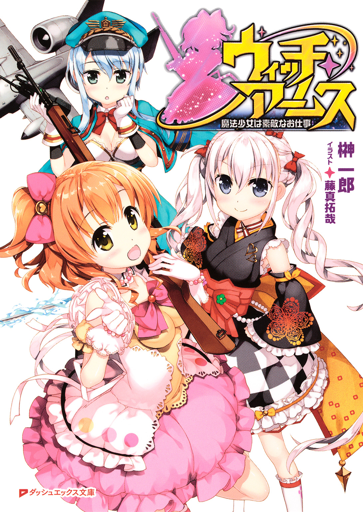
この本は縦書きでレイアウトされています。
また、ご覧になる機種により、表示の差が認められることがあります。
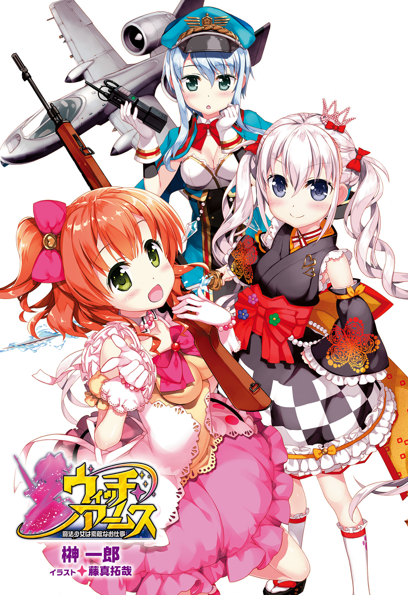

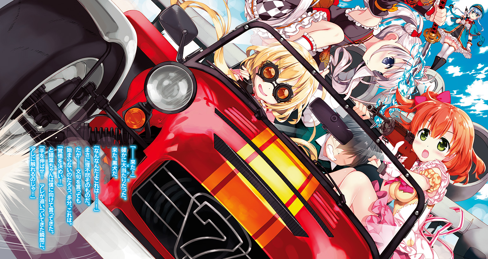
 ダッシュエックス文庫DIGITAL
ダッシュエックス文庫DIGITAL
ウィッチ・アームス
魔法少女は素敵なお仕事
一郎
序章 魔法少女は来てくれない
僕達は、いつだって日曜の朝が待ち遠しかった。
幼稚園がお休みだから、ではなくて。
小学校がお休みだから、でもなくて。
むしろ土曜や日曜に幼稚園や小学校が無いのは、寂しいとさえ思っていたけれど。
それにもまして僕達は、日曜の朝を土曜の夜から......いや、毎日ずっと楽しみにしていた。
理由は簡単。大好きなテレビ番組が放送されるから。
勿論――親は僕達の見るテレビ番組をきちんと把握していて、それらをちゃんと、ビデオに予約録画してくれていたのだけれど。そういう事とは全く関係なく、僕達は朝の放送時刻になると、いそいそと寝床から起き出し、三人揃ってテレビの前に座り、今か今かと番組が始まるのを待っていた。
日曜の朝は、特別だった。
僕達みたいな子供の為の番組が、目白押しだ。
特撮も。アニメも。
格好良かったり、可愛かったり、時に怖かったり、様々な登場人物達が次々に画面の中に現れては、休む間も無く僕達を楽しませてくれた。僕は、姉と妹に左右を挟まれながら、テレビの前で歓声を上げ、時には泣き、時には怒り、夢中になって幾つもの物語に没頭した。
中でも特に、僕達がお気に入りだったのは――
『アラミタマが出たわ！』
『みんな、変身だ！』
『油断しないで......』
『ボク達の力を見せてあげる！』
『貫け、我が一撃！』
――格好良くて、とても強い、魔法少女達。
彼女達が、沢山出てきて、不思議な力でアラミタマと呼ばれる怪人や怪物と戦うアニメ『封神乙女メイデン・クラフト』だった。
「がんばれ、メイデンがんばれ！」
「アラミタマにまけるな！」
「あ、フタバがあぶない！」
「だいじょうぶだよ、リオリがたすけにくるよ！」
「あ、フィンだ！ フィンがきたよぉ！」
僕も姉も妹も......もう、番組がやっている最中は大興奮。
そして終わった後は、やっぱり三人揃って『メイデン』ごっこをしたものだ。大抵は、僕が『女の子じゃないから』という理由でアラミタマ役をやらされていたのだけれど。
そんでもって『たまには僕にもメイデンをやらせてよ』と訴えると、何故か妙に面白がった親に女装させられて――姉や妹の服を着せられて、その上写真まで撮られたりしたけれども。
それでも僕は、あのアニメが大好きだったし、姉や妹も『大きくなったら私もメイデンになる！』と主張して憚らないくらいに、はまっていた。数在る子供番組の中でも『メイデン・クラフト』は一番で、特別だった。
僕等にとって『メイデン・クラフト』の魔法少女達は大正義で。
格好良くて、可愛くて、素敵な、憧れの的で。
だから僕達は――何も疑問に思っていなかった。
メイデンが、何を相手に戦っているのか......という事に。
勿論......メイデンは正義の味方だから、戦う相手は悪者だ。アラミタマと呼ばれる怪人や怪物だ。そいつらはいつも悪い事をして、人々を苦しめる悪い奴等だった。
逆に言えば、悪い奴等をやっつけるからこそ、メイデンは正義の味方であった訳だし、悪い奴等は、僕達の様な子供や戦う力を持っていない弱い人々を襲ってくるからこそ、疑う余地など無いくらいに、はっきりと悪だった。
それは、間違いない。
けれど――
『番組の途中ですが、ここで臨時ニュースをお知らせします』
――ある時。
突然『メイデン・クラフト』を放送していたテレビの画面が、切り替わった。
きらびやかな衣装に身を包んだ魔法少女達が姿を消し、何だか背広を着て厳しい顔をしたおじさんが、低い声で何かを話し始めたのだ。
『......先程、東海地方で発生した震度七の地震の影響により......』
「あれ？ なに？ メイデンじゃないよ？」
「メイデンは？ ねえ、おねえちゃんメイデンは？」
「これは、ニュースだね」
不思議がる幼稚園児の僕達に、一人だけ既に小学生だった姉は、したり顔で頷いてこう言ったものだ。
「りんじニュースだよ」
「にゅーす？」
「にゅーすってなに？」
「なにか、たいへんなことがおきたんだよ」
姉の言う通りだった。
しかめっ面をして喋るおじさん――ニュースキャスターは、すぐに画面から消えてしまった。だからといって『メイデン・クラフト』がまた映る訳でもなく、代わりに、凄く上から――つまり街全体を広く見渡す様な、高い所から撮ったらしい映像が流れてきた。
多分、ヘリコプターから見た景色だったのだろう。
その映像は......ひどく不思議なものだった。
当たり前の様に在る筈のものが、そこには無い。無かった。無くなっていた。
即ち――
「なに、これ......？」
街のあちこちで建物が崩れて。
所々では火事にもなっていて。
折れて崩れた高速道路や、土砂に埋まった民家や、川に落ちた自動車や......家も車も道も、一つ一つは見覚えの在る、馴染みのものなのに、それらが変な形に組み合わさって、見た事も無い景色になっていた。
最初、僕はそれが何を映しているのか分からなかったくらいだ。
幼い子供にとっては絶対に壊れる事の無い、頑強な諸々が、玩具の様に壊れていた。
在って当然の日常が、そこには、もう無かった。
『被害は広範囲に及び、政府は自衛隊の災害派遣を――』
映像は、凄惨な災害の現場を――その時起こっていた出来事をそのまま伝えていた。
でも......
「じしん......？」
テレビの画面越しに見るその光景は、子供の眼には、アニメや特撮と大差無く映った。
いや。僕達にとって『非日常』とは常に画面の向こう側に在るものだった。だから僕達には、その大変な災害現場の映像も、現実味を欠いて見えて――何処か遠い遠い別の国の、僕達とは全く関係の無い世界の出来事の様にも、思えたのだ。
本当に洒落にならない様な場面は、勿論、映されていなかっただろう。
死体とか。あるいは――人が死体になる、その瞬間とか。
だから僕達は、その映像の伝えようとする本当の恐ろしさを理解してはいなかったし、特に怯えたりもしなかった。むしろ呑気にその災害現場の映像を眺めながら、『メイデン・クラフト』を見る事が出来なくなった事に不平不満をこぼし......いつしか、その報道特別番組すらもが『メイデン・クラフト』の延長であるかの様に感じはじめていたのだ。
「だいじょうぶだよ。すぐにメイデンがきてくれるし！」
「うん。メイデンがみんなをたすけてくれるんだよ！」
僕と妹は、そう言って笑顔で頷き合った。
それが大変な状況で。沢山の人達が困っていて。もっと沢山の人が苦しんでいて。
そういう事は何となく子供心にも理解出来たのだけれど、だからこそ、僕等は災害現場で酷い目に遭っている人達を、アニメの中の魔法少女達が――正義の味方が、放っておく筈がないと思った。彼女等が助けに来てくれるものだと思った。それを疑いもしなかった。
しかし......
「でもこれ、アラミタマじゃないし......」
そう言ったのは僕より一つ上の姉だった。
彼女もまた僕達と同じ様に幼くて、画面の中の災害がどれ程に洒落にならないものかははっきりと理解はしていなかっただろう。けれども一足先に『学生』になっていた彼女は、僕や妹よりもほんの少しだけ『現実』というものを理解していたに違いない。
「メイデンはアラミタマとたたかってるんだし。ここにはこないよ。きっと」
「え............？」
姉の言葉は、僕にとって衝撃だった。
多分、妹にとっても同じだっただろう。
メイデンは正義の味方だ。
メイデンは弱者の味方だ。
こんなに沢山の人が苦しんだりしているのだから、メイデンはきっと来てくれる。だってメイデンは正義の味方、弱い者の味方なのだから。僕達はそういう場面を何度も何度も見てきた。それはもう僕や妹にとって間違いの無い真実だった――筈だ。
『御覧ください、燃えています、民家が幾つも燃えています』
『あ。土砂崩れで――』
『あそこ、あそこ！ 人が！』
街が酷く壊れて、潰れて、沢山の人が必死に逃げ惑って。
その様子を、映像は僕達に伝えてきた。
ただただ悲惨な現場の様子を――ただそれだけを。
正義の魔法少女は、いつまで待っても来なかった。
僕と妹は、今か今かと画面を見つめていたのだけれど、あの、格好良く変身して困った人達を助けてくれる魔法少女達は、いつまで経っても出てこなかった。
メイデンだけではなくて。
変身超人も。未来戦士も。究極聖者も。無敵戦隊も。
僕達が熱狂していたアニメや特撮の主人公達は、誰もやっては来なかった。自衛隊とか警察とか消防とか、そういう大人の人達が一生懸命に働いている姿は映っていたけれど、それだけだったのだ。
「ねえちゃん。ねえちゃん。メイデン、こないね」
僕は何だか哀しくなってそう姉に問うたものだ。
すると姉は......困った様に首を傾げてこう言った。
「じしんとか、メイデンでもどうしようもないし」
「どうしようもないの？」
「ないでしょ。じしんとか、たたけないし。キックとかパンチとかきかないし」
「まほうは？」
「まほうも、だめじゃないかなあ」
「まえに、わるものがまほうでじしんおこしてたときは、メイデンがやっつけたよ？」
「あれ、わるものをやっつけただけだし。このじしん、わるものがしてるんじゃないし」
「わるものいないの？」
「いないよ。たぶん」
当時の僕や妹は、姉の言葉の意味を半分も理解していなかったと思う。
けれど後々、僕も小学生になり中学生になり、その頃になって、ようやく姉のその言葉の意味が――姉自身が意図した以上の意味で、理解出来る様になった。
そうだ。姉は正しかった。
メイデンは、アラミタマと呼ばれる怪人や怪物と戦う正義の味方だ。
確かにアラミタマは悪い奴等で、地震を起こしたり、洪水を起こしたり、台風を呼んだりして、みんなの街を壊したり、弱い人達を苦しめたりする。そういう悪者を正義の魔法少女はやっつけて、懲らしめてくれるのだ。
だけど......アラミタマとは関係なく地震は起こったり、洪水は起こったり、台風はやってきたりもする。それは元々この世界に当たり前の様にあるもので、そこには悪者の関与も無いし、そもそも、害意や悪意といったものが無い。単なる自然現象だ。
地震は『悪』じゃない。洪水も台風も『悪』じゃない。
ただ在るように在る、それだけのものだ。
ましてや、それらの自然現象には『急所』や『弱点』や『諸悪の根源』は無い――悪者の様に『こいつをやっつければ全部、悪い事は無くなる』誰かが居ない。
あるいは、災害対策を怠った行政だの何だのが悪いという人は居るのかもしれないけれど、それすら、単に失敗に過ぎなくて、そこに誰かを苦しめてやろうとする様な、積極的な『悪』は無い。
それは単に、不幸や、不運や、理不尽、というだけなのだ。
もっと言えば、世の中の『不幸』や『不運』や『理不尽』には形というものが無くて、とらえどころも無くて、だから『これをやっつければみんな幸せになれる』と分かる様な何かも無くて。
それは、ひどく、どこまでも漠然としていて。
だからメイデンにも――正義の魔法少女がたとえ本当に存在していたとしても、それは、多分もうどうしようもなかったのだろう。不幸や不運や理不尽は、アラミタマの様に叩く事も、砕く事も、燃やす事も、凍らす事も、出来ない。空気や水の様なもので、およそ捉えどころが無い。
多分――世の中の人々を苦しめているそういった物事は、きっと、そういう『形が無くてよく分からない何か』が大半で。
分かり易くて戦い易い『悪』なんて居なくて。
だからきっと正義の味方とか弱者の味方とか、そういう人達も、居ない。存在する事が出来ない。そもそも斃すべき悪が居ないのだから。
中学生になった僕は、そんな風に考える様になっていった。
そうだ。
正義の味方なんて居ない。
正義の魔法少女も居ない。
切ないけど、哀しいけど、寂しいけれど、それが、現実なのだ。
けれど............
第一章 その名は魔法少女
その日......僕は『魔法少女』に出会った。
●
いつの間にか眠ってしまったらしい。
「――終点ですよ」
と車掌さんに起こされて、僕は眼を醒ました。
「あ......すみません」
目元を擦りながら辺りを見回すと、電車の中は既に空っぽで、僕と車掌さん以外に人の姿は無い。僕は膝の上に抱えていたボストンバッグを手にすると、改めて車掌さんにお礼を言ってから電車を降りた。
そこで――
「うわぁ......」
思わず感嘆の声が漏れた。
ホームが、幾つも並んでいる。
当然ホームの数以上に、線路も引き込まれて並んでいる。奥の方を見てみると、それらの線路はいずれも、先には延びる事無く、途切れていた。確かに終点だ。線路の端には『×』印が描かれた車止めも見える。
「でっかいなぁ......」
それが第一印象だった。
頭上を見上げると、十メートルか、二十メートルか、とにかく距離感が微妙に摑みにくい高さに、屋根が在る。それは幾つものホームと線路をまとめて覆いながら、僕の視界いっぱいに広がっていた。
巨大建築物である。少なくとも僕の郷里に在った駅舎とは、全然違う。
恥ずかしい話だけれど......僕はただそれだけの事で、既に舞い上がり気味だった。
「......♪」
鼻歌交じりに、僕はホームを歩き始めた。
歌にもある様に、僕にとって線路というものは前にも後ろにも『どこまでも続く』ものであって、その終わり――終点というものは、理屈として在るのは分かっていても、その存在を自分の眼で見た事は無かったからだ。先程の車止めにしても、写真で見た事は在ったけれど、現物を眼にするのは初めてだった。
全ての道はローマに通ず――なんて言葉が在るけれども。
僕の眼には、この日本国中のありとあらゆる線路が、巡り巡って此処に繫がっているかの様にも見えた。世界の中心なんていうのは言い過ぎとしても、色々な人や物が此処に集まってきているのだと実感出来る――それは、そんな光景だった。
「都会だね。遂に来たって感じ」
僕は誰にともなく呟くと、改札に向かう............その前に。
「............」
ふと、背後を振り返ってみた。
誰も居ない。
僕が降りたホームには、もう他に人の姿も無くて、僕が乗ってきた電車の扉も閉まっていて、車掌さんの姿も無かった。ゴミ箱と自動販売機が幾つか見えるけれど、特に人が隠れられそうな場所は無い。無い様に見えた。
「さすがにないよね。それは。うん」
僕は苦笑して再び歩き出す。
家族をほんのちょっとでも疑った事を、僕は胸の内で恥じた。
「あれだけ、何度も話し合ったんだし......」
自分に言い聞かせる様に呟くと、僕は今度こそ改札に向かって歩き出す。
そうこうしている間にも、新しい電車が隣のホームに滑り込んできて、何十人、何百人って数のお客さんを吐き出していた。凄い。もの凄い人の数だ。それを見ているだけでも僕は何だか酔いそうなくらいだ。
「人、多いなぁ」
改札を出ると、更に人の数は増えた。
しかし何より僕が驚かされたのは、改札の外にも、駅舎が延々と広がっているという事だった。どれだけ大きいんだろうか――この駅は。
僕の感覚だと、駅舎というのはそもそも、ホームに付随して駅員さん達が詰めている小さな建物が一つある程度、ホームに屋根が付いただけの無人駅も少なくない......そんな認識だったのだけれど。
こういう大きな駅は、もう、それだけで驚きというか、中を歩くだけでも初体験の連続である。しかもこの大きな施設の中を、数え切れない程の人がひしめいている。コンビニだの喫茶店だの、色々なお店まで何軒も在る。飲食店はまだ分かるけれど、駅の中で服なんか売って、買う人が居るんだろうか。
そんな事を考えながら、きょろきょろと視線をあちこちに向けていた僕は――
「――あっ」
人とぶつかってしまった。
「ご、ごめんなさい」
幸い、強く当たった訳ではなくて、特に痛くもなく、僕も相手の人も、わずかに姿勢が崩れただけだった。でもよそ見をしていたのは事実なので、ここは謝っておかないといけないだろう。僕はぶつかった相手に向き直って、頭を下げた。
しかし......
「いいえ、こちらこそごめんなさい」
と相手も、こちらを向いてそう謝ってきてくれた。
女の人――いや女の子だ。
くるくるとよく動く大きな碧い瞳がまず印象的で、可愛かった。
スタイルは凄く良いというか、身長は高いし、胸も大きくて、そのくせあちこち引き締まっていて、とても大人っぽいんだけれど......顔立ちは何処か幼い感じが残っている。表情が明るくて、天真爛漫というか無邪気というか、そんな感じだ。
だから年齢が、よく分からない。
何故か左脇に、頭の大きな猫の――それも赤と白で彩色された不思議な縫いぐるみを抱えていて、余計に子供っぽい雰囲気が強調されている感じだった。
どうやら向こうは向こうで何か急いでいたみたいで、僕と言葉を交わした直後、何処からか別の、眼鏡を掛けた女の子が駆け寄ってきて、何事か話し掛けている。
「エリス、そっちは？」
「駄目です、見つかりませんね」
改めて僕に軽く会釈してから、その縫いぐるみの女の子は連れらしき子と一緒に、歩み去って行く。
「......学園からの連絡では......辺りに......」
「......でも......だから......」
遠ざかる女の子二人の後ろ姿を見送る僕。
その片方、僕にぶつかった方の子の後ろ姿を改めて見て――
「あ。獣毛人の人」
お尻の辺りで揺れる細長い尻尾に気づき、僕はそう呟いていた。
よく見れば頭にも二本、柔らかそうな毛に覆われ、ぴんと上を向いた尖り耳が備わっている。尻尾と毛に覆われた尖り耳は、獣毛人の特徴だ。
「さすがは大都会......」
僕はまた感心していた。
改めて見回してみれば――此処は単に人が多いだけでなく、人種も色々なのだと気付く。
明らかに外国人って感じの人達をあちこちに見かけるのだ。白人、黒人、獣毛人や長耳人もちらほら見かける。
僕の郷里じゃ外国人なんて珍しいから、そこに居るだけで注目の的だし、長耳人なんかが来ようものなら、村をあげての大騒ぎになっちゃうけど......此処じゃ当たり前みたいな感じで、皆に交じって歩いている。
うん。都会だ。すごく都会だ。
僕は満面に笑みを浮かべて独り頷く。田舎者丸出しっていうか、多分、周りの人達からは、意味もなくにやにやしている変な奴に見えただろうけれど、そんな事を気にする余裕も無いくらいに、僕は興奮していた。
それは駅舎を出ても、しばらく続いた。
例えば――
「駅の外にコンビニが三軒も......！」
と駅前に幾つか点在するコンビニの店舗に驚いてみたり。
「というか、どっちを向いても建物ばっかりだよ......！」
と壁の様に並んでいるコンクリートの高層建築物を仰ぎ見たり。
更に言えば、足の下はアスファルトで土なんて殆ど見ない事に驚いたり。
街路樹やら花壇やらは見られるけれど、本当に添え物っぽいというか、思い出した様にぽつぽつと道路に沿って並んでいる程度だ。田舎じゃ、とりあえずぐるりと一回転すれば、視界の端には必ず雑木林とか畑とか田圃とかが見えたものだけど、此処にはそういうものが一切無い。
「――ああ」
感嘆の吐息を漏らす僕。
本当に僕は、都会に来たのだ。
いつまでも駅前に突っ立って、喜びを嚙み締めている訳にもいかない。
僕は、ポケットから取り出した地図を眺めて歩き出した。
まず目指すべきは、この春から僕が通う予定になっている高校の寮だ。先に郵送されてきた学校案内のパンフレットを見た限り、この駅前から更にバスで何駅か行った所に在るらしい。
けれど地図を見る限り、徒歩で行けない距離でもない。一時間ばかり歩く必要は在るだろうけど、どうせなら初めての都会を満喫しながらのんびり辿り着けば良いのだ。
僕はそう考えて意気揚々と歩き出す。
そして――............
「......あれ？」
数分後。
僕は早々と道に迷っていた。
●
僕は途方に暮れていた。
「......どうしたものかな」
都会に出てきて早々に道に迷うなんて、田舎者丸出しという感じで大変に恥ずかしい。
まず、方向が分からなかった。
どっちが北でどっちが東でどっちが南でどっちが西か。同じ様な高層ビルが建ち並んでいるせいで、谷底か何かにいる様な気分になってしまい、目印になる地形を見つけにくいのだ。
郷里では何処に行くにも『大体あっちのほう』というのさえ分かっていれば、迷ったりはしなかったのだけど......此処ではそうもいかない。
ならばと太陽の位置から方角を測ろうにも、生憎の曇り空で、太陽の位置なんて全く分からない。並んでいる建物も大抵は四角くて灰色のビルなので、目印になる様な特徴的な建物も見つけにくい。
困った。とても困った。
道の途中で立ち止まって悩む事、しばし。
「――そういえば！」
僕は、新生活にあたって手に入れた、便利な道具があるのを思い出した。
「そうだよ。これだよ。こういう時の為のものだよね！」
呟きながら僕はポケットから買ったばかりのスマートフォンを取り出した。確かこれにＧＰＳだか何だか、位置を測定する機能がついていて、道案内をしてくれる筈なのだ。
「ええと、これを......こうして」
僕はスマートフォンのアプリの中から『ナビ』と書かれているアイコンに触れて、この機能を呼び出してやる。途端に、地図が表示されて、僕の現在位置を示すらしい三角形もそこに浮かび上がっていた。
よしよし。これで迷わずに行ける。
画面上の地図と周囲の風景を照らし合わせながら僕は歩き出――
「えっと。これがこれで。これが――あれ？」
――したのだけれど。
「なんだこれ？」
画面の上の矢印が安定しない。
変な所に飛んだり、戻ったり、同じ所でぐるぐる回ってみたり......これが全くアテにならないのに気付くのに、五分と必要無かった。自分が何処に居るのかも分からない。というか画面の地図も何だか、目の前の風景と違っている気がする。
「使えないな」
便利だなんて話をよく聞くけれど......皆、こんな適当なものに道案内されて、ちゃんと目的地にたどり着けるのだろうか。それともこれは僕の使い方が悪いのだろうか。なんだか地図がぐにぐに歪んで、立ち止まっている間にも刻々と変わっている様に見えるから、これはスマートフォンそのものか、アプリが壊れているのかもしれない。
「誰かに道を訊いた方がいいかな」
お巡りさんとか。
そう思って僕は周囲を見回してから......ようやく気付いた。
「あ......れ......？」
駅ではあれ程に溢れていた人の姿が、いつの間にか、僕の周囲から絶えている。
「......おかしいな」
僕以外に人の姿は無くて、そういえば歩いている最中に何軒も見かけたコンビニも、見回してみる限り、一軒も無い。同じ様な――無個性な灰色のビルが延々と建ち並んでいて、それぞれの区別すらつかない。
道路には何台か車は停まっているけれど、中に人の姿は無い。
何だろう――此処は。
まるで......
「ゴーストタウン......みたいな......？」
そんな筈は無い。数分前まではあんなに沢山人が行き来していたのに。
迷った挙げ句に、何処か変な場所に入り込んでしまったのだろうか。
いっそ元来た道を引き返すべきか。
僕がそう思って踵を返した――その時。
「............え？」
ふと僕は何か妙な音を聞いた様な気がした。
爆発音の様な......銃声の様な......
何処から聞こえてきたのだろうかと見回してみても、都会の景色に何か変化が在る訳でもなく。相変わらず人の姿も見えない。
「耳鳴り？」
それとも幻聴か。ずっと電車の中で寝ていたので、まだ寝ぼけているのだろうか。
そんな事を考えながら僕はふと、傍らの建物の壁――いや、正しくは何かの施設らしい建物をぐるりと取り囲む塀の方を、見た。今ひとつ自信が無いけれど、先の音は、方向としてはそちらから聞こえてきた様に思ったからだ。
そして――次の瞬間。
僕の目の前で、ぴしりと音を立てて、塀に亀裂が走った。
「えっ？」
僕は驚いて身を竦ませる。
突発的な事態に遭遇した人間なら当たり前の反射行動だ。
でも僕は――その場から、這ってでもいいから、遠ざかるべきだった。
「――!?」
轟音と共に塀が崩壊したのは、次の瞬間だった。
大きな瓦礫がざらざらと雪崩れ落ち、啞然とする僕の目の前に塵煙が膨れ上がって視界を灰色に塗り込めていく。僕は思わず口と鼻を押さえて一歩後ずさった。
そこに――
「がっ......」
「......『が』？」
「............ぁぁぁぁぁぁぁあああああああああああああああああああああああああああああああああああああああああああああああああああああああああああああああああああああああああああああああああああああああああああああでむッ！ ですっ！」
溜めに溜めてから一気に解き放つ様な感じで吼えながら、というか叫びながら、誰かが全力投球されたボールみたいな勢いで吹っ飛んできた。
真っ直ぐ、僕に向かって。
「ちょっ......!?」
誰か――と曖昧な表現になっているのは、後ろ姿しか、というよりお尻しか見えなかったからである。一瞬後には僕の視界いっぱいにその誰かのお尻が広がって、更に次の瞬間、僕は猛烈なお尻からの体当たりを喰らって、そのままひっくり返っていた。
●
「兄ちゃん、都会の高校に行くって本当？」
「え？ あ......うん。誰から聞いたの？」
「姉ちゃんから！」
「あ、そっか。うん。そのつもり」
「なんで？」
「なんでって――それは」
「危ないよ！ 駄目だよ！ 都会は怖い所だよ！」
「いや、それは偏見――」
「兄ちゃんが都会になんて出たら、すぐに騙されて手込めにされて売り飛ばされるよ！」
「男の僕がなんで手込めにされるんだよ！」
「交通事故も多いから、トラックに轢かれて異世界に飛ばされるよ！」
「なんで異世界!?」
「都会の孤独につけ込んでくる悪い女に騙されて身ぐるみ剝がされるよ！」
「どんだけちょろいんだよ、僕は......」
「ドラッグとか脱法ハーブとか売りつけられておかしくなっちゃうよ！ 強盗に路地裏に引き込まれて銃を突きつけられて有り金全部取られるんだよ！ お金持ってなかったらそのまま射殺されちゃうんだよ！ 通り魔がうろうろしてて理由もなく刺されたりするんだよ！ テロリストが自爆テロしてくるんだよ！ 巻き込まれて死んじゃうよ！」
「いや、だから......どれだけ偏見抱いてるんだよ、都会に」
「兄ちゃんみたいなおっとりした田舎者が都会に行ったら秒殺だよ！」
「紛争地帯か何かと間違えてない？」
「とにかく駄目だよ兄ちゃん、都会とか無理だよ、っていうか行っちゃヤダ！」
「で、でも、もう決めちゃったから......」
「どうしても、どうしてもっていうなら......」
「いうなら？」
「この私を斃してその屍を越えて行くがいいよ！」
「何だその熱い展開？」
「いくよ兄ちゃん！ 覚悟っ！」
「いや、ちょっ......待っ......」
●
気を失っていたのは多分、数秒の事だろう。
何だか走馬燈の様に何日か前の記憶が延々と脳裏を回っていた様な気もするけれど、それはさておき。
「ぐぎぎぎぎ......」
痛い。具体的には後頭部と腹部がとても痛い。
一体......何が起こったのか。
まず、いきなりコンクリート製の塀が崩れた。
そしてその向こうから誰かがすっ飛んできた。
............
なんだこれ。
事故か。それとも何らかの犯罪の類か。
都会は危険が一杯――だなんて妹が言っていたけれど、これがそうなのか。これが田舎者への、都会の洗礼というものなのか。これを乗り越えてこそ本当の僕の、お洒落なシティ・ライフが始まるのかそうなのか。
仰向けに倒れたまま、若干、激痛と衝撃に混乱した頭でそんな事を考えていると。
「て......手強いぜっ！ です！」
誰かが僕の上で言った。
声の調子からすると、どうも女の子の様なのだけれど。
「............」
確認出来ないのは、その女の子らしい誰かが今も尚、僕の顔の上に乗っかっているからだった。もっと正確に言えばそのお尻の下に僕の顔面を敷いているから、の様だった。あちこち曖昧で断言することを憚られるのは、僕に見えるのはその女の子の穿いているであろう縞模様のパンツだけであり、僕の頭部を丸ごと、スカートらしきものが覆ったままだからだ。
（あの。退いて貰えませんか）
そう言いたいのだけれど、もごもごと不明瞭な声しか出ない。
しかもその誰かは、悔しげにばたばたと両足を動かしている。なので、余計にぐりぐりとお尻を押しつけられる形になって、僕は痛いやら苦しいやらで、とても辛い。
誰かのお尻の下に顔を敷かれるなんて経験、子供の頃に『メイデン・クラフト』ごっこをしている時に姉にされて以来だ。あの頃の姉は今と違って随分――いや、今はそんな事をしみじみ回想している場合じゃなくて。
「――いや。手強いというより」
ふと誰かの――僕を尻に敷いているのとは別の声が聞こえた。
「......とらえどころが無いであります......」
でもって、続くこれは更に別。
つまり......僕の耳には三人分の声が聞こえている事になる。
声音や口調からそれぞれが別人だというのは分かるけれど、やっぱり僕は縞パンのお尻に敷かれたままなので、それを目で見て確認する余裕なんて在るはずもなく。
「暖簾に腕押し糠に釘じゃな」
「やはり魔封使いが居なければ、根本的に解決しないであります」
「ああもう、どうすればいいんだぜ!? です！」
最後の声の主はじれったそうに言って、また足をばたばた。
あの、すみません、本当に苦しいんですけど。
と――手を伸ばし、下に僕が居るのだという事に気付いて貰おうとしたその時。
――ぎいいいいいいいいいいごごごごごごごごごごごごご！
それは――吠え声、だったのだろうか。
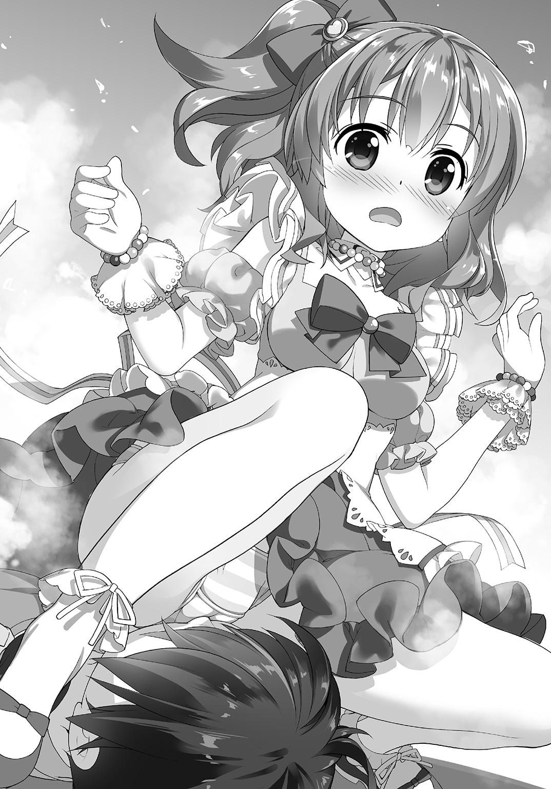
何か奇妙な、ひどく耳障りな『声』が聞こえた。
先の三人分の声は多分、女の子、つまりは年若い女性のものだと分かるのだけれど、こちらは明らかにそれとは――ありとあらゆる面で異なっていた。
女性の声でも若者の声でもない。
というか多分、これは人間の声じゃない。
そんな風に確信できるくらいに、とてもとても、それは異質だった。
「............？」
なんだろうこれは。
田舎だとたまに、熊とか竜が出たりもするけれど......さすがにこの都会でそれは無いだろう。というか、これは熊の声とも竜の声とも違う。では何の声なのかと問われると僕にも答えられない。あるいはそれは声なんかではなくて、何かの音なのかもしれない。
そこに生き物としての意志が感じられないのだ。
しかし......
「畜生、こっちに決め手がねえと思って好き勝手にやってくれやがるぜ――です！」
僕を尻の下に敷いている女の子は悔しげにそう言った。
「こうなったら、こうなったら............ええと」
そこで急に女の子は自信なさげになる。
今までの言葉から察するに、この女の子達はあの、奇妙な声だか音だかを発する『何か』とやりあって......どうも『戦って』いるみたいだった。塀が崩れたのもその余波だろうか。しかしコンクリートの塀がいきなり崩れるなんて尋常じゃない。
一体......この子達は何を相手に、どう戦っているのだろうか？
「......ところで、彩芽？」
ふと二人目の女の子が言う。
「誰じゃそいつ？」
「......へ？」
「お尻に敷いてるであります......」
と三人目の女の子が、ずばりそう指摘してくれた。
会話から察するに、どうやら一人目の、僕の上にいる女の子の名は彩芽というらしい。
あの、彩芽さん、忙しいのは何となく分かるんですが、大変重いというか痛いので、退いて貰えませんでしょうか――などと、とりあえず念じてみる。通じるとは思えなかったけども。
「ひゃっ!?」
悲鳴じみた声がする。
どうやら彩芽さん本人はようやく、自分が僕を、お尻の下に蹂躙しているのだという事を理解してくれたらしい。
「なんかお尻の下が温かくて柔らかいと思ったよ......もとい、思ったぜ、です!?」
とりあえず僕の顔の上から彼女のお尻の圧力、略して尻圧が消える。
視界の端にふわりと舞うスカートの、白いフリルが見えた。
「いつの間に!? です！」
「もっと早う、気付け」
と二人目らしい女の子が、僕の代わりにツッコミを入れてくれた。
まったくです。
「............いてて......」
僕は――とりあえず身を起こして周囲を見回した。
まず眼に入ったのは、先に見たとおりに崩れたコンクリートの塀。そしてその周りに半円を描く様にして女の子が三人立っている。
僕に一番近い位置にいる一人が多分、今の今まで僕の顔の上に乗っかっていた彩芽さん――いや彩芽ちゃんというべきか。見た目はちょっと幼い感じ、多分、郷里の妹と同じくらいで僕より一つか二つ年齢は下――中学生だろう。
眼はぱっちりと大きくて、かなり可愛らしい顔立ちだ。枯葉色の髪を一房、括って横に垂らしている髪型が、ちょっと特徴的だった。
ついでに言えば――彼女は何やら純白と薄紅を基本の色調にした、ドレスっぽい衣装を着ている。半袖とスカート部分が大きく膨らんだ感じで、どう見ても普段着じゃないというか、僕の目にはやたら派手に見えるのだけれど、都会じゃこういう服が流行っているのだろうか。
フリルも多めで、可愛らしくて、まるで――まるで......
「変態？ 変態かてめえ、です！」
彩芽ちゃんは、僕の方に詰め寄りながらそう問うてくる。
若干、頰が赤いのは照れているというか、恥ずかしがっているのだろうか。まあ見知らぬ相手をいきなりお尻の下に敷いてぐりぐりやっちゃった訳だから、これで恥ずかしいと思わなければ、かなり問題がある。
「い、いや......」
僕は詰め寄ってくる彩芽ちゃんに首を振った。
どうやら彼女は、僕が好んで彼女のお尻の下に飛び込んだと思っている様だけど、それは誤解も甚だしい。ここはきちんと釈明すべきだろう。憧れの都会生活、その新生活一日目に痴漢冤罪で捕まるとか、勘弁願いたい。
「そっちが勝手に――」
「......来るであります」
しかし僕の弁明は、三人目の女の子が発した警告に遮られた。
こちらは金の――というより白金の髪を、ちょっとボーイッシュな感じに短く整えた女の子だった。
先程から日本語を流暢に喋ってるけど、純粋な日本人ではないのだろう。その顔は明らかに彫りが深くて、眼も若干、蒼く見える。彩芽ちゃんに負けず劣らず可愛らしい顔をしているけれど、全体的に眠そうというか、その表情には何処かぼんやりと緩んだ様な印象が在った。
こちらが着ているのは空色の――何処か制服っぽい衣装。空色のスカート、空色の上着、そして白いブラウス。ついでに帽子。きちっと着ればかなりお堅い雰囲気になりそうだけれど、この女の子はそれを着崩しているというか、上着だけ肩に羽織る様にしていた。
帽子もちょっと独特で......警察官とか軍人とかが被るものに似ている。
何だろうこの格好。
可愛いけれど、何だか妙な感じだ。
こういうのが都会では（以下略）。
そして――
――ぎいいいいいいいいいいごごごごごごごごごごごごご！
再びあの異様な声とも音ともつかない何かが響く。
同時に崩れた塀の向こうから何かが姿を現した。
「――!?」
何か？ そう。何かだ。そうとしか言いようが無い。
具体的に表現するのが、すごく難しい。
その発する『声』が奇妙なのも当然と言えば当然だろう。それには口も無ければ鼻も無いのだから。ついでに言えば眼も耳も無いし、四肢とか首とか胴とかも無い。
その形は常に変化しており、塀の崩れた部分から出てくるその動きも、『這う』とか『歩く』とか『跨ぐ』とかいった関節による動作をまるで感じさせない。むしろどろりと割れ目から粘性の高い液体が滲み出てくるのに近かった。
何もかもが曖昧で、輪郭が定まらず、まるで煙の様だ。
なのに――雲か霞の様に希薄な存在に見える一方、そこに『居る』のだという事は分かる。それだけは間違いないと分かるのだ。強烈な存在感がひしひしと僕等の方に伝わってくるから。
しかも――
「......!?」
それは一つではなかった。
一匹なのか一頭なのか一個なのか一体なのか――数え方は分からないけれど、とにかく気がつけば、周りに幾つも幾つも同様のものが存在していた。何処からやってきたのかと不思議に思う僕の目の前で、新しいそれが更にもう一つ、空中から滲み出る様にして出現した。
増えた......!?
それ、いやそれ等は、更に二つばかり増えると、僕や女の子達を囲む様にして近づいてくる。
「な、な、何あれ？」
僕は上擦った声でそう尋ねる。
とりあえずは彩芽ちゃんに尋ねたつもりだったのだけれど――
「グショウタイ」
そう答えてくれたのは、二人目の女の子だった。
グショウタイ？ グショウ......タイ......具象体、という事？
「まあ多くの者は、分かり易く怪異だの、魔物、と呼んでおるがの」
この子は――他の二人に比べて更に特徴的だった。
小さい。というか幼い。
他の二人が中学生か高校生、といった感じなのに比べると、この子は小学生そのものだった。ランドセルを背負っていても多分、違和感が無いだろう。
なのにその髪、頭の左右で二条に括っている長い髪が――白い。
いや。銀髪なのか、これは。
しかし先の蒼い制服の子と違って、こちらは明らかに日本人そのものの顔立ちだし、更に言えば和服っぽい衣装を着ている。いわゆる着物とは違うというか、明らかに改造しまくりのとても丈の短い衣装なのだけど、先の二人の衣装がポップな感じなのに対して、こっちは豪奢というか、和服調だけどゴシックな印象が強い。
だからという訳じゃないけど、とにかく、こう、お人形さんみたいな子だった。
精緻な工芸品の様に隙の無い、しかし見るからに繊細そうな顔立ちと、見るからに華奢な手足。生身の俗っぽさがまるで無い。幻想を呼吸しているかの様な、そんな愛らしい女の子だ。
「もっとも......こいつらは具象化が不完全じゃがな。お蔭で厄介な事、この上無い。確固たる実体を備えてはおらんから、斬っても斬れん。水や風の様なものじゃな。しかしその一方で水や風は、ある程度の強さになれば容易く人間を殺す。一方的で不公平な話じゃ」
「......？」
「誰だか知らぬが、巻き込まれたのが不運と諦めい」
和風ゴスロリの女の子は僕の方を見てそう告げてきた。
「え？ なに？」
その言い方は、何だかとても不吉なんですけど。
「まさか、僕、死ぬの確定......!?」
「............」
と和風ゴスロリの女の子は気の毒そうにこっちを見るだけで何も言わない。
あの。否定して欲しいんですけど......！
訳が分からない。一体これ何なの。
ただひたすら混乱する僕だったが――
――ぎゃりりりりりいいいいいいいいいい!!
不定形の怪物、のような何かが、また揃って吠え声を上げる。
しかも......何に気を引かれたのか、その中の一体が、僕の方に向かって近づいてくるのが――意外な速さで迫ってくるのが見えた。
「いや、ちょっと待っ――」
とりあえず声を上げてはみたけれど。
それは――待てと言われて止まってくれる様な相手には見えなかった。そもそも言葉が通じるかどうかも怪しい。先にも言った通り、眼も鼻も口も耳もそれには無い。生き物かどうかすらも分からない。
あるいは......敵意も悪意も無いのかもしれない。
ただ破壊をもたらすだけの何か。機械の様に。現象の様に。喜怒哀楽とは全く関係の無い次元で淡々と活動するもの。怪生物ですらない。文字通りの怪物。
けれど......
（コイツは――）
しかし間違いなく脅威だ。
一目見て僕はそれが分かった。多分、僕の本能か何かがそれを教えてくれた。
やばい。こいつはやばい。
死ぬ。殺される。
「逃げろ変態、です！」
と別の怪物に対して身構えつつも、彩芽ちゃんがそう叫んでくる。他の女の子達もそれぞれ別の怪物と向かい合っていて、僕を助ける余裕とかは無さそうだった。
そうだ。ここは逃げるべきなのだ。
多分そうするのが、彼女等の足を引っ張らないという意味でも正しい。その程度の事は僕にも分かった。
けれども僕は恐怖で足が竦んでしまっていた。
いや。それどころか――
「――あ」
無理矢理、踏み出した一歩――それでいきなり足下にあった瓦礫に、僕は躓いた。
慌てて姿勢を保とうとして咄嗟に踏み出した足が、更に地面の上に転がっていた瓦礫を踏んづけて、僕はどうしようもないくらいに姿勢を崩すと、その場に転んでしまった。
最悪だ。本当に最悪だった。
僕の転倒はその怪物を刺激したらしい。
それまではむしろゆっくりと近づいていたソレは、いきなり、速度を増して僕に飛びかかってきたのだ。
「ひっ......!?」
のしかかる様にして僕を見下ろす曖昧な何か。
「 ッ？」
ッ？」
「ッ！」
女の子達が何か叫んでいるけれど、彼女等の言葉に意識を向けている余裕が無い。
やばい。やばい。やばい。
爪とか牙とか無いけれど、このままじゃ殺される、それだけは分かった。本能が全力で逃げろ逃げろと僕に訴えているのだけれど、もう間に合わない。多分。
嫌だ。死にたくない。
こんな所で死ぬのは――嫌だ。
だから......
「............」
何処かで何かが、ぱちんと弾けた様な気がした。
遙か彼方の様な。
僕の奥底の様な。
多分それは......
「......あ。あ。あああ。あ」
僕の口から、ぽろぽろと意味を成さない声が零れ落ちる。
まるで自分じゃなくて、他人が喘いでいるみたいな感じ。
五感がまるで全部、麻痺したかの様に、視界は霞み、鼓膜は鈍り、嗅覚も触覚も味覚も何も感じない。感覚というものが、いきなり僕の身体から全て遠ざかってしまったかの様だった。
なのに、何かが分かる。
曖昧に霞む五感の中で、僕は、ソレに手を伸ばす。
摑んで。引き寄せて。それから......詰め込んで。
あれ？ 僕、何やってんだ!?
「――え？」
ふと気がつくと。
「............」
僕のすぐ横に跪きながら、彩芽ちゃんが呆然としていた。
多分、僕を助け起こそうとしてくれたのだろうけれど、しかし彼女はそれをする事無く驚いた様子で、僕と、そして目の前の曖昧な怪物を見つめている。
いや。違う。
それはもう曖昧な、怪物のようなもの、ではなかった。
急激に輪郭が定まっていく。細部が描き込まれていく。とらえどころの無かったその姿に実体が備わり、存在感が確固たる形をとり始める。
やがてそれは......
「......何コレ」
呆然と呟く僕の目の前で、それは、形を得ていた。
巨大な、しかし明らかに寸詰まりの――ワニ。
いや、元々ワニは手足が寸詰まりな感じだけれど、これはもう本当に色々全身のバランスが変だった。まず頭が大きすぎる。胴体と同じくらいで、しかも尻尾を直角に折り曲げ、後ろ足で直立している。
いわゆる二頭身というやつだ。
灰色の身体に、まん丸の大きな目玉。やたら短い手足、鱗に覆われているというのに、丸っこくて柔らかそうな胴体。本物のワニというより、漫画やアニメに出てくる、擬人化され、記号化されたワニの姿に近かった。
見方によっては、可愛く見えるかもしれない。
直立した時点での身長が四メートル余りで、わずかに開いた口に、びっしりと細かく鋭い牙が――ノコギリみたいな歯が生えそろっているのが見える、という点に眼を瞑れば、だけど。
なんというか、実に、取って食われそうなヤな大きさだった。
しかし......
「これは、まさか......こやつ」
「――マホウツカイ」
驚いているのは、和風ゴスロリの女の子と、それから蒼い軍服の女の子も同じだった様だ。まあ一番驚いているというか、訳が分からないのは、僕なのだけど。
『マホウツカイ』――『魔法使い』？
今、彼女はそう言ったのか？
でもそれは、誰を指して......？
「天然の、生まれながらのグショウカ能力者か」
と和風ゴスロリの女の子が呟く。
彼女の黒い瞳は真っ直ぐに僕を見つめていた――............って、僕？
グショウカ能力――具象化能力？ 天然？
唐突な話の流れについていけずに、混乱している僕。
その横でやおら、彩芽ちゃんが立ち上がって拳を握りしめた。
「何だかよく分かんねーけど、助かったぜ、です！」
「え。あの」
「お前のお蔭で、がっちりかっちり実体化したからな！ です！」
彩芽ちゃんは僕の肩に手を置いて言うと、にっこりと、その可愛い顔で笑った。
そこで僕は――気付いた。
怪物が一体だけになっている。
明らかに三体以上いたそれらは、いつの間にか消えていた。
居るのは目の前の一体だけだ。元々残りは影や幻の様なものだったのか、それとも――
「これで思いっきりガチでぶちのめせるぜ、です！」
......どういう事？
いや。何となく僕にも彼女の言う意味は分かっていた。
具象化。実体化。ぶちのめせる。ガチで。
そして形を得た――怪物。
つまり......
「こやつと出会ったのは偶然――いや、これも天運か」
と言うのは和風ゴスロリの女の子だ。
彼女の口調は何だか幼い姿に似合わず、とてもしみじみとしていた。
「え？ 天運って――」
「ええから、お主はそこにおれ」
なおも混乱中の僕に、和風ゴスロリの女の子はそう言うと、もう一人の、蒼い制服を着た女の子の方を向いてこう続けた。
「アニタ、こやつの護衛を頼む」
「了解。護衛任務の要請を承認であります」
と敬礼して応える制服の女の子。
この子はどうやらアニタというらしい。
彼女は僕を助け起こすと、両腕で僕の左腕を抱え込んで、引っ張ってきた。
「あっ......」
思わぬ急接近に驚いて声を上げてしまう僕。
「......？」
アニタという女の子はきょとんとした様子で僕の方を見る。
「あ、いや、その......」
大きな胸の谷間に僕の腕が挟まれる様な感じで、しかも凄く距離が近くなって、何というか――彼女の体温が感じられて。場違いにも心臓がどきどきしたのは――状況が緊迫しているからなのか、それともやっぱり僕も男だからか。
姉と妹に挟まれて育ってきたので、こういうスキンシップはいい加減、慣れたというか、飽きさえ感じていると思っていたけども。やっぱり家族以外の他人相手だと違うらしい。
いや。今はそれよりも――
「あの、何がなんだかよく分からないんですけど」
「......あなたのお蔭でしっかり戦えるのであります」
改めてはっきりと、アニタちゃんはそう言った。
僕のお蔭。
僕の......？
「な、なんで？」
「......こまかい事は後であります」
僕を引っ張って後ろに下がりながらアニタちゃんは言った。
同時に――
「いくぜ！ です！」
まるで万歳をするかの様に両手を頭上に掲げながら彩芽ちゃんが叫ぶ。
「再召喚――〈シャーリーン〉！」
それは、驚くべき光景だった。
両手を掲げた彩芽ちゃんの頭上から――何も無い空中から、無数の蛍火が滲み出る様にして降ってくる。それらは、雪の様に彼女の掲げた両手に、いや、その両手を結ぶ一線に降り積もっていくのだ。
手品？ 幻影？
いや。多分違う。ひょっとして僕は、今、奇跡を観ているのか？
「............」
僕が呆然と見つめる先で、光は光と繫がって形を成し、それはやがて、細長い棒状のものとして安定し、輪郭を得る。まるで幻想物語の一場面を見ているかの様な、不思議な光景だ。
そして――
「......って」
僕は眼を瞬かせて言った。
「え？ なに？ 何あの――鉄砲......」
空中から降り積もった光。
それは......あろう事か、銃になっていた。
細長くて、木で、持つ部分が在って。鋼の長い銃身が在って。
それは何処からどう見ても鉄砲だった。確か『ライフル』とか『小銃』とかいう種類だった筈。さすがに型番や製造メーカーまでは分からないけれど。
「鉄砲ではないであります」
とアニタちゃんは僕の顔を覗き込んで言った。
「魔法の杖であります」
「え？ 魔法の......杖？ 魔法？」
一体この子は何を言っているのだろう。
まあ確かに何も無い所から出てきたのは魔法っぽいけれど......というか魔法？
今、魔法って言った？
そういえばさっきも『マホウツカイ』って。
つまり――
「魔法少女の道具なのだから魔法の杖なのであります」
と――アニタちゃんは、ぼんやりしたその顔に、そこはかとなく得意げな表情を浮かべてそう言った。いわゆるドヤ顔というやつだ。全体的に表情が緩んだ感じなので、あんまり偉そうな感じはしないのだけれど。
「魔法少女って......」
テレビのアニメとかに出てくる、あの、不思議な力で変身する女の子の主人公を、そう呼んでいた筈だ。
『メイデン・クラフト』とか『マジカルいろは』とか――ひらひらのドレスを着て、魔法のステッキとかそういうアイテムを手にして、お供の妖精なんかがいたりして。
姉と妹に挟まれているせいで、その手の番組はとりあえず僕も見た事がある、というか幼稚園の頃は、もの凄く熱心に見ていたのだけれど――
「き、君達が？ 魔法少女？」
魔法少女が現実に、存在する？
「肯定であります」
こっくりと頷くアニタちゃん。
言われて見れば、彩芽ちゃんの服や、もう一人の子の和風ゴスロリドレスなんかは、確かに魔法少女の衣装に近い感じがする。アニタちゃんの制服――というか軍服っぽい格好は、ちょっと違う気もするけれど。
というか――
「でも――あれ、どう見ても鉄砲......」
魔法少女のステッキなんて可愛いもんじゃない。
銃器で凶器で兵器で火器だ。
実際――
「タリホーッ！ です！」
などと叫びつつ彩芽ちゃんはその鉄砲を撃っていた。
どか、どか、どか、と鼓膜に直接食い込んでくる様な轟音、いや銃声が続く。先端からは一瞬だけ炎が閃き、金色の撃ち殻――確か空薬莢というんだっけ――が、続けざまに吐き出されて、ちん、ちん、ちん、と地面で跳ねて涼しげな音を立てている。
何処からどう見ても鉄砲だ。それも多分あれ......軍用の。
「鉄砲にしかみえないんですけど......」
「魔法のＭ14ライフルであります」
とアニタちゃんは言った。
「魔法のって......えむふぉーてぃーん？」
「そうであります」
アニタちゃんは頷く。
更に――
「アメリカ陸軍がベトナム戦争当時に使用していた自動小銃であります。スプリングフィールド造兵廠で、Ｍ１ガランドを基に開発されたバトルライフルで、射程が長い７・62ミリＮＡＴＯ弾を使用。銃身長、５５９ミリ、ライフリングは４条右回り、12インチ１回転、標準の箱形弾倉での装弾数は二十、作動方式はガス圧利用――」
「いや、説明されても」
と滔々と、まるで人が変わったかの様に、解説をするアニタちゃんに僕はそう言ったが、彼女は構わず更にすらすらとその『Ｍ14』なる銃についてしゃべり続けた。
「諸々の理由から非常に短い期間でＭ16ライフルに米軍正式採用の座を譲った小銃でありますが、アフガンやイラク等でその射程距離の長さから再注目を――」
「えっと。一つ訊いていいかな」
「なんでありますか？」
「......魔法少女、なんだよね？」
「魔法少女であります」
こっくりとアニタちゃんは頷いた。
............
えーと。これはあれか。
僕はとりあえず頭の中で今まで聞いた諸々を整理する。
彩芽ちゃん達は魔法少女で。
魔法少女が使っている道具である以上、それは魔法の杖で。
兵器に見えるかもしれないけど、とにかく魔法の杖なのだ。
............
少なくともアニタちゃん達はそう言い張る積もりらしかった。
とはいえ――
「逃げるのは魔物だッ！ 逃げないのは訓練された魔物だーッ！ です！」
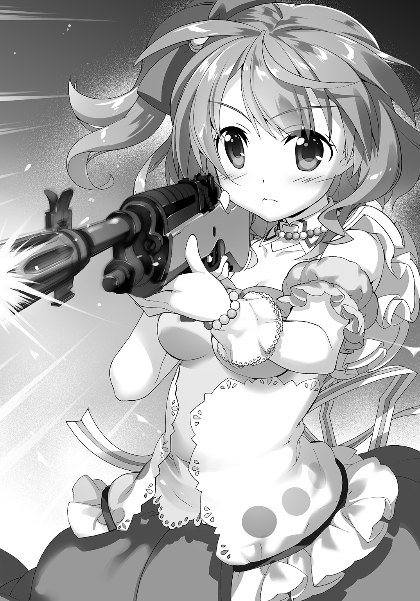
と叫びながら、どかどかと更にＭ14ライフルを撃ちまくる彩芽ちゃん。
何処からどう見ても、銃を振り回す危ない人にしか見えないんですけど。
しかも............
「ぎゃああああおおおおおおおッ！」
対する怪物は、彩芽ちゃんに銃弾を撃ち込まれる度に、悲鳴なのか怒声なのか、とにかく大声を上げてよろめく。痛いのか。それとも撃たれた際の衝撃で身体が揺れているだけなのか。
そういえば、発する『声』がいつの間にか至極真っ当な、獣の声そのものになっている。
いずれにせよ効いているのだ。あのライフル――いや魔法の杖の力が。
この怪物、口を閉じていれば牙が見えないから、傍目には鉄砲抱えた危ない女の子が、ファンシーな着ぐるみを虐待している様にしか見えないのだけれど。
「――ふぁっきん！」
景気よく撃っていたせいで、すぐに弾が尽きたのか、彩芽ちゃんは銃の下に突き出ていた弾倉を引っこ抜いて捨てると、何処からか取り出した新しい弾倉を叩き込み、再びＭ14を構える。
銃撃が止まった数秒間。
それを好機とばかりに、ワニモドキは地を蹴って――その微笑ましい寸詰まり体型からは想像もつかない素早さで、彩芽ちゃんに襲いかかった。
「危な――」
「ミスリルチップの雨を浴びやがれっ！ です！」
応じたのは言葉通り銃弾の雨だった。
どどどどどどどどッ！
銃声が一連なりになって響き、銃口からストロボの様に火が閃く。
まるで機関銃の様な連射である。
その様子を――
「魔法の全自動射撃であります」
アニタちゃんがそう解説してくれる。
「......そうですか」
僕はもう突っ込むのを諦めていた。
「ぃぃぃいいいいいいやっっほぉ!! です！」
歓声を上げながらＭ14を連射していた彩芽ちゃんだけど。
「......ああああああ？」
どうもＭ14という銃にとってその全自動射撃とやらは『やろうと思えば出来る』程度のオマケ機能であったらしい。機関銃の様に撃ちまくるのはやっぱり無理があったのか、反動で暴れ回る自分のＭ14を押さえ込みきれず、彩芽ちゃんはがくんがくんと上半身を揺らしながら仰け反って――
「にゃああああああああ!?」
転んだ。
「ちょっ......!?」
それでも引き金を引き続けていたらしく、二発ばかりが僕とアニタちゃんの方へと飛んできてしまう。アニタちゃんが咄嗟に僕の襟首を摑んで頭を下げさせてくれなかったら、あるいは僕の頭には風穴が開いていたかもしれなかった。
そして――
「彩芽、退けッ！ とどめは我が刺す！」
転がる彩芽ちゃんと入れ替わる様にして前に飛び出したのは、和風ゴスロリの少女。
僕は、いつの間にか彼女の手に武器が携えられている事に気付いた。
それは彩芽ちゃんのＭ14よりも、ある意味で余程に分かり易い凶器そのものだった。
緩やかな曲線を――反りを示す細身の刃物。斬るという事に特化した武器。
日本刀である。
「てぇいっ！」
裂帛の気合いと共に、和服ゴスロリの少女が日本刀を振る。
袈裟懸け、とでもいうのか――ずば、と擬音が聞こえてきそうな感じで日本刀がワニモドキの肩口から胸の辺りにまでざっくりと食い込んでいた。すぱすぱと輪切りになっちゃわないところが、むしろリアルというか何というか......なんかこう、嫌な感じに生々しかった。
「あの子が使ってるのは......」
「魔法の杖であります」
とアニタちゃんは強弁した。
「日本刀にしか見えないんだけど......」
「魔法の日本刀であります」
「銃刀法って知ってる？」
「魔法の杖なので適用範囲外であります」
......駄目だこれは。
僕はアニタちゃんに突っ込むのはとりあえず諦めて、溜息をついた。
やがて――
「とぉどぉめぇえええええじゃッ！」
分かり易い宣言と共に和風ゴスロリの少女が、跳んだ。
あの華奢でちんちくりんな身体の何処にそんな脚力が？ と思うくらいに高々と跳んだ彼女は、ずばりと二頭身ワニの脳天に日本刀を食い込ませ、自らの体重と落下の勢いでこれを股間まで一気に振り抜いていた。
「............うわ」
綺麗に二つに切断――というか二枚に下ろされる二頭身のワニモドキ。
どすん、と見るからに、いや、聞くからに重そうな音を立てて倒れると、それはもう二度と動く事は無かった。
二つに切り分けられたその身体、断面部分から、どろりと赤黒い、血液だか内臓だかよく分からないものが零れ落ちる。
グロい。すごくグロい。
腸が、とか心臓が、とか具体的な臓器が見えた訳ではなくて、強いて言えば『内臓っぽい何か』が断面から零れ落ちたり垂れ下がっているだけなのだけれども、むしろはっきりしないグチャグチャ具合がむしろ生々しくて。
僕は思わず眼を背けようとして、しかし――
「あっ......？」
その残骸、そう、文字通りの残骸は、次の瞬間、出現の過程を逆向きに見るかの様に、輪郭を失い、曖昧になって、それから霧の様に薄れて――更にはそれすらもが虚空に溶け込む様にして、消えていった。
後には血も骨も肉も残らない。地面にぶちまけられた液体でさえもが、蒸発する様にして綺麗さっぱりと消滅していた。
しかし......
「......うむうむ」
何やら和風ゴスロリの女の子は満足げに頷いている。
「やはり肉や骨が在る方が、斬り甲斐があるのう！」
そう言って彼女はかちゃりと日本刀を自分の目の前に掲げた。
「こう、皮と肉を切り裂いた後に、がつんと手に来る骨の感触が、実にたまらん」
「............」
いやあの。朗らかな笑みでそんな事を言われても。
そのまま和風ゴスロリの女の子は、どこぞの殺人鬼みたいに、日本刀を舐め始めそうな感じだったけれど......ふと何かを思い出した様子で僕の方を向いて言った。
「感謝じゃ。そこの」
「え......あの」
「なんだかよくわからねーが、助かったぜ、変態、です！」
と彩芽ちゃんもまたＭ14ライフル――だったっけ、を抱えたまま僕の所にやってくる。
「はぁ......」
お礼を言われても僕は何もしていない。少なくとも自分で意識的に何かをやった訳ではないのだけれども。しかし彼女等は僕のお蔭で助かった、と疑いも無く本気で考えている様だった。
確か――具象化能力者とかなんとか。
僕自身が気付いていない間に、それが勝手に効果を発揮していたという事だろうか。
そういえば何かが弾ける様な、そんな感覚は在ったけれども。
いや。今一番問題なのはその事ではなくて。
「えっと、君達は......一体......」
やはり僕としては、そう尋ねずにはおれない。
ひょっとして僕が田舎者だから知らないだけで、都会ではこういうのは普通なんだろうか、とも思ったのだけれど。多分――違う。
「ボク達は魔法少女！」
びっ、と音がしそうな仕草で自分を親指で指さして彩芽ちゃんが言う。
「......それは、まあ、きいたけど」
「不思議事件はボク達、魔法少女にお任せだぜっ！ です！」
「不思議事件......」
「迅速解決だぜ！ です！」
と彩芽ちゃんは得意げだ。
喋り方と衣装は何だか変だけれど、笑顔はとても可愛かった。その笑顔に免じて野暮な突っ込みは忘れてもいいと、一瞬だけ思うくらいに。あくまで一瞬だけだけども。
「その......銃とか、刀で？」
どう見ても『凶器でーす！ よろしく！』と自己主張しまくる様な見た目のそれらを携えている少女達は、僕の頭の中にある『魔法少女』のイメージから若干、というか激しくズレている気がした。
しかし――
「魔法のＭ14で！」
「魔法の日本刀で」
と彩芽ちゃんと、和風ゴスロリ服の女の子は言った。
堂々と、何の疑問も感じていない様な、明るい顔で。
どうやらあくまで魔法って言い張る積もりらしい。
しかし......
（魔法少女......魔法少女ね......）
僕は改めて目の前の三人の女の子を見る。
何処かの戦場の兵隊みたいに、煤けた感じでＭ14自動小銃を抱えている彩芽ちゃんと。
黒い和風ゴスロリ服をやっぱり煤けた感じに汚して、日本刀を携えている女の子と。
それから蒼い軍服を着て、僕の腕をぎゅっと抱き締めているアニタちゃんと。
............何なの、これ。
説明を受けても、何も、分からないままだった。
●
田舎を出て、都会に出てきた、その初日。
僕はこうして、魔法少女（自己申告）に、出会ったのだった。
............
............
............たぶん。
第二章 魔法少女の学園
窓から見るその風景は、ある意味でひどく『普通』だった。
広い校庭が在って。これを半ば囲む様にして『コ』の字型の校舎が建っていて。窓の反対側には体育館とプールも在るらしい。
『学校』という言葉から誰もが連想する諸々は、全て欠かさず備わっていて、しかし、それ以外には何も無い......過剰も欠落も無く、ただひたすらに学校している、そんな場所だった。
「ここが......？」
記号的というか象徴的というか、とにかく『学校』という言葉の平均的な印象を、そのまま形にしたかの様でもある。
本当に何の変哲も無い学校そのものだ。見た限りでは。
「............私立......皐月宮学園......」
僕は呆然と窓からその学校風景を眺めながら、この部屋に連れてこられるまでに教えられた一通りの事を、頭の中で思い返してみた。
私立皐月宮学園。
中高一貫教育を掲げる学校である。
学校の教育理念は『各人の才能を最大限に伸ばす柔軟性のある教育』なのだそうで、入学試験の内容は外部には秘密――というより、評価基準が全くの謎で、必ずしも小学校や中学校の成績が良いからといって入れる所でもないらしい。
その秘密主義的な部分や、ごく普通の外観とは裏腹に、世間的な評価はとても高く......校舎は都会のど真ん中の一等地に建っているし、設備も国立大学並みで最新のもの、教員の質も高いとなると、大枚をはたいてでも自分の子供をこの学校に入れたいと考える親は後を絶たないのだとか。もっとも成績同様、献金――もとい寄付をすれば入れる訳でもないらしいけれども。
ちなみに全寮制。
要するに名門校なのだ。
でもって何故か僕は今、その皐月宮学園の中に居る。
もっと細かく言えば、その皐月宮学園の応接室に居て、窓際に立ち、極めて平凡なその学校風景を眺めているのだった。念の為に言っておくと、僕が受験したのはこの学校じゃない。実の所、私立皐月宮学園なんて、連れてこられるまで名前も知らなかった。
そして――
「まあ、そういう訳で」
と僕の後ろにいるそれは言った。
「状況は概ね、分かって貰えたと思います」
「............」
僕は無言で、ただ振り返った。
勿論、答えるのが嫌だという訳ではなくて、単に、訳が分からずにどう応じて良いのか分からなかっただけの事である。
そもそも、コレは、何なのか。
「......あの？」
「............」
「分かって貰えてます......よね？」
と首を傾げながら、僕を見下ろして尋ねてくる、コレ。
この部屋に通されて最初に僕に話し掛けてきた、コレ。
姿形としては、まあ『女の子』なのだろう。少なくともそう表現するのが一番、伝わりやすいと思う。亜麻色の長い髪にリボンをつけて、フリルの一杯ついた服を着ている。年齢はまあ多分、見た限り十歳かそこらだ。
人間の尺度が当てはまれば――だけども。
普通、人間は空中に浮かんだりしない。
支えられる事も吊される事も無く、空中に留まる事が、そもそも人間には出来ない。少なくとも僕が知る常識の範囲では。
一応、その背中に羽根――というか桜の花びらを大きくした様にも見える――が四枚ついているのだけれど、それらは本当についているだけで、ぱたぱたと申し訳程度に羽ばたく事すらしていない。
これだけでも充分に、おかしいのだけれども。
そもそもコレは......身長が三十センチ程しかない。
だからといってその身体は赤ん坊という訳でもなくて、十歳位の子供を三十センチほどに縮めた感じというか――どう見ても大きめの人形の様な、身の丈である。
ぱっと見は可愛い、ものすごく可愛い。
けれどどう考えてもコレは、人外魔境とか幻想文学とか、そういう世界に属するであろう、人間以外の何かだった。何故こんなものが皐月宮学園の応接室に居るのか、僕にはさっぱり分からなかった。
「状況は、概ね、分かって、貰えてます、よね？」
何を思ったのか、殊更に区切って、一語一語はっきりと発音しながらその正体不明の何かは僕に繰り返し問うてくる。やっぱり答えないといけないのだろう。このまま黙っていても何も状況は変わらないのだろうし。
「皆目。さっぱり。全然」
「ああ、良かった。察しの良い人で」
ぱっと表情を輝かせてソレは言った。
「全然、分かって、ない、のですけど」
僕はソレの口調を真似てそう言った。
「............」
「............」
ぱちくりと、スミレ色の円らな瞳を瞬きさせるソレ。
ソレをただ無表情に見つめ返す僕。
微妙な沈黙に満たされた空間で、壁に掛けられた時計の針だけが、ちっくたっくと律儀に音を立てつつ半回転した。
「ええっ!?」
「遅っ!?」
今更の様に驚くソレに、思わずそう突っ込む僕。
「分かってないって......どこからですか？」
「いやもう。頭から尻尾の先まで、もう文字通りに徹頭徹尾」
「そんな......」
とソレは空中で器用にもよろめいてみせた。
やはりどう見ても、あんな申し訳程度のちっちゃい翼で、空中に浮かぶなんて出来ない筈なんだけど......ソレはもう物理法則をあざ笑うかの様に、当然って感じで浮かんでいる。というか見えない台の上にのっかっているかの様に、安定してそこに存在している。
本当、一体どういう理屈なんだろうか。
「いきなりこんな所に連れてこられて、状況を理解しろって方が無理でしょ」
僕は溜息をつきながら言った。
ちなみに......この変な生き物、というか童話に出てくる妖精の様な姿をしたソレを前に、僕がまだ落ち着いていられるのは、既に『魔法少女』だの何だの、常識外れの存在に出会っていたからだ。少なくともこの『妖精』は最初に見た怪物と違って、僕に襲いかかってくる様子も無かったし、とりあえず話は出来そうだった。
「そもそも、何なんですか、あなたは」
「ああ。そうですね。自己紹介が遅れました」
と言ってソレはくるりと空中で、踊る様に一回転して見せた。
「私はアリス、この皐月宮学園の――」
そしてそこで停まる。
アリスと名乗ったそれは、首を傾げながら明後日の方向を見て言った。
「皐月宮学園の......学園の............学園の......？」
......って、ちょっと。
何故そこで今更の様に悩むの？
「......あの」
「はい」
「......私って、何なんでしょう......？」
「いや、僕に訊かれても」
こんな謎の生物の素性を、僕が知る筈ない。
というか生物なのだろうか？ 当たり前の様に喋っているけど、あの人間の半分位の大きさしかない頭の容量で、人間と同等に会話できる脳が納まるものなのだろうか？
本当に、何なのコレは。
とまあ、のっけから頓挫気味の自己紹介というか相互理解だったのだけれど。
「アリスはアリスだぜっ！ です」
と拳を握りしめて言ってきたのは――壁際で僕とそのアリスなる不思議生命体とのやりとりを眺めていた魔法少女、その一人だった。
そう。魔法少女（自称）。
僕が都会に出てきて早々に出会った、不思議な女の子達。
今、声を上げたのは彩芽ちゃんだ。
確か名前は兵藤彩芽。十四歳。最初にコンクリートの壁をぶち破ってすっ飛んできて、僕に衝突して、僕を尻の下に敷いてくれた子である。そして僕の襟首を摑んで有無を言わさず此処まで連れてきた張本人でもある。ちなみ初対面の時はフリル一杯のドレスっぽい衣装だったけど、今は普通の学生服を着ている。
そして――
「......アリスたんは、みんなのアイドルであります」
と言うのは、彩芽ちゃんの隣の女の子だ。
アニタ、というのが彼女の名前らしい。
東雲アニタ。やっぱり十四歳。ハイカラな名前とは裏腹に苗字はやけに日本風というか古風な感じである。白金の髪や彫りの深い顔立ちからも、いわゆる日本人と外国人との混血児らしいと分かる。
この子も出会った当初は蒼くて軍服っぽい格好をしていたけれど、今はやはり学生服である。
「えへへへ。それほどでも」
とアニタちゃんに褒められて、照れっ照れで後頭部を搔いているアリス。
でもって――
「まあ、妖精、精霊の類じゃな。人工じゃが」
最後に銀髪を頭の左右で二条にまとめた女の子――確かこの子の名前は一ノ瀬諸葉ちゃんだったか――が、最後にまとめる様に言った。この子も出会った当初はゴスロリ風和服を着ていたけれど（以下略）
「......精霊......妖精......」
まあ魔法少女なんて言葉が出てきている以上、今更驚くに値はしないというか、悪霊や怪物の類じゃないだけマシなのだけれども............人工？
「まあ、付喪神といえば分かり易いかの」
「いや、全然」
咄嗟に僕はそう答えていた。
「あー......まあ、そりゃそうかの」
苦笑して諸葉ちゃんはそう言うと、『ツクモガミ』なるものについて説明してくれた。
ツクモガミ。付喪神。もしくは九十九神。
字の通りそれは、人間に使われながら九十九年を経て魂が宿り妖怪化、あるいは神化した器物なのだとか。
要するにこのアリスという妖精みたいな少女は、元々何かの器物――食器とか衣服とか工具とかそういうモノで、それに魂が宿って生き物みたいに動いているという事か。
人工というのは、そういう意味らしい。
基になったのが何なのかは分からないけれど、妖精というより妖怪である。
「とにかく、そーゆーものじゃ」
と諸葉ちゃんが強引に断言した。分かる分からないはいいから、とりあえずそういうものだと納得しろ、でないと話が進まない、とでも言わんばかりだ。
「......はぁ」
「そういうわけで」
とアリスが何やら額の汗を拭う様な仕草をして笑う。
「華麗に自己同一性の危機を回避した所で、本題ですが」
いや、華麗も何も、君、何もしてないけどね。
と僕は思ったが、いちいち突っ込んでいると話が進みそうにないので、黙っていた。
「彼女達――魔法少女は、御存知の通り、色々な不思議な事件、不条理な出来事、いわゆる都市伝説の類と戦っている訳ですが」
アリスは右手で彩芽ちゃん、アニタちゃん、諸葉ちゃんを示して言った。
「御存知じゃありません。初耳です」
「............戦っている訳ですが」
と上目遣いに、拗ねた様な表情で言ってくるアリス。
どうやら無理矢理にでも話を進めたいらしい。
というか――都市伝説？
僕が彩芽ちゃん達と出会う事になった際に、暴れていたアレがそうなのだろうか。
でも都市伝説ってああいう、怪物そのものじゃない気がするんだけど。伝説っていうくらいだから曖昧というか、もっとこう、『○○したら■■が起こる』とかそういう、漠然としたものだと思ってたんだけど。
あ、でも怪談めいたやつだと、具体的な怪物が出てきたりもするかな？
「一口に不思議な事件、といっても、曖昧模糊としていて、とらえどころが無いというか......相手が『現象』だったりすると、お手上げの部分もあります」
「現象？」
「例えば、ある日突然、ありとあらゆる猫が『わん』と鳴き始めるとか」
「............」
僕は眼を瞬かせて黙り込んだ。確かに想像しやすい喩えなのだけど、それが『都市伝説』だと言われると、なんか違う様な気がする。
「むしろ、夜な夜な徘徊して人を襲う怪人、とか......そういう類なら比較的、戦うのも楽なのですが」
「......ああ。なるほど」
そこでようやく僕は合点がいった。
都市伝説と『戦う』――というのが、都市伝説そのものを駆除、即ち『無くしてしまう』ものだとして。
怪人や怪物の類――人面犬とか口裂け女とか、そういう都市伝説の中に具体的な『原因』や『犯人』が出てくるものは、それらを全て斃したり捕まえたりしてしまえばいい。
けれども例えば、先にアリスが言った様な......『街中の猫がワンと鳴くようになる』の場合、その都市伝説の中心というか、原因が何処に在るのかよく分からない。
何を取り除けば、その不思議が消えるのかが、分からない。
まさかこの世から全ての猫を滅ぼしてしまう――なんて訳にもいかないだろうし。
「都市伝説......別の言い方をすれば、本来この世界に存在しない不条理、もしくは、端的に――怪異。これらは本来、物体ではありませんから、曖昧でとらえどころが無く、原因を取り除くのも難しいのです」
「だから『現象』......か」
波とか。風とか。虹とか。
そういうものを『斃す』のは――それが存在する事を止めるのは難しい、というか無理だろう。物理現象である以上、原因を探っていく事は出来るけど、例えば重力とか、大気の対流とか、光の屈折とか、そういったものを根本的に『無くしてしまう』事は出来ない。
それが世界の決まり事――理だから。
「というか......」
僕は首を傾げて言った。
「戦うって言ってるけどさ。それって取り除かないといけないものなの？」
猫が『わん』と鳴くからって、何か不都合が生じるとも思えないんだけど。
「別に猫が人間を襲う様になるとか、巨大化するとかじゃないんだよね？」
「勿論、直接的な脅威にならない様な不条理も在ります」
とアリスは頷く。
そして無邪気な笑顔で彼女はこう続けた。
「しかし不条理は全て排除してしまわなければ、世界が滅びます」
「......は？」
唐突に話の規模がでっかくなった。
「世界が滅びる？ なんでまた」
「世界は無数の決まり事で成り立っています」
両手を広げてアリスは言った。
「モノは上から下に落ちるとか。昼の次には夜が来るとか。雪は溶けたら水になるとか。落としたトーストがバターを塗った面を下にして着地する確率は、カーペットの値段に比例するとか。故郷で待っている恋人の話をした兵士は戦死するとか。ライトノベル作家は大抵ろくでなしとか」
「いや。後半は何か違うような......」
「そうした無数の『決まり事』――『法則』や『条理』や『常識』が世界を織りなす縦糸と横糸になっているのです。しかし不条理の存在は、そうした世界という織物に生じた虫食い穴とも言えるものです」
僕の突っ込みはきっぱり無視してアリスはそう説明を続ける。
「決まり事があるから世界は安定しています。決まり事の集合体が世界、と言う事も出来るでしょう。逆に言えば決まり事が一つ無くなれば、それだけ世界は己を構成する要素を失い、いい加減で不安定なものになっていきます」
「分かったような分からないような......」
「規則と言い換えても良いでしょう。規則がなくなればゲームは成立しません。規則が一つ欠ければ、それだけゲームは不安定にならざるを得ない。矛盾する規則が増えてもゲームは不安定になります。それが一定量を超えればゲームは破綻する。ゲームとして成り立たなくなる――」
「............」
例えばサッカーの規則にバスケットボールの規則が混じればどうなるか。
あるいは将棋の規則にポーカーの規則が混じればどうなるか。
確かに訳が分からない――というか何をどうして良いのか分からなくなるだろう。
「だから、都市伝説は――そう呼ばれる不条理や怪異は、この世界に存在してはならない。直接的な脅威ではなくとも、存在そのものがある程度積み重なると世界を滅ぼしてしまうのですよ。だから魔法少女はそれと戦う訳です」
そう言ってアリスが指さすのは、壁際に並んでいる魔法少女達だ。
彩芽ちゃん、諸葉ちゃん、そしてアニタちゃん。今は皐月宮学園の制服を着ているので、『魔法少女なのだ』と言われても今ひとつピンとこないのだけれど。
「じゃが......」
溜息をついて諸葉ちゃんが言葉を続ける。
「先にも言った通り、相手が『現象』ではな......」
「現象......」
「これと戦おうにも、ろくに手応えがないというか......先にも言ったが、刀や銃で、地震や台風や洪水と戦う様なものでのう」
「............」
アリス達の話を聞きながら僕が脳裏に思い浮かべるのは――幼稚園児だった頃の記憶だ。
アニメ『メイデン・クラフト』と、その放送中に差し挟まれた臨時ニュース。
正義の味方は悪者を倒す。
悪者は嫌な事や哀しい事を作り出す諸悪の根源だから、悪者を倒せば皆幸せになれる。
そういう基本構造で、正義の味方と悪者の物語は成り立っている。
しかし実際には、全ての不幸や不運の背後に『こいつを倒せば円満解決』という悪者が居る訳ではない。むしろそんな分かり易い悪者なんて居ない事の方が遙かに多い。
悪者という『核』が無い。
だから正義の味方も、直接、不幸や不運とは、戦えない。
それはつまり、握り拳で、宇宙の法則と戦おうとする様なものだ。全く嚙み合わない。
しかし......
「まあ......何となく、分かりますけど」
渋々ながら僕は、そう応えた。
「そうですか！ 分かりますか！」
とアリスは嬉しそうだ。
それから彼女は――
「そこで、具象化能力者、通称『魔封使い』の出番です」
ぴっ、と一指し指を立ててそう言った。
「『魔封使い』は魔法少女と違って戦う為の魔法は持ちませんが、曖昧な不思議を、ある種の『器』に詰め込んで、完全に具象化できます。実体化、といっても良いですけど」
しかも彼女がその人差し指で、文字通り指し示してきたのは、僕だった。
「............まほうつかい......」
普通は『魔法使い』と書きたくなるのだけれど、彩芽ちゃん達に先に説明されたところによると、魔を封じる使い、と書いて、まほうつかい、と読むのだとか。
「............」
僕が黙っていると、また分かっていないと思ったのか、僕の顔を覗き込みながら諸葉ちゃんが言った。
「お主がやった事じゃ。覚えておるな？」
「僕がって――」
言われて僕は思い出す。
急激に輪郭が定まっていく。細部が描き込まれていく。とらえどころの無かったその姿に実体が備わり、存在感が確固たる形を採り始める。
やがてそれは――
「あれが？」
先に諸葉ちゃんからも説明を受けてはいたけれど、やっぱり半信半疑だった。
具象化能力者。魔封使い。
要するに、実体の無い、曖昧な都市伝説、あるいは不条理、そういったものを、何かの形の中に押し込めて具体化する――能力。そしてその使い手。
例えば――水と器の様に。
水は、とらえどころがない。
水を『摑む』事は出来ない。
だから水を『斃す』のは、かなり難しい。叩いても砕けないし、押しても潰れない。暖簾に腕押し糠に釘――じゃないけど、水と戦う為には――というか水を具体的な力で『扱う』為には、これを『容れる』容器がまず必要になってくる。
容れる。もしくは――封じる。封入する。
魔封使いとはつまり、そういう『器を作って容れる』能力の事らしい。
僕も主に諸葉ちゃんから説明を受けて、辛うじて理解しているだけの状態で、この説明で正しいのかどうか、今ひとつ自信が無いのだけれど。
「元々、都市伝説はその影響の一つとして具象体を生み出す事は在りますが、それはあくまで末端、都市伝説の根幹に関わるものではありません。例えば『口裂け女』とか『人面犬』とかは具体的な実体を持った怪異ですが、これは都市伝説の根幹ではありません。末端の『口裂け女』や『人面犬』を斃して回る事は出来ますが、斃しても斃しても次から次に湧いてきてきりがないのです」
とアリスが溜息をつく。
要するにここで彼女等が言う都市伝説とは『口裂け女』や『人面犬』といった個々の存在ではなくて、そうした怪異が存在し得る『状況』そのものを指すのだろう。
だからそれは『現象』なのだ。
条件が整えば、それらは無限に湧いてくる。
だから――
「元々相手が『現象』である以上、我々魔法少女は、結果として生じる『おかしな事』を一つずつ、虱潰しに潰していかねばならん。それ以外に手がないのじゃ。かといって放置しておけば不条理は広がり、怪異はより強大になっていき、世界そのものを滅ぼす」
まるで、洪水で流れ込んでくる水を、バケツでくみ出そうとするかの様に。
全く無意味という訳ではないけれど、根本的な解決にはならない。
「でもそこに偶然――あなたが来た」
とアリスが改めて僕の方を向いて言った。
「魔封使いのあなたが」
形の無いものを、器の中に封じ込める能力。
抽象的なものに、具体的な形を与える能力。
都市伝説を、不条理を、不可思議を、直接的に叩いて斃せる相手にする――能力。
「この能力を持つ人は貴重なんですよ！」
と嬉しげに表情を輝かせてアリスが言う。
まあ、こんな能力は僕も初めて聞いたし、そもそも自分にそんな能力があるのなんて、今の今まで知らなかった。
多分、実際に不条理な現象の傍に行かなければ、発動しないものなのだろう。そういう能力が備わっていると自覚するには、怪異に出会わなければならない訳で......僕と同様、自分がそういう能力を持っていると知らない人間は、意外に多いのかも知れない。
「うちにも一人、橘薫子ちゃんという魔封使いの女の子が居たのですが」
とアリスは言って――いきなりかくん、と項垂れた。
「......先日、失踪してしまいまして」
「失踪って」
穏やかでない単語が出てきた。
要するに行方不明という事か。自分から出ていって姿を眩ませたのか、それとも何か事故や事件の類に巻き込まれて音信不通になってしまったのか。
「薫子ちゃん......何が不満だったんだろう......？」
とアリスがぶつぶつ呟く所を見ると、どうやら前者らしい。
「何考えてるかよく分からん奴だったからのう......」
と諸葉ちゃんも腕を組みながら頷いている。
「でも格好良かったのです」
とこれはアニタちゃん。
「男前だったよなあ、です」
こちらは彩芽ちゃんの評価。
何なの、その橘薫子って人。今ひとつよく分からないんですけど。
「とにかくっ」
ぷるぷると、首を振って、のしかかる何かを振り払うと、アリスは明るい笑顔を取り繕......もとい、取り戻して、言った。
「都市伝説と戦うのに、ちょっとまずいなあ、と困っていた所に、やって来たのがあなた、という訳ですよ」
「いや、来たというか、連れてこられたというか」
言いながら僕は背中に冷たい汗が滑り落ちるのを感じていた。
何かまずい。今のうちにきっちりはっきりさせておかないと、まずい事に巻き込まれる......そんな気がしたからだ。
しかし――
「あの場に居合わせたのも偶然――」
「これはもう運命ですね！」
「いや、だから」
「必然たり得ない偶然は無いのです！」
「その、あの......」
何だかアリスは聞く耳持ってないっぽい。
「これから是非よろしくお願いしますね！」
などと駄目押しの様に言ってくる。
そして僕の手を、正しくは指先を、その小さな手で摑んでぶんぶんと上下に振ってみたりする。どうやら彼女からすると、魔封使いの能力を持っている僕が、魔法少女達に協力するのは、当然という事らしいのだけれど。
更に――
「よろしくな、です！」
「よろしくお願いするであります」
と彩芽ちゃんとアニタちゃんまで左右から僕の肩を親しげに叩いてみたり。
なんだか周囲を固められているかの様でまずいというか、悪い予感がひしひしと迫ってくる感じだった。
「いや、そうではなくてですね。僕は高校に行かないと――」
僕は受験して合格した全寮制の学校に通うのだ。その為に田舎から出てきたのだ。僕の都会生活。憧れの都会生活。その為に。その為だけに。
断じて、よく分からないものと戦う為なんかでは、なくて。
けれど――そんな僕にアリスは笑顔でこう言った。
「あ、転入手続きはもう、済ませておいたので！」
「はい!?」
「魔法でぱぱっと！ 便利！」
ぐっと拳を握って見せて、アリスは言った。
「いや、ちょっと待って、僕は苦労して受験して――」
高校生から一人暮らしなんて、と難色を示す家族を説得して。
都会に出るなら私を斃してからにしろ、なんて妙な事を言い出す妹からも辛うじて逃げて。都会行きを踏みとどまらないなら、幼稚園の頃に僕が書いたという結婚誓約書を公開するなんて自爆紛いの脅迫をしてくる姉を何とか宥めて。というか幼児の頃の、しかも家族との結婚の約束とか速攻で抹殺して埋葬すべき黒歴史だと思うんだけど、姉もよくあんなものを後生大事に――いや、今はそういう話ではなくて。
「ちなみに皐月宮学園に男子生徒はあなただけです。魔法少女達が集う学園なので」
とアリスは言った。
「ひゅー、ハーレム！」
「いや、ちょっと待って」
「モテモテですね！」
「女子校なんでしょ？ 僕がいたらまずいじゃないですか？」
何とか逃げなければ。
僕は焦りを覚えつつも、とりあえずそう言ってみた。だからって『それもそうですね。じゃあこの話は無かった事に！』とはいかないんだろうなあとも、思いつつ。
「勿論、どちらかを選ぶ権利はありますよ」
とアリスは言った。やっぱり得意げに。
「『女装して男の娘として皐月宮学園に入る』のと『男装が趣味の女の子として皐月宮学園に入る』の二択で」
「その二択なの？」
「二択ですよ？」
「『皐月宮学園に入らない』という第三の選択は」
「ありませんよ？」
「横暴だよ！」
とうとう僕は悲鳴を上げる。
しかし――
「あ。性転換手術をして女の子になるという第三の選択肢が！」
「無茶言うなっ！」
「案ずるな」
ひたり、と冷たく鋭い何かが僕の首筋に触れる。
いつの間に抜いたのか。というか何処から取り出したのか。
先程までは両手に何も持っていなかった筈の諸葉ちゃんが、右手に日本刀を、左手にその鞘を持って言った。
「痛いのは一瞬だけじゃ」
「いや、ちょっと？ その日本刀で何を――」
「古代中国に宦官というものがあったのを知っておるか？」
「知らない、去勢された役人とか、知りたくもないです！」
「我が愛刀〈露鏡〉の切れ味をもってすれば、お主に第二の人生を歩ませるのも簡単」
「いや、簡単に僕の人生変えないでくれます!?」
「日帰り出来て自然な仕上がりに」
「何の話!?」
まずい。このままでは色々取り返しの付かない状態に追いやられてしまう。
「ちなみに――」
といつの間にかやっぱり例のＭ14ライフルを抱えながら彩芽ちゃんが言った。
「魔法少女も、魔物も、世間には秘密になってるんだぜ、です」
まあ確かに、僕も魔法少女だの魔物だのは、アニメとか漫画の中の存在で、それがこの現実世界に本当に居るなんて思ってもみなかったのだけれど。
「関係者以外で、この秘密を知った者がどうなるか、ききたいか？ です」
と言いつつ彩芽ちゃんはぐりぐりとＭ14ライフルの銃身を僕のほっぺたに食い込ませてくる。
「......いや、ちょっと......!?」
「大丈夫」
彩芽ちゃんは朗らかに笑って言った。
というかこの状況で朗らかとか、軽いホラーだった。
「７・62ミリなら痛みを感じる間も無く一瞬だぜ！ です！」
「だから嫌だよ！」
「魔法の７・62ミリ弾だから！ 安心だぜ！ です！」
と彩芽ちゃんはドヤ顔で言ってきた。
「安心ってナニ!? っていうか魔法ってつけばいいと思ってるだろ、君ら!?」
「魔法なので――」
とアニタちゃんがのんびりした口調で言う。
この子だけは武器も何も持っていないし、全体的に言動が優しい感じなので、ひょっとしたら僕を助けてくれるかも――とも思ったのだけれど。
「毒ガスも、細菌兵器も、核兵器も、ホローポイント弾も大丈夫であります。ジュネーブ条約の対象外、大安心であります」
「............」
いや、ジュネーブ条約て。
「でもほら、ちゃんと、お仕事ですから！」
とアリスが宥める様に言ってくる。
「お給金出ますよ。やった！」
「............そうですか」
そんな事言われても『なるほど！』と納得出来る筈も無く。
しかし......
「ですから頑張りましょう！」
「よろしくな、です！」
と手を差し伸べてくるのは彩芽ちゃんだ。
ついでに言うと諸葉ちゃんの日本刀は僕の首筋に触れたままで、彩芽ちゃんも左手で自動小銃は抱えたままである。アニタちゃんはといえば一人だけぼんやりと笑っているだけで――まあ、僕を助けてくれる様子は無いっぽい。
となると......
「..............................よ、よろしくお願いします......」
僕に彼女等の誘いを断る事など、出来る筈も無かった。
●
都会の生活に憧れて田舎から出てきた、その日。
僕は、『魔法少女』に出会った。
でもって、そのままその魔法少女達に拉致されて、お前は『魔封使い』だとか、訳の分からない事を言われた挙げ句に、全校で男子生徒が一人の皐月宮学園に、強制的に転入させられたのだった。
第三章 踊る魔法少女
壁際に詰まれた段ボールが、二箱。
それが新生活に向けて、僕が田舎から送り出した品の全てだった。
「はー......」
僕は長々と溜息をついた。
中身は殆どが着替えその他、身の回りの品で、必要最低限のものだ。趣味でちまちまと作っていたプラモデルとか、その為の工具なんかは田舎に置いてきた。学生寮にそんなものを飾る場所もないだろうし、在れば在ったでこっちでまた買って作れば良いだろうという判断だ。
とにかく引っ越しの荷物としては、大した量じゃない。
問題は、その段ボールが置かれている箱が、元々の送り先である某高校の学生寮ではなくて、皐月宮学園の学生寮に、当然の如く置かれている事だった。
「魔法で転校手続きをとった、なんてアリス達は言っていたけど......この荷物も魔法でこっちに運んだのかな」
犯罪の様な気がするんだけれど......
「なんかこう、まずい事は全部『魔法』で誤魔化してる感がする......」
部屋は六畳程の広さで、見た限りではごくごく普通の佇まいだ。
フローリングの床、白い壁紙、壁一面の窓の向こうには小さなベランダもあって、ちょっと小さめのワンルームマンションといった感じだろうか。まあ僕の場合、ワンルームマンションなんて都会っぽい物件、テレビの中でしか見た事は無かったのだけれど。
私立皐月宮学園。
そこは表向き名門女子校なのだけれど――というか実際に名門女子校としての実態を備えてもいるのだけれど、その裏には『都市伝説や不条理と戦う魔法少女の拠点』という一面もあるという。
でもって僕は『魔封使い』という稀少な能力を持っているという事で、そこの魔法少女達によって、半ば強制的に皐月宮学園に転校させられる事になった。
僕が苦労して受験し、入学する予定だった高校には僕の知らない間に、というか一日も通う事無く、転校届けが出されていて。しかもそれがどうやら滞りなく受理済みで。
............
いや。まあそれは正直、諦めもつくのだ。
僕は元々、都会に出たいから都会の高校を受験したのであって、選んだ先に『どうしてもそこじゃないと』というこだわりが在った訳じゃない。強いて言えば、都会で一人暮らしをする為に全寮制の学校を選んだという程度だ。
でもって皐月宮学園も全寮制。なのでそれ自体は問題無い。
問題は――皐月宮学園がいわゆる『女の園』であるという事で。
言うまでもなく、僕は男で。
......どう考えても問題ありまくりなのだと思うのだけれど、本来、これを問題視すべき皐月宮学園側、というより魔法少女やその関係者が、全然これを気にしていないので、僕が文句を言っても、暖簾に腕押し、糠に釘だった。
魔法少女達は『世界を守る』という大義名分の為に戦っている様で、その為ならば女子校に男子高校生を通わせる事なんて『些細な問題』であるらしい。
まあ......そういう訳で。
僕は『例外的存在』として皐月宮学園に籍を置き、学生寮に住む事になった。
ちなみに厳密な話をすると、皐月宮学園は別に『女子校』ではないらしい。
魔法少女と魔法少女候補者ばかりを集めている結果、女子生徒ばかりになっているだけで、規約というか何というか、学校組織としての登録は一応、共学なのだそうだ。
なので、僕は一応、男子生徒として皐月宮学園に入れるというか、もっとぶっちゃけて言えば女装しての高校生活を免れた。更に言えば魔法の日本刀で男の証をちょん切られるのも何とか回避できた。
「しっかし......」
僕は何度目かもう分からない溜息をつく。
魔法。そして魔法少女。
そういうものが実在するのだという話が、今もって僕にはピンとこない。
魔法にせよ魔法少女にせよ、創作物の――テレビや漫画や小説やゲームや、そういうものの中だけの存在だと僕は思っていたからだ。まあ、僕が実際に出会った魔法少女（自称）は、テレビの中の登場人物とはまるっきり別物というか、遙かに身も蓋も無くて、やたら生々しくて、おまけに物騒だったのだけれど。
「............」
逃げるなら、今の内じゃないだろうか。
そんな考えが脳裏を掠めたりもする。
とりあえず怪我もしなかったけれど、この皐月宮学園に入って、あの『魔法少女』達に協力するっていう事は、今後もあの怪物みたいなのと戦うという事で。一歩、いや半歩間違うと命がない様な気がする。
おまけに味方である筈の魔法少女も、あの怪物に負けず劣らず物騒だ。
それに――
「世界を守る......」
そんなお題目をアリス達は掲げていたけれど、実を言えばそれって全部彼女等から聞いただけの話であって、それが本当であるという証拠は、何処にも無かったりするのだ。
正義の味方、正義の魔法少女、なんて自称していたけれど、銃を撃ちまくるわ、刀を振り回すわ、勝手に他人の転校手続きしたり荷物を運んだり、挙げ句に仲間になれと強要するわ......何というか、傍から見ていると犯罪行為しかしていない気がするのは、気のせいだろうか。
彩芽ちゃんにしろ、アニタちゃんにしろ、諸葉ちゃんにしろ、見た目に限って言えば普通に可愛い女の子達だったけれど、その行動というか、中身は普通じゃない。
そういえばアニタちゃんは『魔法の杖』を使う所を見ていないけれど、彼女もまた身も蓋も無い凶器とか振り回したりするんだろうか。あの三人の中では比較的おっとりした感じで、彼女だけは『触るな危険』ぽい感じはしない。
では、普通の女の子かと――言われると、明らかにその言動が変なのだけれど。
「......やっぱり逃げるべきかも」
声に出して呟いてみると、益々そうすべきである様な気がしてきた。この段ボールはとりあえず諦めて。ボストンバッグだけでも抱えて逃げれば何とかなりそうな気がする。
「............」
僕はこの部屋に入ってから一度も床に下ろしてすらいないボストンバッグを改めて抱え直して、回れ右。扉に手を掛けて開く――
「――お、出てきたぜ！ です！」
「............」
僕はそのまま無言で扉を閉める。
だが次の瞬間、鍵を掛ける前に、扉は勢いよく蹴破られていた。
「はぶっ!?」
九十度回転する扉に吹っ飛ばされて部屋の奥へと押し込まれてしまう僕。
痛みを堪えて顔を上げると――そこには笑顔の魔法少女が立っていた。
「......兵藤......彩芽......ちゃん......」
「彩芽でいいぜ、皆そう呼ぶからな、です！」
吹っ飛ばされて床に這っている僕をまるで気にする様子もなく、彼女は明るい笑顔でそう告げてきた。続けて彼女は僕を指さしてこう言う。
「ボクもおめーの事は、ユウって呼ぶからよ、です！」
「......そうですか」
まあ姉にも妹にも『ユウくん』だの『ユウ兄』だのと呼ばれてきたので、そう呼ばれるのにも僕はあまり違和感が無いのだけれど。さすがに家族でもない女性から名前で呼ばれるのは初めてだし、何より呼び捨てという経験が、実はあんまり無い。
なので、ちょっとだけ、怖いような、恥ずかしいような、妙な気分だった。
それはさておき――
「そういう訳で――ユウ！」
彼女は一歩部屋の中に入ると、片手を差し出して言った。
「ほれ、行くぜ、です！ 立てよ、です！」
「え？ 行く？ 何処に？」
これ以上、何処に連れて行かれるというのか。
「皆、待ってんだぜ、です！」
「女を待たせるものではないぞ」
と更に、部屋の入り口から顔を出したのは、諸葉ちゃんだった。
「ええから鞄を置いて早ぅ来い」
と彼女まで僕を手招きしてくる。
「いや。えっと......」
今ここでボストンバッグを置いていくと、逃げにくくなる気がする。
かといってそんな事をこの子達に言う訳にもいかず――
「ほれ、早く来いよ！ です！」
と靴を脱いで部屋の中に上がり込むと、彩芽ちゃんは僕の右手を摑んできた。強引に引っ張られて、抱えていたボストンバッグが転がり落ちる。中身は殆ど衣類なので、まあ、何かが壊れるといった心配は無いのだけれど。
「あ、でも、その、荷物が未だ――」
「そんなの後でいいんだぜ、です！」
「そうじゃ。皆待っとるぞ」
と――入り口近くまで引っ張って行かれると、そこで諸葉ちゃんにも左手を摑まれた。
「皆って......」
「皆は皆であります」
と入り口脇に待機していたらしいアニタちゃんがそう言ってくる。
どうやらこの三人で僕を迎えに来たらしい。
............
今ここで逃げ出すのは無理っぽい。それこそ迂闊に彼女等の手を振り払って走りだそうものなら、後ろからＭ14ライフルで撃たれかねなかった。いや。その前に日本刀で背中をばっさりか。江戸時代でもあるまいし、辻斬りの被害者みたいな死に方は御免被りたいところだった。
なので――
「分かった、分かった、行くよ、行くから引っ張らないで......」
僕は魔法少女達に気付かれない様に小さく溜息をついて――その『皆』が待つという場所に、きりきり連行されていった。
●
皐月宮学園の学生寮――その一階に在る食堂。
そこが魔法少女達の『宴』の会場に選ばれた様だった。
「......って。宴？」
諸葉ちゃんから聞かされた予想外の言葉に、僕は眼を瞬かせる。
広い――ちょっとしたホールほどもあろうかというその食堂には、驚いた事に沢山の女の子達が待ち構えていた。十人、二十人、三十人......あるいはそれ以上かも。とにかくテーブルの上には何処かで買ってきたらしいお菓子が紙皿の上に並べられ、人数分と思しき紙コップも並べられている。端っこの方にはペットボトルが何本も並べられているのも見えた。
「これって......」
「来た来た！」
彩芽ちゃん達に引っ張ってこられた僕が、食堂の入り口で呆然としていると、女の子達が歓声を上げて駆け寄ってくる。思わず後ずさろうとした僕だけど、背後の扉はいつの間にか、きっちり閉められていた。
「君が新しい魔封使い？」
「本当に男の子だあ！」
「彩芽が連れてきたんだっけ？」
「歳は幾つ？ 彼女居る？」
......等々。
女の子達は十重二十重に僕を囲んでそう問うてくる。
小学校を卒業したばかりって感じの子から、僕より歳上っぽい大人びた雰囲気の女の子まで色々だ。皐月宮学園は中高一貫校だから、実際に僕よりも歳上の女の子も居るのかもしれない。人種も様々で、明らかに外国人ぽい顔立ちの子も、それから長耳人とか獣毛人とかも混じっている。多分、留学生とかそんな感じの扱いなのだろう。
「......あ」
僕はその女の子達の中に、駅で出会った獣毛人の女の子と、その連れらしい眼鏡の女の子の姿を見つけた。彼女等も皐月宮学園の生徒だったらしい。彼女等も僕の方を見て少し驚いている様だった。
「高校一年生だって聞いたけど？」
「中一くらいに見えちゃうですね」
「あ、あの、大口径拳銃って興味ありますか......？」
「犬派？ 猫派？ それともカモノハシ派？」
............
彼女等は僕という新参者――というか何というか――に対して興味津々だった。
そういえば此処は事実上の女子校な訳で、まあ、男子の新入生が来たとなると、それだけで目立つというか、周囲の興味を引いちゃうのは当然なのかもしれない。
だけど何だか珍獣扱いを受けている様な気がして、僕としては微妙に居心地が悪いというか、どう反応して良いのかもよく分からない。
そんな事を考えていると――
「ほれ、まずは皆席に着け！」
と僕の前に滑り込む様にして言ったのは、諸葉ちゃんである。
「折角の宴じゃというのに、こんな端っこで固まっておっても仕方なかろう！」
そう言って、彼女はいつの間にか手にしていた日本刀を鞘に入れたまま、これでがつんと床を叩いて見せた。
「なに、なんで諸葉が仕切ってんの？」
「......一ノ瀬さんずるいよ」
「先に唾つけたって言わんばかり？」
「え？ なに？ もう諸葉ちゃんのもんなの？」
などと女の子達の間からブーイングが上がる。
対して、諸葉ちゃんは一瞬、眼を丸くしてから――顔を真っ赤にして叫んだ。
「何が唾つけじゃ！ 我はそんな浅ましい真似などせんわ！」
「そうであります」
と、いつの間にか女の子の輪の外に居たアニタちゃんが言った。
「先にお尻を押しつけたのは彩芽たんであります」
「えっ......!?」
ざわりと女の子達の間の空気が音を立てて変化する。
「彩芽ちゃんが？」
「お尻を......？」
「大胆......」
「さすが......」
などと女の子達が僕から――アニタちゃんの隣に居た彩芽ちゃんの方に眼を向ける。
でもって当の彩芽ちゃんは一瞬、意味が分からないといった様子できょとんとしていたけれども――
「え？ ......あ、あ、ち、違うの、もとい違うぜっ！ です！」
慌てて両手を振りながらそう言った。
「ボ、ボクは、お、お尻とか押しつけたりは......あ、その、ちょっとお尻の下に敷いただけで......！」
「お尻の下に！」
と何故か揚げ足をとる様な感じで盛り上がる女の子達。
でもって――
「もうそんな仲に!?」
「出会ったその日に!?」
「何という高度なプレイ......」
「ずるい、ずるいよ彩芽！」
「早い者勝ちなんて聞いてない！」
「一体どうやって見つけてきたの!?」
などと女の子達は僕から離れて彩芽ちゃんの方に詰め寄っていく。
「今のうちじゃな」
と諸葉ちゃんが僕の手を引いてくる。とりあえず僕達は女の子達の包囲がほころびた所から脱出し、適当な席に着くことが出来た。
見れば――女の子達は彩芽ちゃんを十重二十重に囲んで壁際に追い込み、質問攻めにしている。彩芽ちゃんは彩芽ちゃんで『違ぇよ、です！』とか『んな訳ねえだろ、です！』とか、色々否定している様だけど、周りの女の子達はそんな言葉だけでは納得していない様だった。
「一体何なの......」
「じゃから先にも言ったじゃろ。宴――要するにお主の歓迎会じゃよ」
と諸葉ちゃんは言う。
「歓迎会――」
「薫子が居なくなって、我々はジリ貧じゃったからな」
諸葉ちゃんはペットボトルのウーロン茶を注いで、僕の方に差し出しながらそう続けた。
「お主が来てくれた事で全員、大喜びじゃ」
薫子――というのは確か僕の前に居たという魔封使いの女の子だ。
ある日突然、居なくなって行方も知れないとか。
その結果......皐月宮学園の魔法少女達はこの世界に生じる不条理を根本的に駆逐する術を失い、対症療法的な、辛うじて現状を維持する為の戦いを強いられてきたのだと聞いた。
「いや、その『来てくれた』って」
僕は早々に逃げ出す積もりでいた訳で。
「しかも教員や用務員以外、男っ気のないここに初めて来た男子生徒じゃからな。怪異との戦い云々は別にしても、まあ、盛り上がるのは仕方なかろ」
「ひょっとして、此処に居る子は全員、その......」
「魔法少女であります」
諸葉ちゃんと僕を挟んで反対側の席に座るアニタちゃんが、そう言ってきた。
皐月宮学園に入学できるのは、魔法少女としての素質を持つ者のみ。けれども全員がすぐに魔法少女として才能を発揮する訳でもなくて、実際に魔法少女として『目覚め』た上、安定した能力を発揮して『現役』として活動出来ているのは、皐月宮学園全体の五分の一程度である様だった。
「もっとも、皐月宮学園の魔法少女全員が来とる訳ではないがの。宴の類は苦手な者もおるし、まあ、だからこれは魔法少女の中でも有志による歓迎会、といった所か」
「全員、魔法少女......」
僕は呆然としながらも、彩芽ちゃんを壁際に追い詰めている女の子達を見つめる。
魔法少女という、ある意味で、不条理以上に不思議な存在が、こんなにも沢山居るのだという事が、僕にとってはまず驚きだった。もっとも僕が姉や妹と一緒に楽しんでいたあの古い魔法少女アニメ『メイデン・クラフト』でも、魔法少女は沢山出てきていたけれども。
「――だああああ、うるせえ！ です！」
と壁際で彩芽ちゃんが叫ぶ。
「とにかく、ボクとあいつは何でもないの！ もとい、何でもねえんだよ、です！」
「――いい加減にせい、呆れられとるぞ」
と諸葉ちゃんが声を掛けると、彩芽ちゃんを壁際に追い詰めていた女の子達の輪が緩む。
その様子を確認した上で、諸葉ちゃんはぱんぱんと手を叩いて言った。
「我々は魔法少女じゃ。魔法少女は魔法少女なりの歓迎の仕方があるじゃろ」
「ちゃんと打ち合わせ通りにするであります」
アニタちゃんがそう言うと、女の子達は互いに頷き合って、壁際にずらりと並んだ。
一体何が始まるのか。
僕が訝しんでいると――
「せーのっ！」
誰かがまず掛け声。
次の瞬間、女の子達は一斉に、しかしそれぞれのポーズをとりながら、揃ってその場でくるりと一回転した。
「......!?」
弾ける閃光。迸る旋律。
白く強いが、眼を焼く事の無い不思議な光であり、大きく鋭いが、不思議と優しく耳に響く音だった。僕が知る限り、他のどんな光にも似ていない、他のどんな音にも似ていない、それは、文字通りに独特の光と音だった。
それは――それもまた、魔法なのか。
僕の視覚と聴覚に直接訴えてくるそれらが納まった後、そこに立っていたのは......
「............！」
僕は息を呑む。
そこにずらりと並んでいるのは、それぞれが鮮やかで可愛らしい衣装に身を包んだ、女の子達だった。
それまで彼女等が着ていた学生服とは全く違う。その多くはフリルがついていたり、リボンがついていたり、あるいは派手な色の組み合わせだったりと、とにかく目立つ代物で。
それが、いわゆる普段着でないのは、僕にも分かった。
というかこれは――
『ようこそ、皐月宮学園！』
女の子達は声を合わせてそう言った。
『私達、魔法少女は、新しい魔封使いのあなたを、大、大、大歓迎しまーす！』
「......魔法少女」
僕は改めて、そう呟いていた。
勿論、女の子達は一瞬の早業で着替えた――訳ではないのだろう。奇術や幻覚の類でないとするならば、これはつまり『変身』であり、これが、いや、これも、彼女等の魔法なのだ。
しかも次の瞬間――
「......!?」
何処からともなく明るくテンポの速い音楽が流れてくる。
館内放送だろうか。それは民族音楽の様な素朴さの中に、時折、ハッとする様な艶やかさが混じる不思議な音楽で、黙って聞いているだけでも自然と身体がそのリズムを追って揺れ始めるのだ。
「それじゃいくよおッ！」
誰かが叫ぶ。
女の子達はだんだんだん、と揃って足を踏み鳴らし、それから、それぞれに踊り出す。
てんでばらばらに踊っているかと思えば、時に手を取り合って、輪になって、あるいはそれもすぐにばらけて、好き勝手に音楽に合わせて身体を動かしている。
それは魔法少女というより、西欧の伝承に言う、妖精の舞の様で――
「............」
僕はただ呆然とそれを見つめていた。
いつの間にか、女の子達の周りを蛍火の様な光の点が、数え切れない程に沢山、舞っている。舞い散る桜の花びらの様な。降りしきる雪の様な。飛び散る火花の様な。綺麗だけれど、それが一体何なのかは僕には分からない。単なる照明やレーザーではこんな事は出来ないだろうという事は、分かったけれど。
という事は、これも、魔法なのか。
綺麗――なのではない。
奇怪――な訳でもない。
混沌の様でいて混沌でなく、暴走の様に見えて暴走でなく、個々人は好き勝手に踊っている様に見えるのに、ぼんやりと焦点を敢えてぼやかせて見れば、全体として何か波の様な、渦の様な、そんな何かが見える――ただただ、それは不思議な光景だった。
「我等流の歓迎の舞――というか、まあ」
と諸葉ちゃんが笑う。
「魔法少女の宴じゃな」
見れば彼女も、あの、和風のゴスロリ服にいつの間にか着替え、いや、変身していた。
彩芽ちゃんやアニタちゃんも、それぞれの『衣装』に変わっている。
「浮かれ踊り歌うが、そのしきたり――かどうかはさておき、ま、皆も好きに歓迎するのでな。お主も好きに楽しむが良い」
「............」
諸葉ちゃんに腕を引っ張られ、女の子達の輪の中に転がり込む僕。
魔法少女達はまるで波紋の様に一瞬、その輪を広げて僕から遠ざかったかと思うと、次の瞬間には揃って駆け寄ってきて、手を差し伸べてくる。
握手しろと言わんばかりに。
いや、これはそうではなくて、多分――
「............」
僕が今ひとつ自信が無いままに片手を挙げると、ぴょんぴょんと跳びながら魔法少女達が次々と僕の掌を叩いていく。いわゆるハイタッチの連続だ。
「............」
僕はといえば、彼女等の勢いに呑まれて言葉も無い。
ただ......
（そういえば、『メイデン・クラフト』のエンディングって......）
こんな風に、魔法少女達が踊る映像だったっけ。
魔法少女達が、音楽に合わせて飛び跳ねる姿が、もの凄く可愛かったのを覚えている。記憶の中に在るその映像と、目の前の光景は勿論、違うのだけど、何かそこに相通じるものを僕は感じていた。
「............」
テレビの画面の向こうにしか居なかった筈の、魔法少女。
それが今僕の目の前に居る。しかもこんなに沢山。
それはまるであの大好きだった『メイデン・クラフト』が現実に転がり出てきたかの様で、僕は呆然としつつも、ある種の感動を覚えたりしていた。
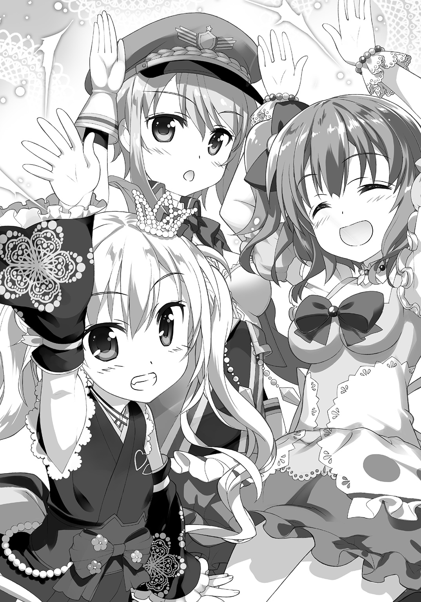
●
そこから先は――ごく普通に宴会だった。
いや。ごく普通というと何も問題が無い様に思えるのだけれど――むしろごく普通というのが、何よりも大問題だった。
宴会といえば、お酒だ。
でもって僕等は全員未成年である訳で。
勿論、お酒は飲んじゃいけない。
田舎じゃ冠婚葬祭の後は決まって宴会で無礼講、大人は大抵、お酒を飲んでいて、文字通りに飲めや歌えやの大騒ぎだったりする訳だけど。でもってその全体的に緩い雰囲気にそそのかされたりして、子供もほんの少しご相伴にあずかるなんてことも、ままあったのだけれど。
この魔法少女達の宴会に『まあいいからいいから。無礼講』と責任をとってくれる大人は居ない訳で。
「一番！ 玉笠いろは！」
といつの間にか設えられていたお立ち台の上に上って言うのは、獣毛人の女の子だった。
基本は金髪なんだけど尻尾の先が白くなっているので、何だかキツネっぽい。獣毛人の人達は『自分達の先祖は動物である』って主張する文化も在って、きっと彼女なんかはキツネのご先祖様が居る――という事になっているんだろう。
そんな事を考えていると。
「うんしょ、うんしょ」
そんな事を言いながらキツネの彼女――いろはちゃんは、何処からか取り出したタオルを前掛けみたいに首に結び、そのままお立ち台の上で......アレってヤンキー座り？
「んんん――......」
溜めて溜めて。
「ご先祖様ッ！」
カッて擬音でもつける感じの気迫でそう宣う、いろはちゃん。
「あはははははははは」
「油揚げお供えしたいーっ！」
彼女の一発芸――なのか？ ――に、どっと周りの女の子達が沸く。
「えーと......」
つまりあれは......
「稲荷神社とかでよく見る、キツネの石像の真似じゃな」
と僕の隣で諸葉ちゃんが説明してくれた。
「ああ、なるほど......」
魔法少女達が解説無しに大受けしてる所を見ると、どうも彼女の定番ネタっぽいのだけれども。......っていうかいいの？ お稲荷様を、というかご先祖様を一発芸のネタに使って、罰とか当たらないの？
などと僕が余計な心配をしていると、次にお立ち台の上に上がってきたのも、やっぱり獣毛人の女の子で。ただしこちらは獣耳よりもその頭に備わっている『角』の方が目立っていたりする。さしずめヒツジを『ご先祖』に持つ獣毛人の女の子だろうか。
「二番。成瀬メイ......」
とお立ち台の上に上がってから、まるで何をしようかと考えているかの様に首を傾げていたけれども。
「アント●オ猪木のモノマネしま～す」
いや、アントニ●猪木て......女の子が？
「......元気があれば、なんでも出来る」
拳を握りしめてメイちゃんは言った。
『なんでもできるー！』
と魔法少女達が唱和。
そして――
「１！ ２！ ３！ .....................」
とそこまで数えてから。
「..................ぐぅ」
いきなり。立ったまま。何の呼び動作も無く。その場で。
メイちゃんは――寝ていた。
......なにこれ？
『寝るな――ッ！』
と、こちらもお馴染みのネタに大喜び、って感じで周囲から突っ込みが入る。
どうもこの子、数を数えるとそのまま寝ちゃう性質――というか何というか――らしい。ひょっとしてあれか。ヒツジだから数えると寝ちゃうとかそういうネタか。
更に――
「三番、ミュセル......えっと、空の鍋をかき混ぜます」
「いえー！ ヤンデレきたー！」
と長耳人の女の子が空の鍋とお玉を持ち出してきて、延々これをかき混ぜてみたり。
「四番、世古島小虎！ エリスを撫でるぜぇッ！」
「え？ あ、ちょっ......尻尾は、尻尾は!?」
「ここかっ！ ここがええのんかッ！」
とか、なんだかヤンキー風味の女の子が、いきなり獣毛人のエリスちゃんを壇上に引っ張り上げて、あちこち撫で撫でし始めたり。
「えっと、ご、五番、葵、岡本喜八の映画を処女作から暗唱します......！」
とエリスちゃんの連れらしい眼鏡の女の子が『結婚のすべて、若い娘達、暗黒街の顔役、ある日わたしは......』などとよく分からない感じで呟き始めたり。
「五番、キラーン・クシャトリア......とりあえず、カレー食べます！」
「六番、伊調明里、わんこカレーします！」
などと、インド人風の女の子が猛烈な勢いで食べ始めるカレーの皿に、横からどうやってか、猛烈な勢いで作ったサフランライスとカレーを、わんこそばみたいに次から次へと盛っていくエプロン姿の女の子とか。
とまあどんどん進んで、挙げ句にはお立ち台で脱ぎ出す子も居れば、それをカメラで激写する子まで出てきて。
どう見ても中高生のやる宴会でもないし、宴会芸でもない気がするのは僕だけだろうか。
とにかく女の子達は既にほぼ全員が『出来上がって』いた。既にもう色々駄目というか、皆、理性が蒸発済みで、箸が転んでも大爆笑しちゃう感じだ。
「......というか未成年なんだよね？」
大半は中学生みたいだし。
「未成年だぜ、です！」
と顔を真っ赤にして言うのは彩芽ちゃんである。
魔法少女達の中でも、この子がいの一番で『出来上がっている』感があった。
「飲酒とかまずいんじゃ......」
「酒なんて飲んでないぜ、です！」
と彩芽ちゃんは右手にいつの間にか召喚していたＭ14ライフルを持ち、左手にペットボトルを持って笑った。ちなみに彼女は先程から、このペットボトルの中身をラッパ飲みしている訳だけど。
「その左手に持ってるのは何なの？」
「魔法ジュースだぜ！ です！」
「魔法ジュースって......」
「酒じゃない！ 魔法のジュース！ 合法！ です！」
いや、そもそも合法とか非合法とかそういう問題じゃないような気がするけど。
「ちなみにお酒と魔法のジュースって何が違うの？」
「名前が違うんだぜ！ です！」
......そうですか。
「ユウ！ ユウも飲むんだぜ！ です！」
と言いつつ彩芽ちゃんは僕の首に腕を回して強引に引っ張ると、ペットボトルの中身を僕のコップに注ぐ。いや。あの、そこ今ウーロン茶が――
「ボクの魔法ジュースが飲めないってのか？ です！」
「タチの悪いおっさんの酔っ払いか!?」
と思わず僕は突っ込むものの、彩芽ちゃんは上機嫌でけらけら笑っている。
「いいからボクの魔法ジュースを飲めぇッ！」
「いや、ちょ......もがっ!?」
断りの言葉を言おうと口を開いたのが運の尽き――彩芽ちゃんは『魔法ジュース』のペットボトルの注ぎ口を無理矢理、僕の口の中にねじ込んできた。
「......！ ......!?」
これって間接キス？ などという考えも脳裏を過ぎったけれど、それにいちいち恥ずかしがったり喜んだりしている余裕なんて勿論、無い訳で。
「あはははははは！ おっかしー！」
呼吸が止まってじたばたと暴れる僕を指さしながら、彩芽ちゃんは笑う。
もう出来上がっているどころか、完全に泥酔状態だった。
でもって......他の女の子達も大体は似たようなものなので、彩芽ちゃんの暴挙を止めてくれる子が居ない。
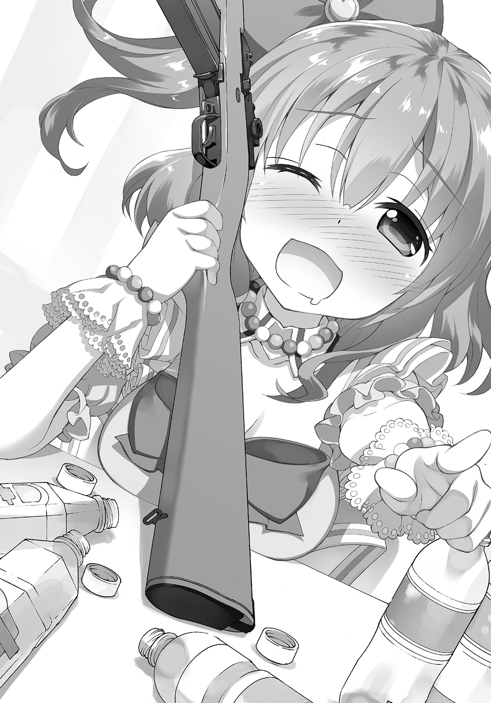
見れば、彩芽ちゃんみたいに自分で『魔法ジュース』のペットボトルをラッパ飲みしている子も多いけれど、下戸――というか『魔法ジュース』が苦手なのか、あまり飲んでいない子も居て、しかしそういう子には別の魔法少女が半ば無理矢理『魔法ジュース』を勧めて飲ませていたり。
素面で居る奴は許さない！ とかそんな理不尽極まりない空気がそこには在った。
「十番！ 兵藤彩芽ッ！ ウイリアム・テルやるぜ、です！」
『待ってましたぁ！』
と魔法少女達が、やんややんやとはやし立てる中、彩芽ちゃんは何処からか取り出したリンゴを僕の頭の上にのっけて.................................え？ 僕？
「いや、ちょっと待っ......」
「気をつけーッ！」
そう叫びながら僕の頭の上にのっけたリンゴにＭ14の銃口を向ける彩芽ちゃん。
反射的に直立不動の体勢になる僕に、彩芽ちゃんは握り拳からにゅっと親指を立てて見せて――サムアップして見せて、笑った。
「百発百中なんだぜ！ です！」
「いや、そんな事言われても！」
ウイリアム・テルで、リンゴときたら、つまり彼女が何をしようとしているのかは説明されなくても分かる。そして彼女が手にしているのは弓矢じゃなくて軍用ライフルで。
「Ｍ14は程度のいいものを選んで狙撃銃としても使われてたんだぜ！ です！」
「それが今、この僕の置かれている状況と、何の関係が!?」
「安心して、気をつけ！ してればいいんだぜ、です！」
「いや、なんか喋ってる間にもすんごく銃口が揺れてるんですけど！」
「あはははは、ユウってばもう酔ってんのか？ です！」
「酔ってるのは彩芽ちゃんでしょ!? ちょ、やめて、やめて！」
............等々。
すったもんだした挙げ句に、銃弾は辛うじて――僕の頭頂部をかすめつつも、リンゴに命中してこれを吹っ飛ばした。ちなみに距離は二メートルもなかったので、狙撃も何もあったものではないのだけれども。
でもってこのリンゴを別の魔法少女が、見るからに危なっかしそうな形の刃物でウサギさんの形に向いてみたり、そのウサギさんのリンゴを、別の魔法少女がいきなり火炎放射器で焼いて焼きリンゴにしてしまったり。
宴会は既に、未成年の飲酒がどうのなどと『些細な』事を問題にするような状態ではなくなっていた。というか宴会芸に魔法とか現用兵器とか使うのは、問題ありまくりなんじゃないだろうか......とか思ったけれど、勿論、そんな常識的な突っ込みをまともに聞いてくれる子は居なくて。
そして――
............
「うー......」
僕は何とか食堂の外に抜け出すと、廊下の壁にもたれて溜息をついた。
すると――
「お疲れじゃな」
そう言って僕に緑茶のペットボトルを差し出してきてくれたのは、諸葉ちゃんだった。
そういえばこの子、途中からあんまり姿を見なくなったと思っていたら、どうやら抜け出して廊下で涼んでいたらしい。ずるい。
「......えっと」
「魔法のお茶ではないので、安心するがいい」
躊躇する僕に、諸葉ちゃんはそう言った。
「まあ、一応お主を歓迎する積もりなのは本当じゃから、大目に見てやってくれ」
「はぁ......」
僕はとりあえず曖昧に頷いておく。
諸葉ちゃんはしばらく、壁に背中を預けて自分の緑茶を飲んでいたけれど。
「先にも言ったが......皆、不安じゃったからな」
――ぽつりと、思い出したかの様にそう言った。
「......不安？」
「薫子が居なくなって、いたちごっこになっとったからな」
「あ......」
僕の前に居た魔封使い。
彼女が居なくなった事で、魔法少女達の不条理との戦いは『終わりの見えないマラソン』になっていた。魔法少女達は魔法で不条理の『末端』を叩く事は出来ても、それを根絶する事は出来なかった。形のない曖昧なものに形を与え、物理的に殲滅できるようにする能力者――魔封使いが居なくなったので。
「魔法少女というても、所詮、小娘じゃからな、我も含めて」
そう言って諸葉ちゃんは肩を竦める。
「そんなに肝がすわっとる訳でも、覚悟を決めてきた訳でもないんじゃ。その場の勢いで戦う事は出来ても、まあ、ふっと我に返ると......な」
「............」
「我は、元々怪異狩りを――不条理狩りを生業としてきた家系の出じゃから、そうでもないが、皐月宮学園に入るまでは、不条理だの怪異だのも知らない、ごく普通の女学生じゃった者も多くての」
「そうなんだ......」
「特に彩芽はな......薫子と仲が良かったのでな」
しみじみとした口調で、諸葉ちゃんはそう言った。
「彩芽はああいう性格の奴じゃからな、今は立ち直っておる様にも見える――というか見せとるが、多分、まだ引きずってるじゃろ。『友達に見捨てられた』くらいには思っとるかもしれん」
「見捨てられた......？」
「自分が居なくなれば、皐月宮学園は――我々魔法少女がじり貧になるのは、薫子も自覚しとったじゃろうからな。それを知っても尚、一番仲の良かった彩芽に一言の相談もなく姿を消したのじゃ。何日かの落ち込み振りは凄まじかったぞ」
「そうなんだ......？」
今の彩芽ちゃんを見る限りでは、あの子が落ち込むなんて、想像もつかないのだけれど。
「しばらく普通の女の子みたいに喋っておったからの。『うん、大丈夫だよ』とか『ボクは平気だよ、本当だよ』とかな」
「それが落ち込み表現なんだ!?」
そっちの方がどう見ても似合ってるというか、可愛いんですけど。
「ま、彩芽に限らず、他の者も結構、追い詰められとったじゃろうし」
と言って諸葉ちゃんは自分のお茶を飲み干した。
「じゃからな、ユウよ。お主が来てくれたお蔭で我々は救われた気分での」
「............」
「魔法が使えても、たかが小娘には重すぎるんじゃよ、世界を守る為に戦い続けるなんてのは。相手によっては命懸けじゃしな」
そう言って諸葉ちゃんは空になったペットボトルを指先でつまんで振って見せる。
見た目という意味では、彩芽ちゃんやアニタちゃんに比べて――いや、今日、僕の歓迎会を開いてくれた魔法少女達の中でも一番、ダントツといって良いくらいに幼い容姿の諸葉ちゃんなのだけれど。
こうして話をしていると、その喋り方もあってか、歳上の女性と喋っているかの様にも思えてくる。不思議な子である。何か変わった家柄に生まれたみたいな事は言っていたけれど、その影響なのだろうか。
「まあ、そういう訳での」
諸葉ちゃんは壁から背中を離しながら、締めくくる様に言った。
「無理矢理連れてこられて、お主も辟易しておるかもしれんが、無理を承知で頼んでおく。我々を――特に彩芽を見捨てないでおいてやってくれ」
そう言う諸葉ちゃんは、お子様な外見でありながら、まるでみんなのお母さん――は言い過ぎとしても、お姉さんみたいな感じだった。
案外、この子はこの子で苦労人なのかもしれない。
「いや、見捨てるとかそんな......僕は」
「薫子がおらん今、本当にどうにもならんようになる前にお主と知り合えたのは、最初にも言ったが、偶然ではなく運命じゃと思っておる。もう我々にはお主しかおらん。じゃから――よろしく頼む」
そう言って諸葉ちゃんはぺこりと頭を下げると、そのまま食堂の中に戻っていった。
そして中から『あー！ 諸葉ァ、ボクの魔法ジュースを飲めぇ！ ですぅ！』だとか何だとか、彩芽ちゃんの調子っ外れの叫びが聞こえてきたりもした。
「............」
僕は諸葉ちゃんから貰ったペットボトルのお茶を、キャップを捻って開くと、一口飲んでみる。やたらに甘ったるかった『魔法ジュース』と異なり、濃いめに淹れたお茶の鮮やかな渋みが、僕の舌の上に広がっていく。
「ずるいよなあ......」
あんな風に言われたら逃げ出しにくい。
僕は食堂の喧噪と壁一枚を隔ててひっそりとしている廊下で、小さく溜息をついた。
●
まあ、そんなこんなで――宴は三時間ほどで終了した。
魔法少女達はそれぞれ適当に解散して自分の部屋に戻っていき、最後に食堂に残ったのは僕と、そして『魔法ジュース』で酔いつぶれた彩芽ちゃんだった。
「............うー......」
長い食卓の上に突っ伏して唸っている彩芽ちゃん、その周りに散乱するペットボトルと、お菓子の食べ残しと、そして７・62ミリ弾の空薬莢と。他にも銃を乱射していた子が居たので、別の大きさの空薬莢とか、空の弾倉なんかも転がっていたりして。一見すると意味不明というか、凄くシュールな絵面だった。
ちなみに空砲だったのか、魔法の銃だからなのか、壁やら天井やらに弾痕は全く見当たらない。こういう所はひどくご都合主義的というか、いい加減な感じだった。
とはいえ――
「......誰が片付けするんだ、これ......」
ひょっとして僕が片付けるんだろうか、これ？
そんな不安を感じつつ、とりあえず彩芽ちゃんをこのままにしておく訳にはいかないので、僕は彼女の後ろに回って、背中を叩く。
「彩芽ちゃん、兵藤彩芽ちゃん？」
「うー......」
「彩芽ちゃんてば。起きて。起きてくれないと困るよ」
「むー......」
唸るばかりでまるで動こうとしない。
田舎の宴会だと、酔いつぶれた人を運ぶのは、幸か不幸か理性が残っている人の役目だったりして、僕もよく近所のお姉さんとか叔母さんとかを運ばされたものだ。女性ばっかりだったのは、大抵、そっちの方が軽くて子供の僕でも何とかなったからである。
「しょうがない......」
僕は彩芽ちゃんの腋の下から両腕を差し込んで、羽交い締めにする様な感じで彼女を立たせる。相変わらず「うー」とか「むー」とか「せんぱー、ふぁい」とか「逃げる奴はベトコンだ、逃げないのは訓練されたベトコンだ」とか呻いていたけれど、殊更に抵抗する様子もなかった。
「はい、おいっちに、おいっちに」
そう掛け声を掛けながら、僕は彩芽ちゃんを食堂から連れ出す。殆ど二人羽織状態というか、糸の切れた操り人形みたいな彩芽ちゃんを、僕が後ろから密着する感じで辛うじて動かしている状態だった。
本当、面倒くさい。
「魔法少女......ね......」
僕が幼い頃に観ていたテレビの魔法少女のイメージとは、随分違う。
まあ、エキセントリックというか、変なのはアニメのキャラクターなんかと同じなのだけれど、こうして直に接していると普通の女の子な所もあって、意外な感じだ。
勿論、アニメのキャラクターは実体のない創作で、こちらは本物の生きた人間なのだから、比べちゃうのもおかしいのかもれないが。生きた人間なのだから、当然、羽目を外してはしゃぎもするし、限界を超えたら倒れちゃったりもする。
不安を忘れたくて馬鹿をやって大騒ぎする事も――まあ、あるんだろう。
「うー......」
思い出したかの様に、身じろぎをする彩芽ちゃん。
「――あっ？ うわっ!?」
丁度、その時僕は階段に足を掛けていたせいで、バランスを崩してしまった。
手をついて転倒を防ごうにも、両手は彩芽ちゃんの腋の下――という訳で、僕は背中を階段の壁に押しつける様にして何とか転ぶのを防ぐ。そしてそのままずるずると僕は彩芽ちゃんを支えたままその場に座り込んでしまった。
「......んん」
彩芽ちゃんは、しかし自分がどういう状態なのかよく分かっていないらしく......僕の腕の中で身じろぎしていたかと思うと、寝返りを打つ様に、ぐるりと身体を回して、僕の胸に顔を埋めてきた。
そのまま、まるで猫が飼い主に甘える様に、顔を僕の胸にすりつけてくる。
お酒臭い――事も別になく、むしろ微かに甘い匂いがするのは、彼女が飲んでいたのが『魔法ジュース』だからか。
そして――
「......薫子......」
彩芽ちゃんはそう呟く。
「............」
僕としては特に掛ける言葉も見つからず、しばらく迷った後に、ぽんぽんと彼女の背中を叩いてやるくらいしか出来なかった。
本当......魔法少女といっても、それはつまり、超人でも何でもなくて、文字通りに魔法が使えるだけの女の子でしかないのだろう。諸葉ちゃんの言う通りだ。
世界を守る為なんて言われたら、逃げる訳にもいかなくて。
怖くても辛くても、戦わざるを得なくって。
そんな中では、仲間との信頼関係はきっと何よりも強くて重くて。
だから――......
「......何をしているでありますか？」
と不意に斜め上から声が降ってくる。
慌てて見上げると、階段の踊り場の所でアニタちゃんが立ってこっちを見下ろしていた。
「あー......ええと」
「不純異性交遊でありますか？」
「違うよ！」
ぼんやりした表情で、いきなり何を言い出すのか、この子は。
まあ確かに、傍目には抱き合っている様にも見えるかもしれないけれど、というかもう完全に抱き合っているのだけれども。別にやましい気持ちでやってた訳ではなくて。
「兵藤さんが――彩芽ちゃんが潰れちゃってて。ここまでは運んできたんだけど......」
「なるほどであります」
こっくり頷くと、アニタちゃんは階段を降りてきて、僕の隣にすとんと腰を下ろした。
「久しぶりの宴会でハメを外しすぎたでありますか」
「......というか何回もやってんの？ こういうの？」
「割と......であります」
とアニタちゃんが頷く。
そういえば、この子は宴会芸に参加していなかったけれども。
というか......そもそも最初に出会った時も、アニタちゃんだけは戦っていなかったというか、武器、いや彼女等流に言えば『魔法の杖』も出していなかったけれども。
ひょっとして、この子は魔法少女じゃないんだろうか？
でも『変身』はしてたしなあ。
という事は――
「アニタちゃんも魔法少女なんだよね？」
「肯定であります」
「アニタちゃんもやっぱり銃とか剣とか出して戦ったりするの？」
彩芽ちゃんや諸葉ちゃんと比べた限りだけど、この子はあんまりそういう感じが――武器を片手に暴れ回る様な感じがしない、というか、想像がつかない。
僕のそんな想像を裏付けるかの様に――
「私は自分では直接戦えないであります」
ぽつりとアニタちゃんはそう言った。
「あ。そうなんだ」
「そういう魔法少女の技能なのであります」
と言ってアニタちゃんはぼんやりと天井の方を見上げた。
「なので、たまに歯痒いときはあるのであります」
「歯痒い？」
「諸葉たんも、彩芽たんも、前に出て戦っているのでありますが。私はいつも支援ばかりなのであります」
「............」
そういえば初めて出会った時も、アニタちゃんは僕の護衛を任されて、何も魔法を使っていなかったけれども。
「まあ、そういう意味では僕も同じって事になるのかな？」
苦笑して僕は言った。
「......？」
アニタちゃんが首を傾げて僕の顔を覗き込んでくる。
背も高い方だし、体つきも大人っぽいんだけど、こういう仕草は直接的でてらいがなくて、この子は本当に――何というか、無垢な子供っぽい。その落差がまた特徴的というか。
「ああ、だから......」
若干、どぎまぎしながら僕は言った。
「僕のその、魔封使い、だっけ。その能力も別に、直接自分で戦えるものじゃないみたいだし。実際に戦うのは他の女の子任せでしょ。ちょっと格好悪いかも」
と僕は肩を竦めて見せる。
すると――
「それはそうでありますが......ユウたんのお蔭で光が見えたのであります」
アニタちゃんは首を振ってそう言ってきた。
「ユウたんのお蔭であります。前に出て戦わないからといって、不要なものでもないのであります。むしろ大切な力であります。だから、ユウたんは、全然格好悪くはないのでありま――」
そこまで言って、ようやく、アニタちゃんは僕が言いたいことに気付いてくれたらしい。
「ユウたん？」
「はい」
「それは私も同じと、言いたいのでありますか？」
「......かもね」
と僕は苦笑する。
しばらくアニタちゃんは僕の顔を見つめていたけれど。
「......お手伝いするであります」
ふと思いついた様子でそう言ってきた。
「うん？」
「彩芽たんを部屋に運ぶのをお手伝いするであります」
「あ、そっか。ありがとう」
僕は背中をより壁に押しつける様にして身体を支えながら、彩芽ちゃんを抱き上げて再び立ち上がる。階段の上という微妙に悪い足場だったけれど、崩れそうになる姿勢を、アニタちゃんが支えてくれた。
「............」
彩芽ちゃんを彼女の部屋へと運びながら、僕は考える。
魔法少女。
世界を綻ばせる怪異と戦う存在。
しかし彼女等だけではそれを根絶は出来ず、また、彼女等も無限の戦いを続けられる様な精神の超人ではなく。魔法が使えるという部分以外は、普通の女の子と大差無い。
だから......
「............」
「どうかしたでありますか？」
僕がついた溜息にきょとんと眼を瞬かせてアニタちゃんが尋ねてくる。
僕は曖昧に首を振って――そして思った。
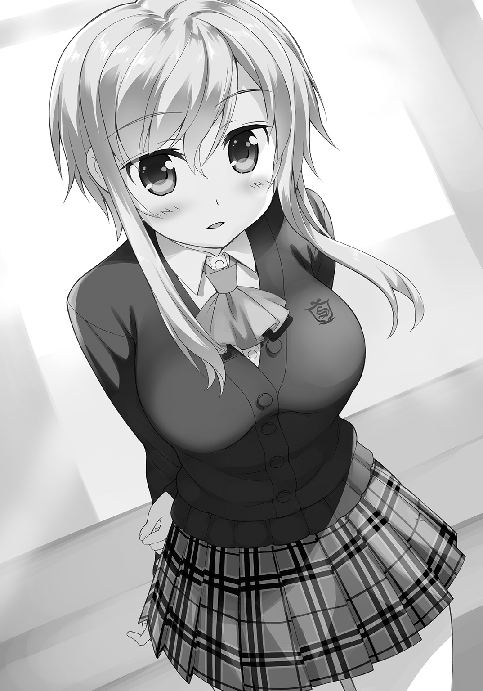
逃げるのはしばらく保留。だって激しく歓迎されちゃったし。
この魔法少女達にしばらくは付き合ってみるのも悪くないかも――
第四章 魔法少女も通販する
皐月宮学園は、事実上の女子校である。
女子校と定義されている訳でも校則が制定されている訳でもないのだけれど、入学を許可された生徒が全員女性ばかりなので、結果的に女子校化しているだけの事だ。
これは当然と言えば当然......皐月宮学園に居る生徒達は、魔法少女か、さもなくば魔法少女候補者ばかりだからだ。一応、中高一貫教育の学校という側面も在るには在るけれど、本来の目的は魔法少女の素質のある者達を見いだし、囲い込み、必要とあれば彼女等に魔法少女としての教育を施して、世界の守り手として用いる――それが皐月宮学園の、存在理由なのだ。
だから元々、男子生徒の存在は学校側も想定していなかった。
なので――校舎の施設も、女子校に準じたものになってくる。
女子更衣室は在っても、男子更衣室は無いとか。
そして何より――
「............」
僕は溜息を一つついて目の前の案内表示を眺めた。
『ＴＯＩＬＥＴ』と書かれたプレートだ。
普通なら、その脇には普通『男性記号』と『女性記号』が並び、二つの入り口が在るものなのだけれど......今僕の目の前にあるのは『女性記号』のみだ。
つまり女性専用トイレという意味。
事実上の女子校というだけあって、皐月宮学園の校舎や寮には、トイレに関しては『女性記号』しかない場所が殆どなのだ。
だから男の僕が此処で用を足す訳にはいかない。
「どうしたもんだかな......」
なんだかんだで僕も皐月宮学園の生徒になった訳だから、校舎の中を一通り見ておこう、と思い立ったのが昨日の事だ。未だ一学期は始まっていないので、授業はないのだけれど、部活やら何やらで学校に出入りする事は出来る。なので僕は朝からこうして、もうすぐ僕が通い学ぶ事になる学舎の中を、散策していたのだ。
で――早々に男子便所が殆ど無い事に気付いた。
今の所、男性用のマークが入っているのは、一階奥にある来客用トイレのみだ。
「困ったもんだ......」
僕はすぐ眼の前にあるトイレの案内表示を見上げて、もう一度溜息をついた。
たかが便所、されど便所、こういう些細な部分からも居心地の悪さというのが醸し出されてくる。元々此処はお前が居る場所じゃないんだと、この女性記号のみが添えられたトイレを見る度に、僕は思い知らされる訳で。
そんな事を、僕が考えていると――
「――あ」
見知った顔が、目の前のトイレから出てきた。
「えっと......彩芽ちゃん」
「おう、彩芽だぜ！ です！」
と元気よく彩芽ちゃんはそう言った。
相変わらず、何だか妙な喋り方である。
基本的には言葉面も口調も、男子学生の――それもいわゆる不良学生寄りの乱暴な喋り方なのだけど、端々でそれに徹し切れていない様な不自然さがある。方言って訳でもないだろうから、何かこだわりがあるのかもしれない。
「ここでユウは何してんだ？ です」
と首を傾げて彩芽ちゃんは尋ねてくる。
「いや別に――」
ここを目指して来た訳ではないのだけれど。
「そうか、なるほど、です。皆まで言うな、です」
「何がなるほどなの」
「覗きは犯罪だぜ！ です！」
「しないよ！」
ごく当然の様にそう言われたので、僕は咄嗟にそう突っ込んでいた。
まあ冷静になって考えてみれば、確かに僕は事実として女性用便所の前に突っ立っていた訳で、男のお前が此処に何の用なのだ、と問われるのも当然なのだけれども。
......というか女子中学生が軍用ライフル振り回してるのも立派な犯罪だと思う。どうせ指摘しても『魔法のライフルだから治外法権』とか訳の分からない事言い出すんだろうけれども。
「僕を何だと思ってるの。そういう痴漢みたいな事しないから」
「けどよ、初対面でボクの尻に顔を埋めてただろ？ です」
と若干、ジト眼で僕を睨みながら言う彩芽ちゃん。
「だから変態なんだろうなっておもったんだぜ、です」
「あれは不可抗力だよ！ 君が吹っ飛んできて、勝手に僕を下敷きにしたんだろ！」
「そうだったか？ です」
「そうだよ。大体――」
僕が更にいわれなき中傷――というか何というか――を晴らすべく言葉を続けようとした、その時。
事件は起こった。
――轟音。
「......え？」
唐突に響いてきたそれは、皐月宮学園の窓硝子を全てびりびりと震わせた。
「な、なに？」
「誰かが爆弾の扱いでもしくじったか？ です」
驚く僕と、全く慌てていない彩芽ちゃん。
「爆弾って......」
誰かが遅刻した、程度の気軽な口調で言う事じゃない気がするのだけれど。ここじゃ爆弾が爆発するのは日常茶飯事だったりするのだろうか。するんですね。まあそうじゃないかとは思ってました。
「魔法の爆弾。問題無い、です」
ぴ、と人差し指を一本立てて彩芽ちゃんは言った。
「......そうですか」
もうその辺りの事については問い質すのを半ば諦めている僕だった。
まあそれはそれとして。
「あれは――」
改めて窓から外を見ると、校門の辺りで炎と煙が上がっているのが見えた。ただし塀が視線を遮っているせいで、何が燃えているのかはよく分からない。
......ん？
という事は何かが燃えているのは、塀の向こうという事か。
爆弾を爆発させようが銃を暴発させようが、この皐月宮学園の中ではどうとでも魔法で誤魔化しが効くらしいのだけれど......果たして、敷地外でもそれは同じなのだろうか。
いや。それ以上に......
「......あれ、なに？」
と僕は窓の外を指さした。
何かが走っている。
猛烈な速度で校門を突破し、校庭を横切り、皐月宮学園の校舎に向けて突っ込んでくる何かが見えるのだ。爆走とでもいうのか、自身を覆い隠す程の土煙をもうもうと生じさせながら、それは僕達が見下ろす中――
「――あ」
皐月宮学園の校舎へと激突した。
再びの――轟音。
また窓硝子が、揃ってびりびりと震えた。
「......土煙でよく見えなかったけど」
「ボクも見えなかったんだぜ、です」
僕と彩芽ちゃんは顔を見合わせる。
何かは分からないのだけれど、最初の爆音の原因でもあるであろうアレが、尋常でない何かだというのは分かった。ついでに言うと彩芽ちゃんの反応からして、あれが爆弾や銃器の暴発の様な、この皐月宮学園ではお馴染みの何か――ではないのも。
しかも――
「......って」
轟音は続いている。
一際大きな爆発音みたいなのは、その何かが校舎に激突した瞬間だけだったけれど......地鳴りの様な、床から這い上がってくるかの様な重低音は、消える事無く校舎全体に鳴り響いていた。どどどどどどど、てな感じで。
つまりそれは、あの轟音が爆発だけのものではなくて、何かが文字通り爆走する際の音という事になるんじゃないだろうか。そしてその何かは今、この皐月宮学園の校舎の中を走り回っている......？
僕の頭の中にむくむくと悪い予感が起き上がってきた、その時。
「暴れ犬じゃあああああああッ!!」
誰かが叫ぶ声が聞こえた。
「......暴れ」
「......犬？」
僕はまた彩芽ちゃんと顔を見合わせる。
暴れ馬とか暴れ牛とかなら聞いた事はあるけれど。
今、暴れ犬って言った......？
二人揃って首を傾げる僕達。
そんな僕達に向けて――
「――!?」
廊下の奥の角を曲がり、猛烈な勢いで何かが迫ってきたのは、次の瞬間だった。
空間をぶち抜く様な速度で、ソレはこちらに向かってくる。室内という事で土煙は生じないから、今度はソレの姿を僕等ははっきりと目視する事が出来た。
即ち――
「............犬!?」
文字通りに、そのまんま、完璧に、ソレは犬だった。
黒い犬だ。
決して大きな犬じゃない。むしろ柴犬とかその辺くらいの可愛らしい中型犬だ。ただし世間的に『黒柴』とか呼ばれる黒毛の部分の多い柴犬とは違う。多いどころか、それは完璧に真っ黒だった。窓辺から差し込む陽光がその体毛に反射しているので、その形を見て取る事が出来るけれど――暗い場所だったなら、『ただの黒い塊』にしかみえなかったろう。
校舎の中に乱入する黒犬。
しかも......それは、猛烈な勢いで、常識とか条理とかをその場に置き去りにして、しかも何だかゆらゆらと陽炎みたいに周囲の風景を歪める程の迫力まで背負って、僕等の方に突撃してくるのだ。
それこそ、ぶつかったらただ事では済まない、済ませはしない、と言わんばかりの猛速度である。確か移動物体のエネルギー量っていうのは質量×速度の自乗、なんだっけ。つまりは重量が倍増するよりも速度が倍増する方が危険というか、単純計算でも衝突のエネルギーは四倍になっちゃう訳で。
しかも衝撃波でも引きずっているのか、それとも、眼には見えない、より危険な何かをまとっているのか......黒犬が真横を通り過ぎた順にぱぱぱぱぱ、と窓硝子が砕け散り、反対側の壁は抉られた様な破片が舞い上がるのが見えた。
何だかよく分からないけれど。
ここで突っ立っているとまずいという事だけは、一瞬で、嫌というくらいに理解出来た。
だから――
「逃げろ！」
僕と彩芽ちゃんは一瞬にして合意に達すると、迫り来る黒犬に背を向け、脱兎の如くに走り出したのだった。
●
元々、人間というのは『走る』事には向いていない。
そもそも安定して走るなら、接地する点の数が多くて、より転倒の危険の少ない四本足の方が良いし、どうせなら腕の――前足の筋力も地を蹴るのに使えた方が良いに決まっているのだ。つまりは四本足の獣の方が走る事には向いている。
それに人間の身体というのは、長時間の全力疾走は出来ない。
陸上競技に短距離――１００メートル走なんかがある事からも分かる様に、人間が全力疾走出来るのは精々が数秒間なのだ。そしてその際に必死に絞り出した最高速度ですら、馬や虎や熊といった四本足の獣には勝てない。
なので......
「のわあああああああ!?」
廊下を走り。階段を昇り。
目の前に立ち塞がる行き止まりの扉を、彩芽ちゃんと二人して、シンクロするかの様な見事な息の合わせ方で蹴破って――しかし、そこが僕等の限界だった。
「......ッ！」
二人して跳び蹴り後の着地に失敗、もつれ合う様にして転がる。
そこに......衝撃波だか何だかよく分からないものを引きずりながら、黒犬が突っ込んできたのは次の瞬間だった。
「ひゃっ!?」
「おぶっ!?」
咄嗟に飛び退こうとして、しかし僕と彩芽ちゃんは互いの足を絡ませて引っ張る様な形になってしまい、先に倒れた僕の上に、更に彩芽ちゃんが倒れてくる結果になった。
お尻で僕を踏みつけるかの様に。
............って、また!?
いや、今はそんな事を気にしている場合ではなくて！
黒犬が！ 黒犬が!!
もう駄目だ、やられる......！
思わず死を覚悟して僕はぎゅっと眼を閉じる。
そして――
「............」
轟、と猛烈な音が僕等のすぐ脇を通り過ぎた。
「あ......あれ？」
僕等は、ただ床に転がったまま。無傷だ。
僕はとりあえず彩芽ちゃんの背中を押して彼女を僕の顔の上から退けた。
で――
「なんで......？」
改めて周囲を見回してみると――僕等が居るのは屋上だった。
そういえばこの校舎は三階建てで、しかも僕等が先程居たのは三階で、だから階段を昇ればもう屋上に出るしかない訳で。
それはつまり、もう逃げ場が無いという事でもあった。
ただ――
「なんなのアレ......」
と僕を尻の下に敷きながら、通り過ぎて行った黒い犬を呆然と見て――多分――彩芽ちゃんが言う。そういえば口調がいつもと少し違うというか、普通の女の子みたいになってるけど、これは驚いているからか。
「暴れ犬......？」
彩芽ちゃんの声は疑問形で上擦っていたけれど、先に見た限り、それはもう疑問を差し挟む余地なんて無いくらいに、何処からどう見ても犬だった。少なくとも猫ではなかったし、兎でもイタチでもカピバラでもない。
「それより彩芽ちゃん、退いて」
「うん」
と応えてから。
「――って、あ、一度ならず二度までも！ です！」
僕の上から飛び退きながら彩芽ちゃんは言った。
口調はいつものに戻っていた。どうも彩芽ちゃんは意識的にあの喋り方をしているみたいで、呆けたり驚いたりすると『素』というか『地』というか、とにかく、普通の女の子っぽい喋り方が出てきちゃうらしい――って、いや、今はそんな事を考えている場合ではなくて。
「やはり尻好きの変態なんだな、です！」
「好きで尻に敷かれてる訳じゃない！」
「次があったら変態確定だぜ、です」
「なんでだよ！」
「三度目の正直っていうぜ、です」
「それ使い方間違ってる！」
僕達がそんな事をぎゃあぎゃあと喚き合っていると。
「――って」
視界の端で、黒犬が大きく弧を描きながらこちらに戻ってくるのが見えた。
勿論、暴走機関車真っ青の速度でだ。
いやもう本当に口論なんかしてる場合ではなくて！
「危ないっ!!」
今度こそ僕と彩芽ちゃんは左右に跳んで暴れ犬の突撃を回避する。
黒犬は僕達の間を猛烈な速度で通り抜けて――そして落下防止のフェンスを突き破り、空中に飛び出していた。
「......あ」
僕は思わず、彩芽ちゃんと共に屋上の縁に駆け寄る。
すると――僕等が見つめる先で放物線を描いて落下しつつも暴れ犬はくるりと、まるで猫の様に空中で一回転。校舎三階分の高さから落ちたにもかかわらず、何ら問題無く着地を決めて見せていた。
そして再び猛烈な速度で校庭だの何だの、皐月宮学園の敷地内を暴走し始める。
本当、何なんだあれ。
「犬......？」
前述の通り、見た目は犬だ。犬なんだけど......犬があんな速度で走れるとは思えない。迫ってきた時の迫力はトラック、とまではいかずとも、ワンボックスカーが突っ込んでくるくらいの威圧感は在った。
そして――
「おう、彩芽と――それにユウ」
「無事だったでありますか」
そう言って屋上にひょっこり姿を現したのは――諸葉ちゃんと、そしてアニタちゃんだった。二人共既に、制服姿ではなくて魔法少女の衣装になっている。
「無事じゃないぜ、です。またユウに尻に顔を押しつけられたぜ、です」
「ユウたんはお尻好きなのでありますか？」
「だからわざとじゃない！」
と僕は悲鳴じみた声で叫ぶ。
このままでは僕は尻好きの変態としての地位を確立してしまいそうだった。遺憾な事この上無い。僕はどちらかといえば胸の方――いや、今はそういう話はどうでもよくて！
「しかし――」
二人は僕達の傍まで歩いてくると、同じくなおも暴走する黒犬を見下ろして言った。
「まさか都市伝説の魔物が学園内に出るとはのう」
「魔物？ アレが？」
「うむ。聞いた事はないか？」
と腕を組みながら諸葉ちゃんが言う。
「高速道路を走り回る黒犬の都市伝説」
はい？ ナニソレ？
「......田舎者なもので......」
僕はそう答えるしかない。
諸葉ちゃんは別に田舎者の僕を笑うでもなく、腕を組みながら言った。
「子犬を連れた黒犬を、ある男が車でひき殺してしまったのじゃが......」
どうでもいいけど、この子、こういう仕草がもの凄く可愛い。
仕草は全体的に尊大というか、大人っぽいものが多いのに、見た目は少女というか......もう幼女と言っちゃっても良いくらいにちんまりしているので、子供が背伸びして大人っぽく振る舞っている様にも見えちゃうのである。思わず頭をぐりぐり撫でてあげたくなる様な感じになる。まあ実態は、古くさい言葉遣いな上に日本刀振り回す魔法少女なんだけど。
ともあれ――
「ふと気がつくと、バックミラーに自分を追いかけてくる黒犬の姿が映っておる。時速六十キロで走る自動車を――じゃ。男は驚き慌て、高速道路に入ってこれを振り切ろうとしたが、黒犬はやはり追ってくる。牙を剝いて、今にも襲いかからんばかりに」
「............」
「ものの本によると、犬の走る速度というのは、グレイハウンドで時速七十キロに達するそうじゃが、勿論、出せて数秒、短距離での速度じゃ。延々と高速道路で犬が自動車を追いかけられる筈も無い」
まあそれはその通りだろう。
つまり――
「これは化け物だ、と慌てた男は運転を誤り、湾岸高速道路から飛び出して海に落ちてしまい、そのまま死んでしまったそうじゃが......犬はその事が理解出来ず、延々と、環状高速道路を、時速百キロを超える速度で巡回して、自分と我が子をひき殺した相手を探しているという――噂じゃ」
噂。都市伝説。怪異。魔物。
「元々西洋には『黒犬獣』という道を走る魔物がおったそうじゃが。それを基に派生した都市伝説化かもしれぬのう。出会った人間は必ず呪い殺されるという大層厄介な魔物じゃが、直線上にしか現れぬとか、角を曲がる事が出来ないとかそんな話じゃったが......」
「......つまりそれって」
「先程、アリスたんに確認をとれたであります」
とアニタちゃんが言い添えてくる。
「世界の歪みを確認。魔法少女が戦うべき都市伝説と認定する、のだそうであります」
「世界の――歪み？」
新しい表現というか言葉に僕は眉を顰める。
「先にも説明したじゃろ？ 不条理、都市伝説、怪異、何でも良いがの」
諸葉ちゃんが人差し指を立てて言った。
「ああいうものを――『本来存在する筈の無いもの』を放置しておくと、世界の法則とか物事の道理とか、そういうものが崩れてくる。あり得ない事が起こり、それが当たり前になってしまう訳じゃ」
「......それが世界の、歪みって事？」
非常に抽象的というか具体的に何がどうなるのかわかりにくいのだけれど。
「そうじゃ。時速百キロで暴走する黒犬。放っておくと、アレがこの世界の常識になってしまう。『黒犬は時速百キロで走るもの』という認識が、当たり前になって、それを前提に世界が組み変わってくるのじゃ」
そう言って諸葉ちゃんは溜息をつく。
「世界というのは存外、不安定なものでの。本来の法則から外れた不条理が生まれた場合、それを放っておくと、定着して、それがその世界の常識になってしまう」
「......時速百キロで走る犬が、当たり前の世界......」
「ちょっと可愛いかもであります」
とアニタちゃんが頰を赤らめて言う。
「んな訳あるか、です！」
と片手で突っ込みを入れる彩芽ちゃん。
まあ実際に吹っ飛ばされ掛けた身としてはそう言いたくなるのも当然だ。
犬に轢かれて死ぬ。まあ常識で考えればおよそあり得ない話だった。可愛いとか可愛くないとかそういう次元の話でもない。不条理――まさに不条理だ。
「今回は避ける事が出来たから良い様なものの、正面衝突しとったら大変じゃぞ」
と諸葉ちゃんも呆れた様子でそう言ってくる。
確かにフェンスとかもあっさりぶち抜いてるし、あの様子だと二番目に僕等が聞いた爆音も、あの黒犬が皐月宮学園の玄関に激突してぶちこわした音なのだろうし......僕等がまともにアレにぶつかられていたら、どうなっていた事か。骨折で済めばいいくらい、最悪、ばらばらで挽肉コースである。
「でもうちのぶーちゃんの巡航速度は時速五百キロであります」
と言うアニタちゃんは、ちょっと不満げな表情だった。
............ん？
「時速百キロ程度まだまだ可愛いのであります」
「ジェット機と一緒にするでないわ」
と諸葉ちゃん。
......って。何？ 何の話？
ぶーちゃん？ ジェット？
「とにかく、追うぞ」
諸葉ちゃんはそう言って、階段の方に戻っていく。
異論は無いみたいで、彩芽ちゃんとアニタちゃんもその後に続いた。
そして――
「あ......追いかけるんだ。気をつけて」
そう言って僕は手を振った。
しかし――
「............」
彩芽ちゃん、アニタちゃんが不思議そうに眼をぱちくりさせながら僕を振り返ってくる。
え？ なに？ なにその反応？
「寝言は寝て言え」
そして最後に諸葉ちゃんが振り返ってきてそう言った。
「お主も一緒に来るのじゃ」
「え......？」
「私達......チームであります」
更に、上目遣いで何かこう、ねだる様な感じに行ってくるのがアニタちゃん。
なんかこの子は......本当、こういう幼い感じの仕草が可愛すぎる。意識してやってるならあざといだけなんだろうけど、この子の言動からして、多分、天然なんだろうし。
「え、でも、あの。追いつけるの？」
まあ僕も、引っ張り出されるのだろうなという予感はあったのでこれには驚かない。
しかし――
「追うって言ってもどうすんの、あんなの」
あの猛烈な速度の黒犬、実際に時速百キロで走っているのかどうかは知らないけれど、徒歩で走って追いつける様な速さじゃないだろう。校舎内で僕等が十数秒でも逃げる事が出来たのは、あくまで直線距離が極めて短い建物の中だからだ。如何に不条理な存在でも、一応、曲がり角では物理法則に従う感じで減速していたらしい。
しかし......
「大丈夫。足止めするから......であります」
とアニタちゃんは言った。
「足止めって......？」
「任せるであります」
そう言ってアニタちゃんは何処からか、５００のペットボトル程の大きさの――しかし妙に四角くてごっつい機械というか、道具というかを取り出して見せた。
映画とか漫画で見た事がある。
無線通信機だ。それも多分――軍用の。
ひょっとしてこれが彼女の『魔法の杖』なんだろうか。
しかし通信機で足止めって――
「......ＣＱＣＱ、こちらアニタ」
アニタちゃんは何処かぼんやりした口調でそう言った。
「召喚――ブーちゃん！」
その言葉が通信機に吸い込まれていった――直後。
――轟ッ!!
黒犬のそれを上回る猛烈な轟音、いや、爆音と共に、屋上の一部が陰った。
まるで僕等の真上に、何か巨大なものが存在しているかの様に。
「......え？」
僕は思わず頭上を振り仰ぐ。
そこには――
「............うぎょ!?」
思わず変な声が出た。
皐月宮学園の真上を飛んでいくそれ。
一瞬で僕等の上を通過し、遙かな空の向こうで大きく弧を描いて旋回しつつ再びこちらに戻ってくる巨大な――鋼鉄の、鳥。
長い二枚の翼と、機体の左右に大きく張り出した特徴的なエンジンが、独特の輪郭を作り上げている。大きな、あまりにも大きなそれは、しかし巨体に似合わない素早さで僕の視界から一旦出ていって――すぐにまた何処かで旋回したのか、今度はこちらにその鼻面を向けて近づいてくるのが見えた。
「な、なにあれ......」
「ぶーちゃんであります」
とそこかはとなく得意げに言うアニタちゃん。
「フェアチャイルドＡ10〈サンダーボルトⅡ〉、略してぶーちゃんであります」
「略しとらん略しとらん」
と突っ込む諸葉ちゃん。
しかしアニタちゃんは構わず、何処かうっとりした表情で通信機にこう命じた。
「ぶーちゃん、ポイント３−３−９に対地支援要請、であります！」
「対地支援要請って......」
そういえばアニタちゃん、自分は「支援しか出来ない」なんて言っていたけれど。
彼女の言う『支援』って――まさか。
「まあ要するに空爆じゃな」
「なるほど、空爆...............って、ちょっと!?」
そう解説してくれる諸葉ちゃんに、今度は僕が突っ込む番だった。
「魔法の対地支援要請であります」
ちなみにアニタちゃんは嬉しそうだ。
魔法の対地支援要請。魔法の空爆。
魔法の......
「魔法とつければ、もう、なんでもありか！」
どう考えても魔法少女の武器とかそういう領域じゃないと思うんだけど！
というかそれ以前に、足止めとかそういう次元ですらないような気が――
「魔法のＡ10〈サンダーボルトⅡ〉対地攻撃機が、魔法の30ミリ機関砲で標的を魔法的に粉砕してくれるのであります。マジカル・アベンジャー。七つの砲身からマジカル30ミリ砲弾をマジカル発射するのであります」
「本当に魔法とかマジカルとかつければそれでいいとか思ってない？」
「ちなみに、操縦しているのはお爺......もとい妖精さんであります」
「......いやもう無理にメルヘンしなくていいから......」
「草一本残さないのであります」
どやっ！ とでも言わんばかりに胸を張るアニタちゃん。
元々胸が大きい上に胸元が白い衣装なので、なんだかすごくこう......いや、今はそんな事を気にしている場合ではなくて。
「足止めじゃないの？」
「............」
僕の突っ込みにぱちくりと眼を瞬かせるアニタちゃん。
あ。これは考えてなかった顔だ。多分。
「というか、あの黒犬、校舎とか校庭とか構わず走り回ってたけど、それを撃つという事は......」
そしてあの攻撃機――Ａ10〈サンダーボルトⅡ〉は当然、校舎の中になんか入らないから、外を飛んでいる訳で。校舎の外から校舎の中に居る黒犬を撃つ場合――
「ポイント３−３−９ってひょっとして、皐月宮学園の校舎の事なんじゃ......？」
と僕が呟いたその瞬間。
ぼおおおおおおおおおおおおおおおおおおおおおおおッ!!
銃声というより、神話か何かの巨獣が吼えるかの様な――連続するが故に一連になって聞こえてくる重低音が、皐月宮学園を揺るがす。
同時に、廊下の奥の方で、ガラスが割れ、壁が崩れ、天井が落ちて、猛烈な塵煙が膨れ上がっていくのが見えた。
呆然とその様子を見つめる僕等。
そして――
「............大丈夫であります」
ぽつりとアニタちゃんが言った。
「なにが？」
「魔法の......30ミリ機関砲だから..................多分......きっと......」
彼女は明後日の方向を眩しげに見ながらそう言った。
......うん。少しは考えて行動しようよ、君等！
「ちょっ......あれ！」
と僕が指さす先では、破壊現象とそれに伴う塵煙が広がって、というか、僕等の方に近づいてくるのが見えた。
やばい。よく考えなくてもやばい。
「い、急ぐぜ、ユウ！ です！」
と彩芽ちゃんが僕を促してくる。
「マジカル30ミリ機関砲が、マジカル流れ弾で校舎をマジカル破壊し尽くす前に！」
「だからマジカルってつければ何でも誤魔化せる訳じゃないだろ!?」
「リ......リリカル機関砲？」
「可愛く呼んでも何も変わらないよ！」
走りながらも首を傾げてそう呟くアニタちゃんに、そう叫ぶ僕。
「本当、後先考えてよ!! 頼むから！ ――っていうかその前に止めて！ アニタちゃんも！」
駆け出す魔法少女達の後を追って僕も走りながら、悲鳴じみた声でそう訴えた。
多分、無駄なんだろうなあと想いながらも。
............
『魔法少女』
それは、不思議な力を持った少女達。
彼女等は、この世界を守る為、人知れず都市伝説や怪異といった不条理と戦う、正義のスーパーヒロインなのだ............！
............
......多分...............きっと............その......そうであって欲しい......です..................
「急げ新兵！ 倒れるまで走れ、です!!」
僕を振り返ってそう叫んでくる彩芽ちゃん。
「あー......はい」
そう返す僕の口調には、既に諦めの響きが滲んでいたのだった。
●
で......結論から言うと。
僕達は『暴走する黒犬』という都市伝説――その怪異を皐月宮学園の中で仕留める事が出来なかった。
アニタちゃんによる、というか魔法のＡ10〈サンダーボルトⅡ〉攻撃機・通称〈ぶーちゃん〉による足止めは、殆ど功を奏しなかったからだ。魔法の攻撃機による魔法の30ミリ機関砲の砲撃は、皐月宮学園をあちこち穴だらけにしたけれど、肝心の『暴走する黒犬』を相手には全く役に立たなかった。
速すぎた――というのがアニタちゃんの説明である。
これは『黒犬』が、というのではなくて、〈サンダーボルトⅡ〉の方がだ。
「元々、〈サンダーボルトⅡ〉は、砂漠やら荒野やら、広い場所で戦車や装甲車を獲物として狙って攻撃を仕掛けるジェット攻撃機であります」
とアニタちゃんは言った。
そう。〈サンダーボルトⅡ〉はジェット機なのだ。
だから、いかに広いとはいえ、たかが学校一つの敷地なんか、ほぼ一瞬で通り過ぎてしまう。要するにヘリコプターの様にその場で滞空しながら攻撃を仕掛けるという事が出来ないのだ。
「お蔭で射撃に使える時間が非常に短いのであります」
どうも、すれ違いざまの一瞬が精々といった所らしい。
しかも、黒犬が戦車や装甲車なんかより遙かに素早く、しかも複雑に動き、なおかつ小さい。校舎という遮蔽物があった事もあり、照準が非常にしにくかった......のだとか。
この辺りはアニタちゃんから聞いただけで僕もよくは分かっていないのだけれど。
ちなみに、奇跡の様な幸運か、それとも『魔法』であるからか、今回の一件で皐月宮学園に被害者は出なかった。強いて言えば黒犬の暴走に巻き込まれそうになった僕と彩芽ちゃんがそれぞれ転んだときに軽い打撲傷を一つ二つ負った程度である。
ともあれ。
『黒犬』は散々、皐月宮学園を引っかき回した末に消えてしまった。
しかし――問題はどうして黒犬が皐月宮学園にやってきたか、だった。
●
皐月宮学園......生徒会室。
魔法少女達の『作戦会議』は此処で行われるとの事だった。
「――昨日の、都市伝説『暴走する黒犬』の学園襲来についてですが」
昨日と同じく、空中に何の支えもなく不自然に浮かびながら妖精アリスが言った。
不条理、というのならば、この人工妖精がまず何よりも不条理というか不自然なのだけれど、本人（？）はそれが当然といった感じで振る舞っているし、魔法少女達もこれをあまり問題視する様子はない様だ。
というか不自然、不条理、というのなら最初に魔法少女達の魔法がそうなのだが。
その辺どうなっているのだろうか......
「色々と調べてみた結果、概ね、原因が判明しました」
ちなみに、昨日と異なり、この生徒会室には魔法少女達が十数人、椅子に座って並んでいる。ただし皆、格好は制服のままなので、あんまり魔法少女っぽくない。
でもって、教室の様に皆一方の壁を向いていて、そこに在るホワイトボードには、『都市伝説・暴走する黒犬』『対策会議』と書かれていた。
ともあれ――
「ネット通販が原因だったようです」
とアリスは言った。
............
............
「――は？」
僕は頭の中で幾つかの単語が嚙み合うのに若干の時間を要した。
ネット通販？ 都市伝説が皐月宮学園を襲った理由が？
ネット通販というと――あのママゾンとかラツテンとかそういうやつ？
「どういう事？」
「皐月宮学園の生徒達が利用したネット通販......その配達に来た宅配業者が襲われたらしいのです」
とアリスは両手で抱えたサインペンで、ホワイトボードに『被害者：宅配業者さん』と書き添えた。
要するに皐月宮学園を目指して来たのは『黒犬』ではなくて、宅配業者で、『黒犬』は宅配業者を狙って襲っていただけ。皐月宮学園に乱入したのは、本当にもう、勢いというか、大した理由はなかったらしい。
......迷惑な話である。
まあアレが怪異であり不条理である以上は、遠からず世界の綻びになる訳で、皐月宮学園に攻め込んでこようがこまいが、魔法少女達にとって『敵』であり駆逐すべき対象である事に違いは無いのだけれど。
「世間に出回る『暴走する黒犬』の怪異についての情報を総合するに、どうも、『黒犬』は一定以上の速度......概ね、時速二十キロ以上で地上を移動する物体を追尾してこれを襲う、という『習性』があるらしくて」
「『習性』って......」
光に集まる虫でもあるまいに。
「『黒犬は時速二十キロ以上の速度で地上を移動する物体に対して襲いかかる』という法則が、この世界に出来上がりつつある事ですよ」
とアリスはホワイトボードに黒犬のイラストを描き込みながら言った。
「世界はその法則を中心に、急速に変質・変容を始めます」
不条理とは世界の綻びなのだとアリスは言った。
世界とはそもそも『決まり事』の集合体なのだという。
『法則』とか『条理』とか......そういう無数の『決まり事』が複雑に嚙み合って、世界というものは出来ている。世界とはつまりそうした『部品』で一分の隙も無く組み立てられた精密機械であるとも言える。
そんな精密機械の部品を一つ、間違って入れ替えてしまえばどうなるか。
例えば歯の数の違う歯車、あるいは経の違う回転軸、そういったものが間違って組み込まれれば、どうなるか。
多分、不具合が生じて、それが連鎖的に拡大していく。
それをアリス達は『歪み』と呼んでいる。
『歪み』は更なる『歪み』を呼び、その結果、世界は自分の形を保てなくなってしまう。適合しない部品を組み込まれた機械を無理に動かし続ければ、当然、壊れてしまうのと同じ様に――世界は崩壊するのだ。
そうなれば、僕等も生きてはいられない。僕等が生きているというこの事実も、つまるところ世界を動かす条理や常識の上に成り立っているからだ。世界が崩壊するとは、それらも全てばらばらになって機能しなくなってしまうという事である。
具体的にどんな事になるのかは僕にもよく分からない。
僕等という存在がいきなり消えるのか。
それとも呼吸が出来なくなったり、真っ直ぐ立つ事もできなくなったりして、『こんな筈じゃなかった』とか何とか言いながら死んでいくのか。
ともあれ――
魔法少女達は、そうなる前に、その『歪み』を――即ち『不条理』を、『怪異』を、その結果として生じる『魔物』を取り除き、世界の崩壊を防ぐ使命を負っているのだそうだ。
「ただ、この法則による世界の変容には、まだ若干のムラがあるようです。この事実を知らない、認識しないまま、今まで通りに活動している人達も居て、襲われた宅配業者さんもそうだったようです」
「......あの、アリス？ ひょっとして」
と彩芽ちゃんが片手を挙げて問うた。
「私とユウが追いかけられたのって」
「逃げたからでしょうね」
とあっさりアリスが答えた。
要するにこの『黒犬』は『時速二十キロ以上で走るもの』に見境無く――というか自動的に襲いかかる、逆に言えばそれだけの『現象』なのだ。僕等はただ、避けて、その場に留まっていれば良かったという事になる。
......間抜けな話だった。
「えっとそれはつまり」
壁際に立っている魔法少女の一人が片手を挙げて言った。
亜麻色の髪と翡翠色の眼をした、長耳人の女の子だ。確か名前は、ミュセル――だっけか。歓迎会じゃ空っぽの鍋をお玉で搔き回してたけど、一体あれは何の芸なんだろうか。
「宅配便は以後――来ない事になったりするんでしょうか？」
「宅配便に関していえば」
とアリスは何処からか取り出した紙束の資料をめくりながら言った。
「黒犬の存在を前提に世界が変容しつつあるので、その影響を受けるでしょうね。宅配便というより陸上運送全般に言える事ですが。具体的には黒犬に襲われないようにゆっくりと移動するか、さもなくば、空輸するとか......」
「............」
魔法少女達が眼を瞬かせながら顔を見合わせる。
「いずれにせよ、そうなれば当然、運送費が高騰するか、さもなくば恐ろしく時間が掛かってしまうか。今までの様に低価格の配送料で翌日に届く、なんて事はなくなると思いますよ」
「............」
魔法少女達の間でざわめきが広がっていった。
どうも皐月宮学園ではネット通販の恩恵を受けている子は多いみたいだ。不条理がどうの、怪異がどうのという以前に、ネット通販が使えなくなる事がまず、彼女等にとって由々しき事態なのだろう。
「私、この間、新作コスメ一式頼んじゃったよ......」
「新刊の漫画、発売日に届かないでしょうか？」
「私も５・56ミリ弾、千発程、ベルトリンクと一緒に発注したばかりなんですけど......」
「あたしもゲル化ガソリン、この間頼んだんだけどなー」
......等々。
中には、『いや、そもそもそれ黒犬の一件が無くても届かないんじゃ？』と思う様な、物騒な感じの品もあったけど、それはさておき。
「とにかく」
アリスがまとめる様に言う。
「このままでは世界の『歪み』は大きくなるばかりです。全ての黒犬――具象体を徹底的に殲滅するか、あるいは彼の――」
とここでアリスは僕の方を示した。
「魔封使いの能力で、完全具現化させた不条理の『核』を叩いて一気にこの不条理全体を『無かった事』にするか。現実的なのは後者でしょう」
まあ確かにこの世界に何匹の黒犬が居るのかしらないが、百や二百といった数でないのは間違いない。それらを探し出して駆除するというのはおよそ現実的ではないし、そもそも今回の不条理の『現象』はあくまで『黒犬が猛烈な速度で走って、自動車や列車を襲ってくる』という不条理がこの世界の法則として定着しつつあるからであって、黒犬の存在そのものではない。なのに黒犬を駆除――というか皆殺しにするというのも、あまり気持ちの良いものではないだろう。
だから僕の出番という事になる。
僕の魔封使いとしての能力は、曖昧な現象も実体化させて物理攻撃が効く様にするというものだ。だけど世界中に広く行き渡っている『現象』を実体化させるとなると、僕の能力ではさすがにその全てを実体という『器』に詰め込むのは難しい。
だから、出来るだけ僕は不条理の『核』......そう言われる不条理の根元、『始まりの出来事』に近い部分から魔封使いの力を使うべき、なのだそうだ。
樹の枝や葉を刈り取っていくのではなく、根元の幹を切り倒す――という考え方だ。
「記録上、最初に『暴走する黒犬』が出た場所と時間は分かっています。これが恐らく『核』――もしくはそれに最も近い具象体でしょう」
暴走する黒犬なんて代物、目立たない筈がない。
だから今回の不条理が何処から始まったのかは、警察や道路交通省の記録を調べれば概ね分かるらしかった。でもって魔法少女達にとって、その手の情報を調べて入手するのは簡単な事なのだろう。銃やら攻撃機やらを振り回す魔法少女達なので、今更、超法規的手段の一つや二つ、驚くには値しない。
「............つまり」
それまで黙っていた諸葉ちゃんが言った。
「その『核』と思しき『黒犬』とユウを接触させ、実体化、その上で叩く――と？」
「それが最善、それが根本的対処法かと思われます」
とアリスが言い、魔法少女達が頷く。
しかし――
「いや。ちょっと待って？ それって」
今、諸葉ちゃんは『接触』といった。
それはつまり、あの時速八十キロだか百キロだかで走り回って、衝撃波みたいなものまで引きずってる黒犬に、僕が触るって事？
猛烈に僕は嫌な予感を覚える。
何というか、危険な香りがぷんぷんしている。
しかし――
「何とかなります」
「......魔法で？」
「ええ。魔法で」
僕がジト眼で尋ねるとアリスは無責任に言って、微笑んできた。
「彼女達は、魔法少女なんですから！」
......まあ、そうなんでしょうけど。
●
......そういう訳で。
僕達は、あの『暴走する黒犬』ともう一度接触しなければいけない事になった。
いや。正確には皐月宮学園を襲った個体とはまた別、『最初に暴走し始めた黒犬』が相手だ。そちらの方がより『核』に近い筈だとアリスは言った。
「そもそも不条理とは......」
廊下を歩きながら解説をしてくれるのは諸葉ちゃんである。
彼女は代々、怪異狩りを生業にしていた一ノ瀬家の人間で、言うなれば生まれついての魔法少女なのだそうだ。だから不条理だのその結果として生じる怪異だの、そういうものについては非常に詳しい。
で――
「平行世界同士の接触が原因じゃ」
「......平行世界？」
突然の単語に僕は驚いて眼を瞬かせる。
「それって、いわゆるパラレルワールド？」
「いわゆるも何もパラレルワールドの日本語訳が平行世界じゃ」
と諸葉ちゃんは言った。
「時空連続体の海を、泡の様に漂う世界と世界が接触した時、不条理は生じる。異なる『決まり事』で作られている世界同士が接触した場合、お互いに侵食が始まる訳じゃ」
「......侵食......」
「混じり合うといった方が早いかのう。とにかく、本来この世界を構成していない『決まり事』がこの世界に混入してくるという事じゃ」
「余計な部品が入り込んできて動作不良を起こす機械とかそんな感じ？」
「まあそうじゃな」
と諸葉ちゃんは頷く。
「で――この平行世界同士の接触じゃが。勿論、偶然に起こる事も在るが、強い強い人間の感情がこれを引き起こす場合も多い」
「......そうなの？」
今ひとつどういう事か実感が湧かない。
強い怒りとか悲しみとかそういうものが、世界の危機を引き起こしてたりする？
「自分が今居るこの世界を否定する気持ち」
呟く様に諸葉ちゃんは言う。
「こんな現実を認めないのだという気持ち」
「............」
「もっと違う未来が在った筈なのにという気持ち......ある種の資質を持った人間がそうした感情を強く強く抱いた時、その望み通り『違う』世界が引き寄せられてくる」
さすがに誰でも、という訳にはいかないようだ。
ただし本人に自覚がないだけで、『資質』を持った人間というのは結構、沢山いるらしいとの事だった。少なくとも魔法少女達がその全てを把握しきるのがほぼ不可能と思えるくらいには。
「そして、その世界と世界の接触点から不条理は広がっていく。だから『始まりの怪異』の周辺には必ずその不条理の『核』――平行世界との接触点が在る。強くこの世界を否定する気持ちを抱いた者が居て、その者の元に平行世界が引かれてくるからじゃ」
逆に言えば、その『核』を破壊する事で平行世界同士の接点は消滅する。
結果――平行世界は離れ、世界は相互に安定を取り戻すのだとか。
「まさしく泡じゃ。球体は基本的に、他の球体とは一点でしか接する事が出来ん」
「その理屈は分かったけどさ」
僕は諸葉ちゃん、そしてアニタちゃん、彩芽ちゃんと一緒に歩きながら言った。
不条理の『核』に僕を接触させること。
それがこの三人の魔法少女達に学園側から与えられた任務だそうだ。
ちなみに他の魔法少女達は、それぞれ各地に散って、末端の怪異――即ちあちこちで『暴走する黒犬』を止めに行っている。この怪異を放置すれば、益々不条理は広がり、世界の変質と崩壊は早まる。だから彼女等は現状維持の為に出払っているのだ。
「で......僕等は何しに何処に向かってるの？」
先頭を歩いているのは彩芽ちゃんである。
彼女が僕達三人を引っ張って皐月宮学園の校内を歩いている訳だけど――
「つまりだ、黒犬は、『一定以上の速度で走る物に襲いかかる』訳だからよ、です」
肩越しに僕等を振り返りながら、彩芽ちゃんが言った。
「こっちで『襲ってください』ってばかりに走り回ればいいんじゃねえか？ です」
「それは道理じゃが」
と応じるのは諸葉ちゃんだ。
「一定速度以上といっても、やはりより速く、長く走っているものに襲いかかるのじゃろうし、その為には『足』が必要じゃろ。かといってアニタの〈ぶーちゃん〉は飛行機じゃから、黒犬には無視されるしのう」
そう。飛行機には黒犬は反応しないのだ。
黒犬が襲うのは、あくまで地面の上を走るもののみ。
「不本意で在ります......」
とアニタちゃんは何だか不満そうだ。なんでだよ。
で――
「だからその『足』を持ってる奴の所にいくんじゃねえか、です」
と彩芽ちゃんは楽しげに言った。
「『足』を？」
と諸葉ちゃんが首を傾げる。どうやら彩芽ちゃんが何処に向かっているのかは、諸葉ちゃんも分かっていなかったらしい。
「しかし彩芽。我等は未だ中学生故、普通の車は勿論、自動二輪も免許が無いぞ」
「......あ、そこはちゃんと法律に従うんだ？」
普段から自動小銃や日本刀振り回したり、ジェット攻撃機を召喚したりしてるくせに。
「誤解があるようじゃが」
と諸葉ちゃんは半眼で僕を睨んで言った。
「我等は正義の魔法少女じゃからな！ 法律違反の犯罪者になる積もりなど無いのだからして。我が〈露鏡〉や彩芽の〈シャーリーン〉も」
「魔法の杖なんだよね」
僕は溜息交じりにそう応じる。
「分かっておれば良いわ」
と唇を尖らせて言う諸葉ちゃん。
その幼い容姿に反して、何かと物知りで、落ち着いていて、振る舞いそのものは大人びた部分が目立つ諸葉ちゃんなのだけど、時折こうして歳相応の表情を見せたりするのが、もの凄く可愛い。
「そうそう。だから、だぜ、です」
と何故か得意げな表情で僕を見て彩芽ちゃんが言った。
「魔法の杖なら問題無いんだぜ、です」
「魔法の杖......」
日本刀。あるいは自動小銃。
それはまあ、どちらも細長いので、強引に『杖』と言う事も出来るだろうけれど。
アニタちゃんの場合も〈ぶーちゃん〉を呼ぶ通信機が魔法の杖なのだと言われれば、そう見えなくもないのだけれど。
だからといって高速走行する杖なんてのが想像つかない。
魔法少女ならぬ魔女だと、箒に乗って空を飛ぶ、なんて伝説が在るけれど。空を飛ぶものには『黒犬』は反応しない訳だから――......
「............」
僕はふと、魔法少女がまたがる箒から二本の足が出て、地を蹴って走り回る図というのを想像したけれど――笑って良いのかどうかすら分からないくらいにシュールだった。
そんな事を考えつつ、僕等は校舎裏に出た。
この辺りは確か、部活用の部室が並んでいる所――倶楽部棟だ。
同じ様な扉がずらりと並んでいる。
彩芽ちゃんはその中の一つの前で、足を止めた。
「ここだぜ、です」
「ここって――」
「おーい、久瑠実、いるか、です！」
がんがんと倶楽部棟の部屋の一つ、その扉を彩芽ちゃんが叩いた。
「くるみ......？」
僕が尋ねる様に諸葉ちゃんの方を見ると、彼女は、何やら驚いた表情を浮かべていた。
「おい。彩芽。久瑠実とは、伊達久瑠実か!?」
「そうだぜ、です！ おーい久瑠実！」
「何を考えておるんだお主は！ 事もあろうに伊達久瑠実とは！」
と諸葉ちゃんは何やら怒っている、というより、そのダテクルミ、という人にあまり良い感情を持っていないみたいなのだけれど。
「アニタちゃん。知ってる？」
「名前は聞いた事があるであります。正式な魔法少女ではないでありますが」
と首を傾げて自分の頭の中を整理するかの様にアニタちゃんは言う。
「魔法少女として不安定だとかで......」
「不安定......」
それはどういう意味か。
僕もまた首を傾げていると。
「――あぁ」
聞いているこちらまで膝から力が抜けるかの様な、だれきった声と共に扉が開いた。
「なぁにぃ～」
部屋の中から顔を出したのは、何やら妙に汚れた顔の、女の子だった。
年齢は多分、彩芽ちゃんらと大差無いだろう。十代半ばといった所だ。長い金髪を、首の左右で括って束ねている。それだけだとただ可愛いだけの髪型なのだけれど、この子の場合、その上からやたらと特徴的なものを着けていた。
ゴーグルだ。それも何処かレトロな感じの。
これがこの女の子の容姿に独特の雰囲気を与えていた。
目鼻立ちは整っているものの、全体的に何か眠そうに緩んでいて、今ひとつ締まりが無い感じがする。彩芽ちゃんは諸葉ちゃんの様な潑剌とした可愛らしさではなくて、かといってその気怠い感じが大人の色気に繫がっているという訳でもなくて。
低血圧っぽいという意味で、その雰囲気はアニタちゃんとは近いかもしれないが、アニタちゃんよりも妙に退廃的というか、妙にダレた感じがあった。
「あ～彩芽～」
伊達久瑠実――久瑠実ちゃんは、彩芽ちゃんに気付いて片手を挙げた。
「おひさ～」
「ひさしぶりだな、だぜ！ というかたまには授業に出てくるといいんだぜ、です」
「かったるいし～」
何というかやたら元気そうな彩芽ちゃんに対して、久瑠実ちゃんはというと、放っておけばその場に座り込んで眠ってしまいそうな雰囲気があった。
「面倒くさいし～」
どうやらこの女の子はサボりの常習犯らしい。皐月宮学園は名門、というのが世間の評価なのだけれど、沢山生徒が居れば、こういう子も出てくるという事なのだろう。
「あるぇ～その人はぁ～？」
と久瑠実ちゃんはとろんとした眼で僕の方を見て言った。
「聞いてないか、こいつが今度うちに入った魔封使いだぜ！ です」
「あ？ あー......ああ～ああ」
一瞬、首を傾げてから、久瑠実ちゃんは小さく頷いた。
「なんかそういう話を聞いたような～聞かないような～」
「............まあ、こういう奴じゃ」
と諸葉ちゃんが溜息混じりにそう言った。
この様子だと僕の歓迎会には来ていなかったのだろう。僕も彼女の顔に見覚えはない。
「とても信頼に足るとは思えんのだがな」
「信頼って――」
「だから、『足』なんだぜ！ です」
と彩芽ちゃんは自信たっぷりに言った。
「久瑠実、お前の『魔法の杖』を借りたいんだぜ！ です」
「私のぉ～？」
かくん、と首の骨が折れたかと思える様な仕草で首を傾げる久瑠実ちゃん。
「破壊力とか殺傷力とか無いけど～？」
「それはボク達の担当だぜ！ です」
と胸を張って言う彩芽ちゃん。まるで『ぶち殺すのはボクに任せろ！』と言わんばかりだけれども、女の子が朗らかな笑顔でそういう事を言うのはどうかと僕は思う。思うだけだけど。言っても多分、無駄だろうから。
「久瑠実はその『足』でボク達を運んでくれればいいんだぜ、です！」
「んん～」
久瑠実ちゃんはそう言われてしばらく唸っていたが。
「まあいっか～」
そう言って部屋の中に引っ込んだ。
彩芽ちゃんが彼女を追って中に入り、僕等もそれに続く。
するとそこには――意外なものが在った。
「......これって」
「私の魔法の杖～」
とボンネットをぱんぱんと気軽な動作で叩きながら久瑠実ちゃんは言った。
そう。それは――四輪の、自動車だった。
それもオープンカーで、どことなくクラシックな感じの。
街中で普通に見かける自動車とは雰囲気が全く違う。オープンカーだから屋根が無いのは当然としても、前照灯も車体に組み込まれておらず、デメキンの様に独立している。
車輪は在る。座席も在る。ハンドルもレバーも在る。
でもカーステレオとか、エアコンとかはついていない。座席まわりは恐ろしく簡素で、普通の車を見慣れた僕の感覚では、何か物足りない感じすらする。
走る為に最低限必要な構成で作られたと思しき、もの凄く、本質的なものを感じさせる車だった。
「〈パンプキン・キャリッジ〉～」
と久瑠実ちゃんは嬉しそうに言った。
キャリッジっていうのは馬車だったっけ。
という事はこれは『カボチャの馬車』か。
「ベースはケータハム・セブン６２０Ｒだよ～うふふふふ～」
「はぁ......」
僕は車に詳しくないので、そう説明されてもよく分からないのだけれど。
「でぇ～何処に運ぶの～？」
「何処というよりも」
と彩芽ちゃんが言った。
「高速で走り回るモノを襲う、『黒犬』の怪異が出現してるんだぜ、です。要はボク達を乗せて囮として走り回って欲しいのだぜ、です」
「高速で走るモノを襲う～？」
のたのたとした動作で〈パンプキン・キャリッジ〉に乗り込みながら首を傾げる久瑠実ちゃん。彼女はしばらく右に左にと、首が定まっていないかの様に、ぐらんぐらんと頭を振っていたが。
「――うしっ」
ぱしんと音を立てて両手が〈パンプキン・キャリッジ〉のハンドルを握る。
そして――
「高速で走るモノを襲う怪異ッ？」
まるで何かの部品ががちんと塡まったかの様に。
久瑠実ちゃんのぐにゃぐにゃだった身体に、一本、芯が通った。
「怪異上等ッ！ 爆走上等ッ！ 怪異が怖くて走り屋は不可能ッ！」
歯を剝いてにやりと獰猛な笑みを浮かべながら、久瑠実ちゃんは言い――彼女に同調するかの様に、〈パンプキン・キャリッジ〉が排気音で吼える。
「............この子」
まるで別人の様に変わった久瑠実ちゃんを前に、僕は思わず諸葉ちゃんを振り返る。
「こういう奴なんじゃ。まあ二重人格ってのが近いかの」
「――不安定って」
アニタちゃんが言っていたのもコレか。
どうもこの久瑠実ちゃん、ハンドルを握ると人格が変わっちゃう類の人らしい。
「コレがいいんだぜ！ です！」
「おう、任せろ上等ッ！」
彩芽ちゃんとは気が合うのか、久瑠実ちゃんは握り拳をがつんがつんとお互いに付き合わせている。およそ女の子同士のコミュニケーションらしくないけど、不思議とこの二人がやっているとよく似合う。
「というか、これに乗るの？」
「おう、これに乗るんだぜ、です！」
と彩芽ちゃんが僕の疑問に答えてくれる。
しかし――
「でもこれ二人乗り......」
「魔法の杖ッ！」
僕の台詞を遮る様に言いながら、久瑠実ちゃんはパイプフレームで出来た荷台を指さす。
まさか残りはそこにでもしがみついてろという話なんだろうか。いやまさか。でも。
「法律無関係ッ！」
「いやそれは」
法律云々以前に安全面に多大なる不安が。
「魔法の杖！」
「............」
「マジカル・スーパーセブン！ キャブレターこそ正義！ こう、ぐっとアクセル踏み込んでエンジン噴かしたその瞬間！ エグゾースト・パイプから火を噴くような暴れっぷりこそ大正義！ インジェクション？ ふざけんな！」
いや。何言ってるのか全然分からないんですけど。
「マジカル大丈夫ッ！」
「............そうですか」
魔法少女達と知り合って一両日。
彼女等が『魔法』とか『マジカル』とか言い始めると、それは『突っ込まれても知りませーん』という意味だという事を、僕はそろそろ学習しつつあった。
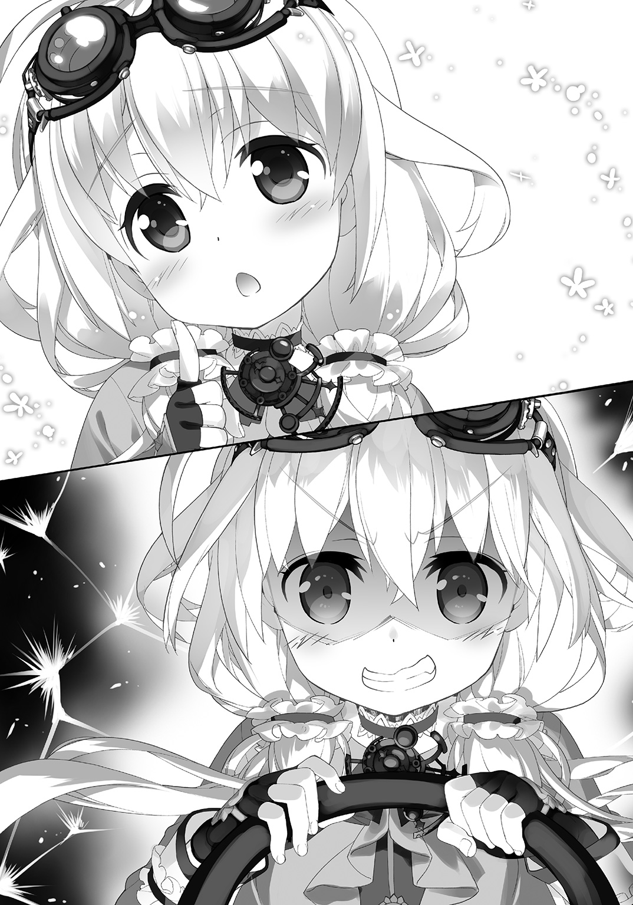
第五章 魔法少女は疾走する
スマートフォンの機能を使ってテレビをつけてみる。
すると丁度――ＣＭをやっていた。
『大変だよ。五時の会議に間に合わないと会社が潰れちゃう』
『大急ぎで行ってみたら？』
『でも黒犬に襲われたら......』
『そんな時にも安心！ ソミー損保の黒犬保険！』
『うわぁこれはすごいね。黒犬に襲われた時も保証してくれるのか！』
『黒犬に襲われた際に、入院すれば一日につき最大六千円、手術の際には最大一千万円、死亡保証は最大五千万円まで！』
『これでスピードを出しても安心だね！』
............
そこでＣＭが終了。
ニュース番組が始まった。
『続いて次のニュースです』
ニュースキャスターが、深刻な表情を浮かべて言った。
『本日は高速道路において黒犬が出現し、暴走族が壊滅しました』
画面に映し出されるのは、高速道路の上に幾つも潰れて投げ出されている自動二輪や自動車の残骸。ニュースキャスターの言葉が無くとも、派手な塗装や無意味に高々と伸びた排気管なんかからも、黒犬に襲われた暴走族の末路だという事は一目で分かった。
更に――
『地元では暴走族の壊滅を喜ぶ人の声で溢れる一方、郵送及び交通費用の高騰に各企業は頭を悩ませています』
横に『ママゾン』などと書かれた箱を運んでいるのは、あろう事か、戦車に護衛された装甲トラックである。ちなみに戦車の側面には宅配便大手の『ミッツー』のペリカン・マークがペイントされている所を見ると、あれ、宅配便業者持ちの装備らしい。
そういえば最近の戦車って、時速六十キロ以上出るんだっけ。
あんなもの使って運んでりゃ、そりゃ、運送費も高騰するのは当然だ。
当然――運送費用が異様に掛かるって事は、物資の流通が滞るって事であり、更に言えば経済が停滞するって事にも繫がる。モノの動きが従来の半分以下の速度になってしまう訳だから。
更に――
『黒犬の襲撃を警戒し、今年は国内最大級のサイクルスポーツの祭典も中止される運びとなっており――』
時速二十キロ以上で走行するものは自転車であろうと黒犬は襲う為、自転車競技は勿論、競輪も中止される事になった。
この国から、いや、世界中から、自動車が、列車が、自転車が、とにかく高速移動する地上の移動手段が消えていく。残ったものは、黒犬対策に重武装・重装甲を施された戦車の様な輸送車と、後はヘリコプターや旅客機の様な航空手段だけだった。
「なんだかな......」
僕はスマートフォンの映像を切って溜息をついた。
ふと――今居るビルの屋上から、周囲を見回す。
何十何百という高層建築群と、その間を血管の様に縫って這い回る高速道路網。
都会そのものといった風景は、恐らく、昨日とも何ら変わりなく。
しかし――その何処かで確実に昨日まで在ったものが無くなって、昨日まで無かったものが在る。世界が歪み、変わる、とは聞いていたけれど――たった半日で、ものの見事に世界は変容をきたしつつあった。
しかもそれを、殆どの人々が意識していない。
ニュースキャスターも、唐突な『一定以上の速度で走行するモノを襲う黒犬』という現象について、驚いている様子は無かった。そもそもそんな異常な、不自然極まりない存在は、二日前まで全く存在していなかったというのに。
恐らくこのまま、世界は『黒犬』の存在を中心として歪みきっていくのだろう。
それが限界に達した時、世界は破綻を始めるのだ。
「どうした、ユウ、です？」
と首を傾げて傍らの彩芽ちゃんが問うてくる。
「あ、いや。本当に世界が変わっちゃってるんだなって」
僕はスマートフォンを示して言った。
常識が。条理が。一夜にして変化する。変化し続ける。
変化は変化を呼び、破綻に向けて連なっていく。
しかし多くの人々はそれに気付かない。気付けない。気付いているのは元々不条理と戦う為に存在する魔法少女達と――その関係者のみなのだ。
「なんだか今まで説明受けても実感わかなかったんだけど」
僕は彩芽ちゃんの顔を見ながら苦笑を浮かべた。
「これ、世界の危機なんだよね」
「だぜ？ です」
と彩芽ちゃんは頷いた。
「しっかりしてくれよ、新兵、です」
「新兵ね......」
海兵隊オタクっぽい彩芽ちゃんからすると、やはり僕は新兵という扱いなのだろう。
まあそれは今更というか、変態と呼ばれなくなった分だけ、良いのだけれど。
「......ふと思ったんだけどさ」
僕は彩芽ちゃんの顔を覗き込みながら尋ねた。
「彩芽ちゃんは、どうして魔法少女やってるの？」
「――え？」
と首を傾げる彩芽ちゃん。
きょとんとしたその表情は、ごくごく普通の女の子の様で、可愛い。普段は『常に忠誠を』だとか『協力して励め』だとか『簡単だぜ、鈍いから』とか乱暴な言動の多い子なのだけれど、こうしてみるとやはり中学生女子なのだなあと思う。
考えてみれば郷里の妹も、やたらお姉さん気取りで僕の面倒を見たがってた一方で、たまに歳下の女の子っぽい、幼い表情を見せたりしていた。中学生というのはやっぱり、背伸びしたい年頃なんだろう。つい先日まで僕もそうだった訳だけれども。
なんだか懐かしいというか、微笑ましいというか。
ともあれ――
「どうしてって......」
「僕は、君達に連れてこられた訳だけど。魔法少女は皆、自分の意志で魔法少女をやってるんでしょ？」
少なくとも諸葉ちゃんやアニタちゃんや、その他の魔法少女達も、嫌々やらされている、という雰囲気は無かった。
「まあそうだぜ、です」
「世界を守る為？」
大義名分としてはそうなんだろう。
けれど実際、僕にはやはり『条理の破綻』『世界の終わり』と言われても今ひとつピンとこない。戦うという具体的な行動に出るには、自分の身の丈に合った具体的な理由が必要なのではないか、そんな風にも僕は思う。
すると――
「んー......？」
彩芽ちゃんは首を傾げてしばらく唸っていたけれど。
「世界、世界......世界っていうのは、漠然としてよく分からないけれど。多分、『普通』かな。ボクが守ってるのって」
「普通？」
「うん」
とこっくり彩芽ちゃんは頷いて言った。
口調からいつもの不良学生っぽい部分が抜け落ちているけれども、本人は気付いていない様だ。やはりあれは一種、そういう『装い』なんだろう。大慌てな時とか、真剣な時とか、本人に余裕がない時には、素のままの口調が出てしまうのだ。
「なんだかね。普通って難しいんだよ」
と彩芽ちゃんは言った。
「何が普通かとか、どうすれば普通なのかとか、本当、曖昧でよくわからないでしょ」
「それは......」
確かに『普通』という言葉は相対的で抽象的だ。
明確に、それ自体の存在を以て、コレが普通だ、といえるものは殆ど無い。
「だから、普通は、普通で在り続けないと駄目っていうか」
自分でも考えながら喋っているのだろう。
彩芽ちゃんはつっかえつっかえしつつも話してくれた。
「なんていうのかな、皆は、意識してないんだけど、普通は、きっと多分、簡単になくなっちゃうんだよ。誰かが、昨日までの今日を、今日と同じ明日を、迎えられるようにって、意識してないとね」
「............」
僕の脳裏を、かつて見たニュース映像が過ぎる。
地震によって唐突に失われた――日常。
「だからボクは世界がどうとかよく分からないけど、上手く言えないけど、世界が普通でありますようにって思って............あ」
そこまで言ってから、彩芽ちゃんはふと顔を赤らめて言った。
「世界がずっと普通でありゃあいいなあって思うんだぜ、です」
「......そっか」
多分、彩芽ちゃんは自分でもよく分かってないし、僕も、抽象的に過ぎてはっきりとは分からないのだけれど。
彼女が正義の味方というのは、単なる自称ではないのだろうとも思った。
抽象的。曖昧で形がない。
そういうものも『言葉』という器を与えてやる事ではっきりとする事がある。
僕は改めて不条理なんていう曖昧で形のないものと戦うにあたって、その前に、まず魔法少女達の何となく抱えている気持ちとか、そういうものをはっきりさせておきたかったのだ。
世界平和とか、正義とか......それは、ただ言葉だけならば中身のない空疎なものだけれど。それは実感を詰め込む事で、抱えて、掲げるだけの重さを持つ。
僕がそんな事を考えていると――
「何をいちゃいちゃしとるんじゃ」
とひょいと僕達の横から顔を出したのは諸葉ちゃんである。
反対側にはアニタちゃんもいた。
「彩芽たんだけずるいであります」
「へ？ いや、ボクは何も、ちょっとお話ししてただけだよ――だ、ぜ、です！」
慌てていつもの口調を取り繕う彩芽ちゃんが、妙に可愛い。
「まあ、何をするにしても後にせい。そろそろじゃぞ」
「ん――久瑠実、いけるか、です？」
「――無論、勿論ッ！」
既にハンドルを握って戦闘状態の久瑠実ちゃんは猛獣みたいに歯を剝いて笑う。もっとも久瑠実ちゃんも彩芽ちゃん達に負けず劣らずの美少女なので、それは子猫がにゃー！ と鳴いているのにも似て、ひたすら可愛いのだけれど。
しかし......ここはビルの屋上だ。
高速道路を見下ろせる位置という事で、此処に陣取った訳だけども、言うまでもなく此処から直に高速道路には繫がっていない。
まあそもそもどうやってこんな場所に〈パンプキン・キャリッジ〉を運び込んだのかという疑問が残るのだけど。久瑠実ちゃんの『魔法の杖』は、気がつけば既にそこに在った。多分、どうやって尋ねても『魔法』の一語が返ってくるだけだろう。案外、アニタちゃんの様に『召喚』したのかもしれない。
しかし問題は此処からだ。
一体、皆はどうするつもりなのか。
僕が一抹の不安を抱えていると――
「全員、乗車ッ!!」
と久瑠実ちゃんが言ってくる。
今〈パンプキン・キャリッジ〉は後部の、パイプフレームで組まれていた荷台に、更に数本の鉄パイプが追加で手すりの様に取り付けられている。要するに二名の定員オーバー分はそこに乗れ、という事らしい。
「乗るぜ、新兵、です！」
と僕の襟首を摑んでくる彩芽ちゃんに引っ張られ、僕は〈パンプキン・キャリッジ〉の荷台に膝をついて乗り、手すりのパイプを摑む。僕の隣には諸葉ちゃん。助手席には彩芽ちゃんが座り、そしてアニタちゃんはというと此処で待機。
そして――
「発進ッ!!」
久瑠実ちゃんが叫ぶと同時に、〈パンプキン・キャリッジ〉のタイヤが猛烈に回転開始、その場でゴムの焦げる音をさせながら、次の瞬間、放たれた矢の様に、その車は跳びだしていた。
屋上の縁、落下防止策に引っかける様にして取り付けられた板に向かって。
「ちょっ――」
まるで減速する様子もない〈パンプキン・キャリッジ〉に僕は青ざめる。
つまり――
「沈黙推奨、舌嚙むなと忠告ッ!!」
一気に周囲の風景を置き去りにする――加速。
次の瞬間、僕達を乗せた〈パンプキン・キャリッジ〉は、踏み板を経由して空中にその車体を躍らせ――眼下の高速道路に落ちていった。
●
流れる。流れ去る。
目の前の風景が左右に分かれて千切れ飛ぶ様に消えていく。
時速百キロ。数字にすると単純で大した事が無い様に見えるけれど、それは人間にとって本来、あり得ない――生き物としては体感する筈の無い速度だ。
短距離走の世界記録保持者ですら百メートルを十秒弱、九秒の壁は破れた試しが無い。
つまり単純に考えて人間の走行速度は自分の肉体を使う限り、秒速十メートルと少し、時速にすれば精々が三十六キロ強という事になる。
時速百キロというのはその三倍近い。
しかも――〈パンプキン・キャリッジ〉はオープンカーだ。
硝子と鋼鉄に囲まれた車内に僕達は居る訳ではない。
体感速度は普通の車内にいるのとまるで違う。周囲を流れていく景色とは別に、僕達の全身を掠めて過ぎていく空気さえもが、僕達が今、如何にあり得ない速度で移動しているかを懇々と説いてくるのだ。
危険だ。危険だ。止まれ。これはお前の出して良い速度じゃないのだ――と。
「............」
正直言って、僕はびびりまくっていた。
あり得ない。無茶苦茶だ。
しかも僕と諸葉ちゃんはシートベルトをして身体を包み込んでくれる様な座席に座っている訳でもない。荷物の様に後部に設けられたパイプフレームの上に膝をつき、手すり同様のパイプを摑んでなんとか、疾走する鋼鉄の馬に――いや馬車にしがみついている状態だ。
正直、風圧がもろに顔を叩くので、眼もあまり長々と開けていられないくらい。
一応、身体をベルトでパイプに繫いでいるのだけれど、いつ落馬、ならぬ落車するか分からない状態だ。
とんだ『カボチャの馬車』である。
しかし――
「愉快ッ！ 痛快ッ！ 大爽快ッ！」
ハンドルを握っている久瑠実ちゃんはというと、もの凄くご機嫌だった。
彼女は、額に掛けていたゴーグルで目元を覆っているせいで、僕の様に眼を開けているのも辛いといった状態ではないのだろう。むしろ上機嫌でハンドルを握り、アクセルを踏んでいる。
でもってその隣の彩芽ちゃんも――
「ろっくんろーるッ！ です！」
と何故か、ご機嫌だった。
彼女の方は僕等と同様にゴーグルもヘルメットもしてないのだけれど、あまり風圧や速度を気にした様子は無い。というより、この状況をとても楽しんでいる様だった。
彩芽ちゃんが久瑠実ちゃんと仲が良い理由が、何となく分かった気がする。
要するに......本質的に暴れん坊なのだ、この子等。
で――
「ぬぅっ――」
と僕の隣で同じく風圧に耐えているのは、諸葉ちゃんである。
こっちは僕と同様、荷物扱いで荷台にいるせいか、あんまり楽しむ余裕は無いみたい。
それどころか――
「く、首が、首が」
とか何とか唸っている。
どうも長い髪がある分、帆船の帆みたいに風を受けて首に負担が掛かっているらしい。
長いと言えば久瑠実ちゃんも同様の髪型でやたら長いが、彼女は自分の髪をお尻の下に敷く感じで座席に座っているので、髪が風をはらんで首を引っ張られる様な事はないらしい。さすがに『走り屋』だけあって、その辺は心得ているのだろう。
「......諸葉ちゃん！」
僕はとりあえず腕を伸ばして、ばたばたと犬の尻尾みたいに後方になびいて跳ねる彼女の髪を摑むと、そのまま彼女の肩に腕を回した。
「ぬっ......!?」
「これでちょっとは大丈夫!?」
「あ......」
と眼をぱちくりさせて。
「お、お主、何を――」
「何って！ なんかもう、髪の毛がばたばたしてて大変そうだったから！」
もうそれこそ彼女の首が折れるか、そうでなければ全部髪の毛が千切れ飛んで無くなりそうにすら見えたのだけれど。
「折角、綺麗な髪なんだし！」
一見すると老人の白髪の様にも見えるけれど、間近で見ると諸葉ちゃんの髪は単に枯れて白くなったのではなくて、艶やかさはそのまま、色素が何故か抜け落ちているのだと分かる。単なる白ではなくてそれは、銀の輝きだった。
ある程度まで、これが風になびくのは格好良いのだろうけれど。
こんな風に煽られてばたばた千切れそうになっているのは、正直、危なっかしくて見ていられない気持ちになってくるのだ。
髪は女の命、なんて郷里の姉が言っていたのを僕は覚えている。
だから姉は髪の毛の手入れにはやたら気を遣っていた。まあその一方で妹は平然とじょきじょきはさみを使って自分で自分の髪を無造作に切ったりしていたけれども。
「綺麗――」
一瞬、諸葉ちゃんは驚いた様に僕を見つめていたけれど。
「おんなの髪を、髪を、いきなり、鷲摑みなど、な、何という破廉恥！」
「へ......？」
何やら文句を言われている様に思って、僕は僕で驚く事に。
しかし諸葉ちゃんはすぐに眼を僕から外して、俯いた。
「い、いや、良いわ、忘れろ！」
「あ、う、うん」
彼女の白い頰が若干、赤らんでみえるのは気のせいか。
まあともあれ――
「いつまで僕等はこうしてなきゃなんないんだろうね！」
「分からん！」
僕の言葉に諸葉ちゃんが、怒り気味でそう答えてきた。
そう。
僕達は今、『囮』として首都圏高速道路を走り回っている。
元々『暴走する黒犬』が最初に確認されたとされるこの高速道路で走り回っていれば、『核』を持った黒犬が出てくる可能性が高いと判断されたからだ。
しかし、実の所、問題の『黒犬』が普段は何処にいるのかすら僕等には分かっていない。下手をするとこの場合の『黒犬』というのは、台風や津波や地震みたいな単なる『現象』で、普段は存在していない可能性もある。
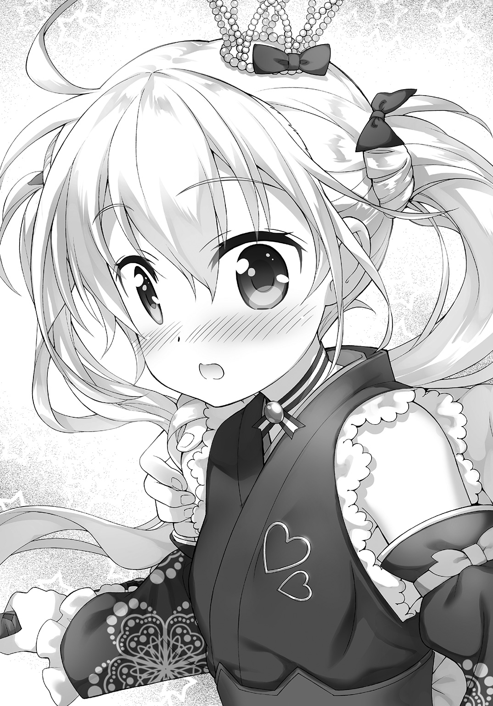
確実に僕等を襲ってきてくれる、という保証は無かった。
ただ、『黒犬』は複数の走る物体が存在する場合、より高速で走るものに襲いかかるらしい、という推測は立っている。だからこそ僕等は、命知らずの暴走族達すら居なくなった高速道路を、この〈パンプキン・キャリッジ〉で爆走している訳だ。
そして――
「ビィイイイイイインゴォッ！」
と叫んだのは久瑠実ちゃんだった。
そして――
「二人共、後ろっ!! です！」
と少し首を傾けて〈パンプキン・キャリッジ〉のサイドミラーを覗き込みながら言うのは彩芽ちゃんである。僕等は風圧に負けそうになる首の筋肉に改めて力を入れながら、こわごわと後方を振り返った。
すると――
「――来た！」
確かに大当たりだった。
来た。黒犬だ。
小さな身体に巨大な、オーラだか煙だか、何だかよく分からない黒々としたものを纏って、こっちに向かって突き進んでくる。僕が学園で遭遇した黒犬とは別なのか、何かこう、迫力が段違いだった。そもそも前に見た黒犬は迫力は在ったものの、目に見える様な黒い何かなんて背負っていなかったし。
しかもこの黒犬......ぱっと見は、可愛いのだ。
全体的に寸詰まりというか、縫いぐるみみたいに小柄というか。
だからこそ、それが、時速百キロ平均で疾走する自動車に追いつこうとして走っている様は、何というか、不条理そのものの光景をそこに描き出している。
「なんなんだよこれは......！」
まさに理不尽そのものだ。
だが――文句を言っても始まらないのだろう、多分、これは。
「覚悟を決めい！」
と諸葉ちゃんは僕に向けて言ってきた。
「手を伸ばせ！ アレが追いついてきた瞬間に、アレに触れるのじゃ！」
......やっぱりそうなるのか。
全ての不条理の始まりであり原因となる怪異――『核』であるそれに僕が触れれば、不条理はその一点に物理的実体を以て顕現する。要するに『何だかよく分からない不可思議なもの』は『摑んで殴って焼き払える』何かになる訳だ。
「で、でも――」
僕があの『黒犬』に触れて具象化出来たとしても、同時に〈パンプキン・キャリッジ〉が壊されてしまっては、僕等はそのまま高速道路に投げ出される。また具象化には数秒の時間が必要だから――触れたその瞬間に実体化した不条理を叩いてしまうという訳にもいかない。
「何の為に我等がおると思っておる！ お主が触れた瞬間に――」
「あの黒犬をぶち転がして距離あけるぜ！ です！」
つまり......僕があの黒犬に触りさえすれば具象化は始まる。
ならば、僕があの黒犬にぎりぎり触れるくらいにまで敢えて追いつかせて、僕が魔封使いとしての能力を発動させたその瞬間、魔法少女達は〈パンプキン・キャリッジ〉を破壊されない様に黒犬を引き離す、というのだ。
なんだ、その綱渡り作戦!?
一瞬でもタイミングが狂ったら全員死亡じゃないのそれ!?
大体、時速百キロで走る相手に触れるとか――
「やっぱり無理――」
「無理じゃねえッ！ です！」
と助手席から叫んでくるのは、彩芽ちゃんだ。
「相手がこっちに追いついてくるって事は、お互いにはもう殆ど速さに差が無いって事だろうが！ です！」
「そりゃそうだけどさ！」
相対速度というやつだ。
時速百キロなら百キロで――同じ時速百キロで同じ方向に走る二つの物体は、互いが互いに静止して見えるだろう。たまに平行して走る電車の窓から、隣の路線の電車を見た時、走っている筈なのに隣の電車が止まって見えるのと同じ理屈だ。
確かに『黒犬』のみを見ていれば、『ゆっくり近づいてくる』様にも見える。
しかし僕の周囲には時速百キロで走行する際の風切り音が、これでもかこれでもかと聞こえてくるし、わずかでも眼を左右に逸らせば、飛ぶ様に流れ去る風景が、自分達の出している速度を思い知らせてくる。
これで、安心して手を伸ばせ、という方が無茶だろう。
とはいえ......
「............」
『黒犬』はじりじりと近づいてくる。
そして周囲の風景は前述の通り飛ぶ様に流れ去っていく。
「――うっしゃッ！」
と彩芽ちゃんが助手席から身を乗り出しつつ、〈シャーリーン〉を構える。
恐らく、僕が『黒犬』に触れた瞬間に銃撃して、減速させる積もりだろう。完全具象化前の黒犬に銃撃が効くかどうかは、疑問だけれども。
「いけっ！ ユウ！」
「いやでも」
「なんだったらボクが蹴落とそうか？ です！」
「無茶苦茶言うなっ！」
僕は悲鳴じみた声で言いつつ、仕方なく手を伸ばす。
しかし身体を荷台にベルトで固定したままで、しかも身を伏せたままではろくに距離を稼げる筈も無い。やっぱり無理なのだ。僕がそう思った瞬間――
「せいっ！」
あろう事か。
裂帛の気合いと共に〈露鏡〉を抜いた諸葉ちゃんが、僕を荷台に固定するベルトを切ってしまった。
「ちょっおっっとおおおおおおおっ!?」
「ええからとにかく手を伸ばせいッ！」
ぐらりと姿勢を崩し、風圧を受けて荷台から落ちそうになる僕を、その小さな左手で意外にしっかり摑み、諸葉ちゃんが叫ぶ。
「............！」
僕は荷台の端に足を掛け、諸葉ちゃんに左手を摑んで貰った状態で身体を伸ばす。諸葉ちゃんは逆に――僕を引っ張りながら全身で後ろに倒れながら何とか均衡をとる。
そこに黒犬が近づいてきた。
後三メートル。二メートル。一メートル。
そして――
「――！」
黒犬が、跳んだ。
最後の一メートルを一瞬で無にしようとするかの様に、高速道路の路面を蹴って跳躍。
だがむしろ――これは、僕にとって好都合だった。
道路上を走る小さな黒犬に車上から触れるよりも、跳躍して襲いかかってくる黒犬に触れる方が楽だ。しかも相手は空中で移動する手段を持たない。放物線を描いて僕の所に落ちてくるしかない筈だ。
僕は迫ってくる黒犬に手を伸ばす。
指先が、その闇そのものを押し固めたかの様な身体に触れ――
――しゃっ!!
「痛っ!?」
触れようとしたその瞬間、黒犬は短い前足で僕の手を――犬とは思えない、妙に人間くさい仕草で、『邪魔だ』とばかりに払ってきた。
勿論、それが普通の犬であるならば、本当に『あいたっ！』と声を上げる程度で済んだだろう。しかし実際にはそれは、何台もの自動車を破壊してきた怪物なのだ。
僕はバットか何かでぶん殴られたかの様な衝撃を右手に受けて、よろめく。
空中で支点が無いというのに、筋力だけでこの威力。相手は不条理であり怪異であるのだという事を僕はこの瞬間に改めて思い知らされた。
そして――
「――ッ!!」
僕が身体をねじってよろめいてしまったせいだろう。
諸葉ちゃんの手が僕から、離れた。
「ユウッ!!」
諸葉ちゃんが悲鳴じみた声を上げる。
緊張と焦燥と恐怖で、僕の時間感覚は極限まで加速され、何もかもがのろのろと動く世界の中――彼女が咄嗟に僕に向けて手を伸ばすのが見えた。
だが届かない。彼女の小柄な身体ではどれだけ手を伸ばしても僕には届かない。
奇跡でも起きない限りは。
うわ。駄目だ。
死ぬ。死んじゃう。
僕は自分の脳裏に田舎の両親や姉や妹の姿が過ぎるのを感じて戦慄した。
これが人間が死の間際に見る走馬燈というやつか――
――暴ッ!!
だけど、次の瞬間。
時速百キロの自動車から、高速道路の硬い路面に叩き付けられる筈だった僕の身体は、物理法則に反するかの様に浮かび上がっていた。
奇跡か。いや――違う。
それはもう魔法でも奇跡でもなく、紛う事なき物理だった。
つまり――
「――アニタッ！」
彩芽ちゃんが頭上を見上げながら叫ぶ。
僕等の上に一瞬、巨大な翼竜じみた影を落としつつ、遙か彼方に飛び去っていくのは、ビルの上に残ったもう一人の魔法少女、アニタちゃんの召喚した〈ぶーちゃん〉――即ち、Ａ10〈サンダーボルトⅡ〉攻撃機だった。
音速こそ出ないそうだが、〈サンダーボルトⅡ〉は強力なエンジンを二基積んだジェット攻撃機だ。それが地面すれすれ、五メートルも無い高度での超低空飛行を敢行した為、地面から跳ね返ってきた気流が、一瞬ながら僕を浮かび上がらせたのだ。
しかし......
「ユウッ！」
諸葉ちゃんが僕の方に手を伸ばす。
だけど、やはり足りない。三十センチばかり。
なので僕はやっぱり――死ぬ？
「――せいっ！」
などと、覚悟を決めた次の瞬間。
あろう事か、僕は、諸葉ちゃんに斬られていた。
いや。突かれていた。
足の甲を。彼女の日本刀――〈露鏡〉で。
「ぎゃあああああああっ!?」
「――りゃああッ！」
悲鳴を上げる僕と吼える諸葉ちゃん。
次の瞬間、僕は足を引っ張られる様にして〈パンプキン・キャリッジ〉の上に引っ張り戻されていた。要するに諸葉ちゃんは、足りない三十センチを、日本刀である〈露鏡〉で補ったのだ。勿論、日本刀の切っ先には僕を摑む指なんて無いので、代わりに、僕の足にこれを突き刺して。
「痛い痛い痛い痛い！」
「男の子じゃろうが！ 泣くな！」
「男の子でも日本刀で足をぶち抜かれたら痛いにきまってるだろっ！」
勿論、斬れてすっぽ抜けてしまっては意味が無いから、諸葉ちゃんが僕を引っ張ったのは刀の峰を使ってだ。だけど右足の足首から下を二つに切り裂かれなかった代わりに、僕は傷口に全体重を集中させられた状態で引っ張り上げられた訳で。
「血、血、血がっ」
「魔法の日本刀じゃから大丈夫じゃ！」
「噓だ、噓だ、絶対噓だ！ 血が出てる！」
「気のせいじゃ！」
「何処がだよっ!?」
とぎゃあぎゃあ喚き合う僕と諸葉ちゃんのすぐ横で。
「うりゃあああああああッ！ です！」
彩芽ちゃんの叫びと同時に、銃声が轟く。
高速走行しつつも着地、八艘跳びみたいに、左右にフットワークを利かせつつ〈パンプキン・キャリッジ〉に再び飛びかかろうとしていた『黒犬』が、空中で見えない鉄槌に殴られたかの様に、吹っ飛んでいた。
その小さな身体が路面に落ちて、跳ねる。
「うわっ......」
数秒前に殺されそうになったのだけれど、僕は、何となくその黒犬が気の毒にすら思えた。まあ事実としては小動物を軍用ライフルで近距離から撃っている訳だし。
だがそれで、僕達の距離は大きく開いた。
さすがにすぐにあの『黒犬』は僕等に追いついてはこられまい。
「ともあれ、これで――」
と諸葉ちゃんが言いながら背後を振り返って。
そして――
「なっ!?」
愕然と彼女は呻いた。
僕も彼女の視線を追って再び背後に眼を向けて――硬直する。
いた。猛烈な速度で追いかけてくる、何かが。
当初は黒犬が再び追いかけてきている様にも見えた。
しかし――
「違う。あれは」
僕は呆然と呟く。
大きさがまるで違う。あれは自動車位の大きさがある何かだ。
同時に......黒犬に触れた右手のしびれが、身体を這い上がってくるのが分かった。
これは――
軽々と跳ねる小さな身体。
とめどなく流れ出る血。
失われていく体温。
焦りと、恐れと、そして悔やみと。
全てが――
「ユウ......！」
諸葉ちゃんに揺さぶられて僕は我に返った。
「何を呆けとるか！」
「あ、えっと」
束の間、僕は幻視に囚われていた様だ。
何度か瞬きをすると、僕の周りに漂っていた幻影は綺麗さっぱり消えて、後方に流れ飛ぶ高速道路の風景と、諸葉ちゃんの姿が戻ってきた。
「あれが、お主が具現化した『核』か!?」
彼女が指さすのは――一台のトラックだった。
その鼻面に黒犬のマークをつけた。
即ち――
「黒犬でもなんでもないぜ！ です！」
「あれはどこぞの運送会社の――」
「――うん」
僕は頷いた。
「そうだよ。あれ、運送会社のトラックだ」
全体的に黒ずんでいるけれど。
意味不明の迫力を背負い、時速百キロで走っているけれど。
それはもう、通販でお馴染みの――黒犬マークで有名な、某宅配会社の、車両だった。
「一体何なんじゃあれは!?」
「............あれが原因、みたい」
僕は脳裏を過ぎった幾つかの映像を改めてつなぎ合わせて理解しながら言った。
黒犬に触れた時、僕は具象化能力を使うと同時に、『核』に関する幾つかの事をも知る事が出来た。恐らくは何かが逆流してきたのだろう。
僕は確信を以てこう言った。
「そうだよ。間違いない。あれが――都市伝説の始まりだったんだよ」
●
遠藤吾郎は疲れ果てていた。
彼は黒犬のマークを掲げる某宅配業者――その末端の配達員として日々、仕事をこなしていた。
遠藤吾郎は真面目な青年だ。勤務態度も非常に良好。荷物の届け先の評判も良かった。
しかし業者間の競争は激化する一方で、賃金の低下と反比例して就業時間は増えていった。とにかく数をこなさなければどうにもならない。だから遠藤吾郎はがむしゃらに働いていた。
都会で一人暮らしという事もあって、多少の無茶をしても彼を窘めてくる者は居ない。
だから彼は寝る間も惜しんで働いた。ある程度の資金を貯めたら、別の商売を始めよう、動物が好きだから、ペットショップもいい......そんな風に思っていたからだ。
だが――
「――はッ!?」
睡眠不足は致命的だった。
間断なく襲い来る眠気に、ほんの一瞬、遠藤吾郎が意識を奪われた――その後。
気がつくと彼は、配送用のトラックで、黒い犬の親子をはねていた。
はねたのが人間でなかっただけ、幸いだった、と言えたかもしれない。
だが遠藤吾郎は......幸か不幸か、そうは思えない人間だった。
「しまった......！」
慌てて車を止めて、はねた犬の親子に駆け寄る。
親犬はもう一目見て手の施しようが無いと分かる状態だったが、子犬には未だ息があった。勿論、獣医並みの知識など遠藤吾郎には無かったが、今すぐ獣医に連れて行けば助かるかもしれない――そんな風に彼は思った。
母犬は申し訳なかったが、せめてもの罪滅ぼしに、子犬だけでも助けてやりたい。
遠藤吾郎は痛切にそう思った。
それに――
「うわ。あの宅配業者、犬はねたよ」
「あれ、黒犬マークのとこじゃん」
「黒犬が黒犬はねるとか――」
通行人達の会話が、遠藤吾郎の耳を掠めた。
まずい、と遠藤吾郎は思った。
競争の激しい宅配便業界である。どんな事で足を掬われるか分からない。宅配業者のトラックが犬をはねて殺した、しかも黒犬を会社のマークにしている様な業者が――そんな話が証拠の写真と共にネットにアップでもされたら、世間の非難を浴びて、会社は大打撃を喰らうかもしれない。
やはり、このまま捨てていく訳にはいかない。
動物好きの遠藤吾郎は、黒犬の親子をはねてしまった事で、激しく動揺していた。だから彼は何が何でもこの子犬は救わねばならない、自分の気持ちの上でも、会社の為にも、そうすべきである、と彼は強く思い込んだ。
いわゆる『テンパっていた』というやつだ。
そして――
「未だ間に合う、間に合う筈だ......！」
遠藤吾郎は子犬を小脇に抱え、車を走らせて、カーナビで調べた動物病院へと向かった。
しかし、運悪く近くに動物病院は無く、しかも、一番近い動物病院に辿り着くのには、普通に走っていれば半時間以上掛かる。
そして、それまで子犬は保ちそうになかった。
だから遠藤吾郎は交通違反覚悟の速度で車を走らせた。警察に捕まれば一発で免停になりかねない様な速度超過をしながら、彼は動物病院に向かった。もう動転しすぎて彼は損得を推し量れる様な状態になかったのだ。
そして――二度目の事故が起こる。
ハンドル操作を誤った遠藤吾郎は、電柱に正面衝突。
彼はへしゃげた車の中で――子犬と共に、圧死した。
しかし......
（急がないと......急がないと......早くしないと......）
彼は、ただそれだけを考えながら死んだ。
（くそっ......邪魔だよ......おまえら邪魔だよぉ......！）
自分の前を、概ね法定速度を守って走る、他の自動車を恨み憎みながら。
そして――
●
「久瑠実ちゃんっ！」
「――合点承知ッ！」
僕の叫びに魔法の自動車を駆る魔法少女は打てば響くといった感じで応じてくれた。
〈パンプキン・キャリッジ〉が猛烈な勢いで加速する。
「魔法加速ッ!!」
彼女の叫びと同時に、僕と諸葉ちゃんの居た荷台が、がこん、と音を立てて何十センチか上に持ち上げられる。車体後部が開いて、そこから何か厳ついものが顔を出していた。
何か？ それは――
「え？ なに、まさか」
「魔法の――ロケットエンジンッ！」
僕の位置からは彼女の顔は見えないけれど、きっとドヤ顔してるんだろう――そう確信できる様な声だった。
そう。それはどこからどう見てもロケットエンジンだ。円錐状のノズルを備えた厳つい推進器。どうやってもこの車体の中に収まりそうにないのだけれど、これも――というかこれこそが魔法だったりするのか。
「そんなのありか!?」
「あり！ 魔法ッ！」
「君等みんなそれかッ！」
僕の怒鳴り声だけをその場に置き去りにする程の勢いで、〈パンプキン・キャリッジ〉は飛び出した。時速百キロどころの話じゃない。そのまま空に舞い上がるんじゃ無いかってくらいの強烈極まりない加速で、時速百キロの時がむしろ懐かしく思えるくらいの速度を、この魔法の自動車は叩き出していた。
「ぬぐぐぐぐぐぐ!?」
首が折れそう。しかも下が熱い。
何しろ僕の足の下十センチ程のところでロケットエンジンが火を噴いているのである。いつ全身が燃え上がるかと僕は気が気では無い。
しかし――その甲斐あって〈パンプキン・キャリッジ〉はじりじりと暴走する黒いトラックを引き離していく。
だが、引き離しすぎては駄目だ。
あのトラックにはこっちについてきて貰わねばならない。
やがて――
「――でたッ！」
助手席の彩芽ちゃんが歓声を上げる。
いつの間にか僕等はビル街を抜けて、周囲に高層建築の無い区域に突入していた。勿論、まばらに建物は在るが、大抵は精々三階建ての民家ばかりで、空が広くなった感じだ。
ならば当然――
――轟ッ！
僕等の頭上を横切る巨影。
〈サンダーボルトⅡ〉いや、〈ぶーちゃん〉だ。
しかも――
「対地支援実行でありますッ！」
あろう事か、その背中に、つまりは操縦席ではなく、その機体の上に堂々と立ちながら、アニタちゃんが叫んだ。一体どうなってんだ、あれ。
いや、それはさておき――
「魔法！ の！ アヴェエエエエエンジャーッ!!」
アニタちゃんの叫びと共に、30ミリ機関砲が火を噴く。
綽名の通り『イボイノシシ』の吠え声の様な低く濁った爆音が轟き、高速道路に切り取り線の如き点線が穿たれる。いや。それは切り取り線そのものだ。対装甲用の機関砲弾は、僕等のすぐ後ろの高速道路を、文字通りに、切り取ってしまったのだ。
「快感でありますうううううぅぅぅぅぅ」
そんな声と共にアニタちゃんを乗せた〈ぶーちゃん〉は飛び去っていった。
そして――
「............」
轟音と共に崩れていく高速道路。
コンクリートで出来た現代の空中回廊は、その一部を欠落させ――高速道路に断絶をもたらす。その距離およそ二十メートル。どう考えても普通の車両加速したところで飛び越えられるものじゃない。
破断部分から三百メートルばかり走った所で、久瑠実ちゃんは〈パンプキン・キャリッジ〉を半回転させながら停車させる。
僕達はもうもうと膨れ上がった白煙に向けて、眼を凝らした。
普通なら止まる。普通なら跳んだりはしない。絶対に無理だと一目で分かる。
だが相手は怪異だ。不条理の権化だ。
常識による思い込みは禁物である。
果たして――
「来るぞッ！」
諸葉ちゃんが叫ぶ。
白煙を貫く様に、ヘッドライトが瞬く。
そして次の瞬間、白煙をぶちぬく様にして飛び出した黒いトラックが、ぎりぎりの所で高速道路の路面に着地――しかし姿勢がおかしかったせいか、横転した。
横転したまま十メートル余りを滑り、そこでぐしゃりと潰れる黒いトラック。
その中から――
「............」
ゆらりと黒い影が這い出してきたのは次の瞬間だった。
人間の様にも見えるが、何か、細部がおかしい。左右手足の長さが違うし、首もあまりに曲がりすぎていて、今にも肩の上から転がり落ちそうだった。
そしてそれは、それなのに、がくがくと震えながら歩いて、僕等の方に近づいてくる。
「......イソガナイト......」
それはそう言った。
「......イソガナイト、イソガナイト、コノ、コイヌガ、シンデシマウ......」
「そういうことか」
諸葉ちゃんが僕の方を念押しする様に見て言った。
「うん......そういうことみたい」
僕は頷く。
「なんか、やりにくいとは思うけど......多分、分からせてあげないと駄目だと思う」
「そうじゃろうな」
諸葉ちゃんの表情もあまり明るいとは言えない。
一応、僕から大まかにあの『核』について――『核』になった遠藤吾郎という青年の強い想いについては、聞いているからだろう。
だから――
「......クルマ、ジャマダ、ジャマダ、ドケ、ハヤクシナイト......コイヌガ、コノコガ、シンデシマウ......」
壊れた機械の様に、そう繰り返す黒い人影。
死してもなお、動物病院に向かおうとする執念――その執念だけの、人間の残りカス。
誰かが教えてあげないといけない。
もうあなたは死んでいるのだと。
もう急がなくてもいいのだと。
だから――
「......我等、彼の者の亡骸を大地に還し」
ふと僕の耳にそんな声が聞こえた。
「土は土に。灰は灰に。塵は塵に還る」
同時に僕の肩にのせる様にして、彩芽ちゃんが〈シャーリーン〉を構えた。
これって確かキリスト教のお葬式で唱えられる祈りの文句だっけ。魔法少女が唱えて良いものかどうかとか微妙に気になったけど、それはさておき。
「――以下略、アーメン」
若干罰当たりな感じの祈りの言葉が終わると同時に、Ｍ14自動小銃が火を噴いた。
小さな小さな、しかし必殺の――お前は死んでいるのだと嫌でも知らしめる鉛の礫。
それに胸を貫かれた黒い人影は、大きく仰け反って――
「......アレ？」
不思議そうな、そんな呟きを遺して。
次の瞬間、霧散していた。
「............」
ゆっくりと高速道路崩壊の塵煙も晴れていく。
既に僕等が見つめる先には、トラックも、黒犬も、そして人影も、全てが幻であったかの様に無くなっていた。
●
それから――二日後。
皐月宮学園の寮の前には、ちょっとした人だかりが出来ていた。
生徒達が――その何割かは魔法少女達だ――まとめて届いた通販の荷物を受け取っているからである。
不条理であり怪異である『黒犬』の影響は消え、世界は元の様子を取り戻した。
不条理による影響は最初から無かった事となり、あの歪んだ世界での出来事の何割かも――まるで時間が巻き戻ったかの様に、無かった事になっていた。
その結果、元に戻った世界が、整合性をとろうとする――要するに辻褄合わせをしようとして、幾つか、しわ寄せが生じている様だ。
やたらに溜まっていた配送がまとめて行われる事になったのもその一つであるらしい。宅配業者の人達は皆、『気付かないうちに』何日か分の配送品が溜まっていた事に戸惑い、驚きを隠せない様だった。
「あ、これにハンコを。サインでも――」
「ああ、やっと来た！ やっと来たよ！」
少女達に囲まれながら、トラックから荷物を下ろし続ける宅配業者の人。
僕はその様子を眺めながら――
「これで元に戻ったって事だよね？」
と傍らの三人、彩芽ちゃん、諸葉ちゃん、アニタちゃんに尋ねた。
「まあそういう事じゃな」
と諸葉ちゃんが肩を竦めて言った。
「多少、不自然じゃが、コレは条理常識の範囲内じゃろ」
彼女が言うコレというのは、この、やたらに溜まっていた配送品の事らしい。
「世界が自ら整合性をとろうとしておるんじゃ。場合によっては時間が巻き戻ったり、幾つかの事実が無くなったりもするが、概ね、条理常識の範囲内で片付ける為のものじゃな」
「まあ確かに時速百キロで走る黒犬に比べたら、『宅配便の品物が溜まる』なんてのはあり得る話かもね」
「暴走族とかも当たり前の様に復活してるんだぜ、です」
と彩芽ちゃんが言った。
なるほど。確かに車で走り回るのは配送業者やタクシーといった仕事の人達だけではないだろう。まあ暴走族の復活が良いか悪いかはさておき、あの黒犬事件については本当に何から何まで、無かった事になっている様だった。
むしろ僕等があの事件を覚えているのが不思議なくらいだけれど。
「魔法少女やその関係者は......条理常識の埒外であります」
とアニタちゃんが言った。
「だから覚えているであります」
「......それって」
何だか魔法少女もまた不条理や怪異の一種、みたいにも聞こえるけれども。
その辺はどういう理解になっているのだろうか。
そんな事を僕が考えていると――
「かわいーッ！」
宅配業者の人に群がっていた少女達から歓声が上がった。
「なんじゃ？」
「可愛いとは聞き捨てならないであります」
と諸葉ちゃんとアニタちゃんが少女達の人垣に分け入っていく。
僕と彩芽ちゃんもそれに続いて――
「――あ」
そこで僕はようやく、その宅配業者の人を間近で見る事になった。
トラックの荷台の傍で荷物を降ろしている青年。
その足下では、小さな黒い犬が――まだいかにも子犬ですといった感じの寸詰まりの、丸っこくて小さな生き物が、うろちょろしていた。
どうやらこの宅配業者の人、この子犬を連れて仕事をしているらしい。子犬はお手製らしいベストを着せられているのだけれど、その背中に描かれているマークは、宅配業者の人のトラックに描かれているものと同じ、黒い犬モチーフだった。
最近じゃ、殺伐とした職場の空気を和らげる為に、犬や猫をセラピー目的で飼う職場もあるって話だけど――ひょっとしてこの犬もその類なのだろうか。
子犬は、女の子達に囲まれて、きょろきょろと戸惑う様に周りを見回している。
確かにその様子は凄く可愛い。
可愛いけれど――
「あれって......」
僕はふと、その宅配業者の人の胸元を見る。
そこに着けられた名札を。
『遠藤吾郎』
そこにはそう書かれていた。
「なんですか、なんですか、会社のマスコットキャラなんですか？」
「ああもう可愛い可愛い！」
女の子達はそう言って宅配業者の人に詰め寄っている。
対して――『遠藤吾郎』の名札を着けた彼は、首を振って言った。
「実は配送途中で、こいつとこいつの親を轢いちゃって......せめてこいつだけでもって思って動物病院に連れてったら助かって」
折角助かった命なのだし、親を轢いてしまった罪滅ぼしに、とこの子犬を育てる事にしたのだという。
啞然としてその『遠藤吾郎』氏を眺めている僕に――
「これも辻褄合わせだぜ、多分、です」
と言うのは彩芽ちゃんだ。
「親犬を轢いた事実までは消えなかったみてえだけどな、です」
「その辺は適当なのかな」
「多分、です」
と彩芽ちゃんは肩を竦めた。
「............」
僕は小さく溜息をついた。
相変わらずいい加減な話だ。
だけどこれくらいいい加減なのも、悪くない。
確かに魔法少女達は、ただ、魔法が使えるだけの、全知でも全能でもない存在なのだから、良くない事、悪い事、哀しい事、辛い事、そういうのを全部が全部、無かった事には出来ないのだけれど。
それでも、自分達に出来るだけの不幸や不運を取り除いていく事は出来る訳で。
沢山の嫌な事を取り除いた最後に、一つでも良い事が残っていれば、それは、きっと無駄ではないのだろう。
それはきっと――正しい。
それこそが偽善でも独善でもない、ただの、正義だ。
だから......
「確かに正義の魔法少女なのかもね」
「あ？ なんだ？ です？」
と首を傾げる彩芽ちゃん。
「いや。何でも無いよ」
僕は笑ってそう告げると、宅配業者の人の所に歩み寄る。
『遠藤吾郎』さんは次々と荷物を少女達に渡したり、ハンコを貰ったりサインを貰ったりで大忙しという感じだったけれど――
「――あの」
僕が声を掛けるとふと、手を止めてこっちを見てくれた。
「助かって、良かったですね」
その子犬も。
そしてあなたも。
「............」
一瞬、遠藤吾郎さんはきょとんとした表情を浮かべていたが、すぐに子犬の事だと思ったらしく、笑顔で頷いてくれた。
「はい」
「安全運転で頑張ってくださいね」
「それは、勿論。ですが――」
と遠藤吾郎さんは苦笑を浮かべる。
「昨今、宅配業界も中々――ね」
賃金は下がるわ、労働時間は延びるわ、疲労は蓄積するわ。
どうやら宅配業界も大変らしい。
僕と遠藤吾郎さんが苦笑を交わし合った――その時。
「え......!?」
不意に――僕等の周囲に影が広がった。
頭上にのしかかる巨大な、何か。
それが降り注ぐ陽光を遮り、僕等の上に滞空しているのだ。ついでにエンジン音らしいごんごんごんごん......という鈍い轟音も僕等の頭の上に降ってきた。
それは――
「――空飛ぶ円盤？」
誰かが呆然と呟く。
そう。確かにそれは丸くて、巨大な何か、だった。
しかし......眼を細めて見た僕は、その巨大な円形の物体の縁に、見慣れた文字列を見る事になった。
「ＭＡＭＡＺＯＮ......？」
ママゾン。現状日本では最も大手の――通販業者。
だけど......
「ちょっ......なにあれ!?」
と少女達の一人がその巨大な円盤を見上げながら叫ぶ。
まるで蜘蛛が子蜘蛛を産む様に、ばらばらと小さな何かを周囲に撒き始めたからである。
それらは――
「......あ？」
ぶーん、というプロペラの音と共に僕等の傍にまで降りてきて。
「ドローン？」
そう。それはドローンだった。
いわゆる半自立型飛行機械。四つのプロペラを備え、その腹部には見慣れたママゾンの段ボール箱を抱えている。
これは――
「――あ」
ぼす、アニタちゃんの頭の上に、段ボール箱が落ちてきた。
「なんでありますか!?」
『受け取り確認』
と――ドローンが言った。
よく見ればドローンには『眼』がついている。小さなビデオカメラだ。どうやらこれで、客が段ボールを受け取った際の映像を記録して、受領のハンコやサインの代わりにするという事らしいのだけど......
「え？ あ。これは私が先日通販したやつであります」
とアニタちゃんが自分の頭の上から段ボール箱を降ろすと、それはどうやら彼女が頼んだ品だった――らしいのだが。
「ちょっ......!?」
「なにっ......!?」
アニタちゃんだけではなかった。
次々と段ボール箱が女の子達の頭上に落ちてくる。中にはかなり重いものも在ったらしくて、段ボール箱を受け取って転んでしまう子も居た。
しかし――
『受け取り確認』
そう告げると、ドローンの群れは巨大な――恐らくは母艦と思しき巨大ドローンに向けて戻っていく。文句など聞く耳持たないといった感じであった。
「これって......」
そういえば何かの記事で読んだ事がある。
通販最大手のママゾンが、宅配用にドローンの研究をしていると。実用化は随分と先だと思っていたのだけれど――これって、もう運用されるようになったのか。
けれども、相手の所に飛んできて一方的に落としていくって、乱暴な――
「何やってやがる！ 雑すぎんだろ！ です！」
と彩芽ちゃんが怒った様子で、そう頭上の母艦ドローンに怒鳴る。
同意の声は他の少女達からも上がった。
だが暖簾に腕押し、糠に釘、ドローンにクレーム......相手は自動機械なのだから言っても詮無いものだろう。
僕はそう思っていたのだけれど――
『......笑止。いつもご利用ありがとうございます』
何やら厳かな感じの声が降ってきた。
『既に貴様等は我がママゾン通販が無ければ生活すらままならぬ身......愚民は家畜の様にただ我がママゾンの宅配を、口を開けて待っていれば良いのだ......いつもご利用ありがとうございます』
「............」
僕は彩芽ちゃん等と顔を見合わせる。
魔法少女達の間に、怒声とは別の、ざわめきが広がっていく。
『今後、全ての通販はママゾンに一元化されるのだ......ドローン軍団による効率的で二十四時間運営の、交通事故も無く安全で、しかも人件費が桁違いに安いこの通販方式によって、我がママゾンは全ての実店舗を滅ぼし、他の全ての販売業者を滅ぼし、経済の全てを掌握するのだ......！ いつもご利用ありがとうございます』
「......ちょっと待っ......それって僕等は」
と遠藤吾郎さんが慌てて頭上のママゾン円盤――多分、巨大な飛行船――に叫ぶ。
「僕等はどうなるんですか、宅配業者は――」
『既に人間の宅配業者など用済み。全ては機械が支配する。機械が運んでくるものを家畜の如く享受するのが人間、その未来はすでに間近だ......！ いつもご利用ありがとうございます』
「............」
ごんごんごんごんと威圧感満点に、皐月宮学園の頭上でその巨大円盤形飛行船は滞空していたのだけれど。
「――まあ、その、なんじゃ」
諸葉ちゃんが言った。
「不条理と戦うのが魔法少女の使命じゃからの」
「......え？」
と僕が眼をぱちくりさせたその瞬間。
「「「召喚ッ!!」」」
僕の周囲で沢山の女の子達が同時にそう叫んでいた。
まるで土砂降りの様に降り注ぐ無数の光芒。その中で少女達は次々と得物――もといそれぞれの『魔法の杖』を手にしていた。
「いや、ちょっと待っ――」
彼女等の意図を察して僕は声を上げようとするのだけれど――
「未だあれが不条理と決まった訳じゃ――」
「――殲滅ッ!!」
でもって次の瞬間。
魔法のＭ14自動小銃やら魔法のラッパ銃やら魔法のバズーカ砲やら魔法の軽機関銃やら魔法の迫撃砲やら魔法の火炎放射器やらが一斉に火を噴いた。
耳を聾するかの様な轟音と共に頭上に放たれる大量の銃弾や砲弾や火炎その他諸々。
それは未だあちこちに滞空していたドローンを次々と撃ち墜としていき――
『ぬおっ!? 何を―― いつもご利用ありがとうございます』
動揺する母艦。
その頭上を――
――轟ッ!!
幾つかの機影が横切る。
〈ぶーちゃん〉ことアニタちゃんの召喚した〈サンダーボルトⅡ〉は元より、見るからに戦闘機っぽいものが幾つも。多分、他の魔法少女が召喚した軍用機だろう。
それらが遙か彼方の大空で編隊を組んで旋回し、円盤型飛行船に向けて突っ込んでくる。
そして――
「ですとろーい、であります」
アニタちゃんの呟く様な一言と共に、それらの機関砲が一斉に火を噴いた。
『な、なにいいいいいい？ いつもご利用ありがとうございます――』
一瞬にして穴だらけにされたママゾンの通販用飛行母艦は、幾筋もの煙を噴きながら立ち並ぶ建物の向こうに落ちていった。
............
いや。えーと。あの。
「......まあ、その」
呆然とその様子を見上げている遠藤吾郎さんに、僕は引きつり気味の笑顔で言った。
「やっぱり、手渡して貰えるのが、嬉しいですよね」
「そ......そうですね」
と遠藤吾郎さんも引きつり気味の笑顔で頷く。
余計な突っ込みはしないほうが身のためだと思ったのだろう。賢明な判断です。
そして――
「おごれる不条理は久しからずじゃ！」
「おーっ！」
諸葉ちゃんと魔法少女達は、拳を突き上げてそう声を上げる。
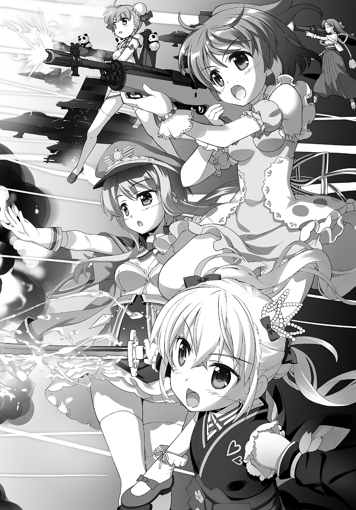
（......いや、本当、まだアレが不条理と決まった訳じゃないんじゃないかな......）
という様な突っ込みは、今更、僕に言える筈も、無かった。
●
――そういう訳で。
田舎から都会に出てきて。
僕はそれまでテレビの中にしか居ないと思っていた『正義の味方』の『魔法少女』達と出会ったのだった。
そう。魔法も正義も本当にあったのだ。
............
............
............
............
....................................................................................まあ、その、多分、ね。
あ と が き
どうも、小説屋のです。
新作『ウイッチ・アームス』ノベル版をお届けいたします！
本書は（大多数の方が御存知だとは思いますが）ソシャゲ――即ちソーシャル・ネットワーキング・サービス・ゲームを原作としたノベライズです。同名のソシャゲと同じ世界観、同じ登場人物を基に書かれておりまして、基本的に物語前半もソシャゲの展開と同様、というかソシャゲという媒体上補完出来なかった部分を補完する形で書かれております！
......というか......ソシャゲって、色々ややこしいんですね......
『ウイッチ・アームス』の前身の『メイデンクラフト』というゲームが、某林檎マークの会社からクレームを受けたのが２０１５年の秋（バーコードを読み取ってアイテム化するのが、いわゆるシリアル・コード商法にあたるとして問題視されたらしい。別に特定商品を売っていた訳でもないんですが）。
結果、『メイデンクラフト』は２０１５年末、急遽サービス中止に追い込まれ、ゲーム会社が大慌てで立ち上げたのがこの『ウイッチ・アームス』でありまして。
ゲーム会社側では『メイデンクラフト』のユーザー様達に、すんなり新作に移って貰える様、絵師さんは藤真先生に、シナリオはうち（一郎withＩＭＡＧＩＮＧＦＯＲＥＳＴ）に発注して『続き感』ともいうべきものを演出する事に。なので同じ考え方から、ノベライズ版たる本書の中でも『劇中劇』的な扱いで『メイデンクラフト』が出てきたりします。
その一方で『メイデンクラフト』との差別化が必要という事で、世界観は一新、主要キャラクターも刷新、その一方で『メイデンクラフト』との親和性は随所に持たせる様に、という発注がゲーム会社から来まして......色々模索した結果、ややシリアス寄りだった『メイデンクラフト』よりも、明るく、世界観の特徴としてやや悪ふざけ側に振った感じで『ウイッチ・アームス』は出来上がっております。ヒロイン三人の内の一人、彩芽が魔法少女のくせに、Ｍ14を振り回すのも、同じくアニタが召喚するのがＡ10〈サンダーボルトⅡ〉なのも、諸葉がサイコキラー気味なのも、完全に私の趣味です（笑）。
さて、読者の皆様の感想や如何に。
２０１６／５／31
一郎
著者紹介
一郎 さかき いちろう
１９９８年に『ドラゴンズ・ウィル』が第９回富士見ファンタジア長編小説大賞に準入選しデビュー。自称『軽小説屋』。速筆であり、多作なライトノベル作家であると同時に、アニメやゲームのシナリオライター、創作講座の講師としても活動中。
illustration
藤真拓哉 ふじま たくや
イラストレーター兼漫画家。
角川書店にて漫画『魔法少女リリカルなのはＶｉＶｉｄ』を連載中。
アニメやゲームのキャラクターデザインも手がけるマルチクリエイター。
ダッシュエックス文庫DIGITAL
ウィッチ・アームス
魔法少女は素敵なお仕事
著者 一郎
© ICHIRO SAKAKI 2016
２０１６年７月31日発行
この電子書籍は、ダッシュエックス文庫「ウィッチ・アームス 魔法少女は素敵なお仕事」
２０１６年６月29日発行の第１刷を底本としています。
発行者 鈴木晴彦
発行所 株式会社 集英社
〒１０１－８０５０
東京都千代田区一ツ橋２丁目５番10号
０３－３２３０－６０８０（読者係）
制作所 株式会社ＩＣＥ
本作品の全部また一部を無断で複製、転載、改竄、インターネット上に掲載すること、および有償無償に関わらず、本データを第三者に譲渡することを禁じます。なお個人利用の目的であっても、コピーガードを解除しての複製は、法律で禁じられています。